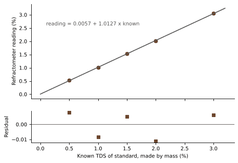
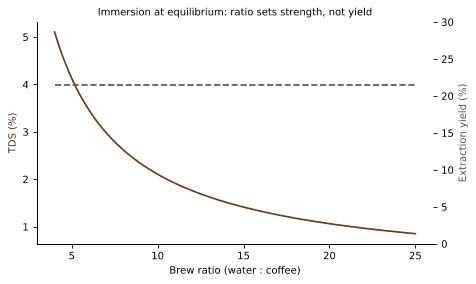
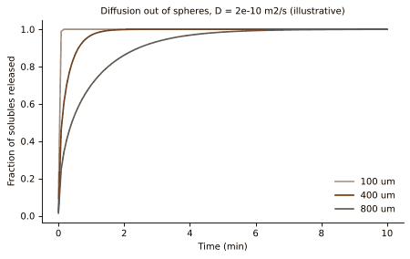
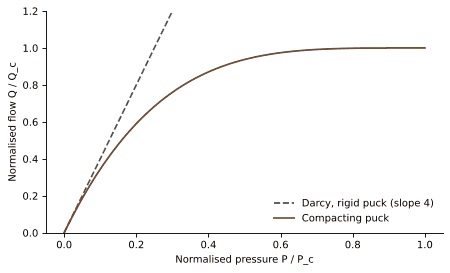
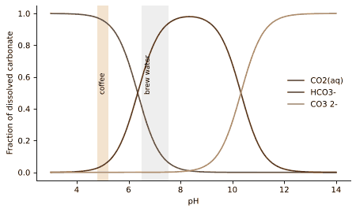
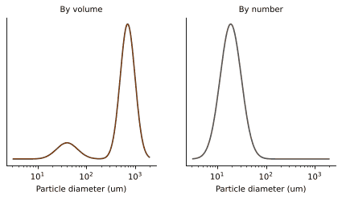
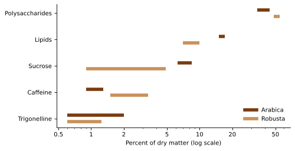
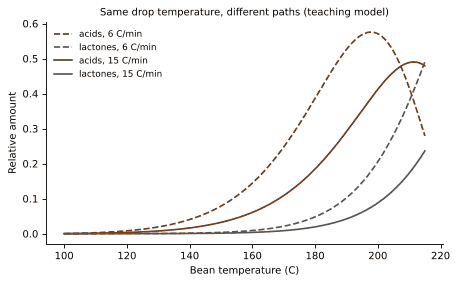

Upstream (complete)
How to use this book
Why does a coffee course start at the cup and finish at the roaster?
The order of the chapters
Most coffee courses follow the bean: farm, roaster, grinder, brewer, cup. This book runs the other way. It starts with measurement and the drink, works back through extraction, water, grinding, storage and the green bean, and ends with the physics and chemistry of roasting and a capstone experiment.
The reason is experimental. Every upstream variable is judged through the downstream ones. You cannot evaluate a roast without brewing and tasting it, and you cannot trust a brewing comparison until your tasting and your extraction measurements are reliable. If you roast first, every roasting experiment is confounded by grinding, water and extraction errors you have not yet learned to control. Working backward, each chapter builds an instrument the next one needs and removes one source of variation from the experiments that follow.
| Chapter | Topic | Builds |
|---|---|---|
| 0 | Instruments and measurement | uncertainty, calibration, titration |
| 1 | The cup: perception and composition | sensory tests and their statistics |
| 2A | Extraction I: immersion, equilibrium and kinetics | mass balances, equilibrium and diffusion models |
| 2B | Extraction II: percolation and espresso | flow through porous beds |
| 3 | Water | carbonate chemistry, water design |
| 4 | Grinding | particle statistics |
| 5 | Resting, staling and storage | degassing and staling kinetics |
| 6 | Green coffee: the roasting input | composition, moisture, heat budget |
| 7 | Roasting I: heat and mass transfer | energy balance, roast logs |
| 8 | Roasting II: chemistry | reaction networks along a rising temperature |
| 9 | Capstone and experimental design | a full experiment, designed and reported |
Chemistry runs through every chapter. Early chapters name compounds as facts about the cup: chlorogenic acid lactones are bitter, 2-furfurylthiol smells roasted. Chapter 8 explains where those compounds come from. By the end you should be able to trace an attribute you taste to a reaction in the roaster, and test the claim.
What you need to know already
The book is written for a second-year undergraduate in a science or engineering degree, or an equally prepared professional. It assumes:
- first-year general chemistry: moles, concentration, balanced equations, the idea of equilibrium and pH;
- first-year calculus: derivatives, integrals, exponentials and logarithms, and solving dy/dt = −ky.
It does not assume organic chemistry, physical chemistry, transport phenomena, statistics, sensory science or knowledge of the coffee trade. Every term is defined where it first appears. Five appendices supply the background, each with worked examples and problems:
- Appendix A, chemistry toolkit: units, concentration, equilibrium, acids, buffers, solubility.
- Appendix B, organic chemistry for coffee: functional groups and the reaction types of roasting and staling.
- Appendix C, physical chemistry and transport: rate laws, the Arrhenius equation, diffusion, heat transfer, gases.
- Appendix D, analytical methods: titration, pH, spectroscopy, chromatography, mass spectrometry, NMR, colour.
- Appendix E, statistics: descriptive statistics, binomial tests, t-tests, ANOVA, regression, power.
Each chapter lists its prerequisites at the top, including the appendix sections it relies on. Read those first if they are unfamiliar. Material that needs more mathematics than the list above, such as partial differential equations, is placed in "Going further" boxes; the main line of each chapter does not depend on them.
How a chapter is built
Every chapter follows the same plan, so that you always know where you are.
- Objectives at the top state what you should be able to do afterwards.
- An opening problem poses a concrete question about coffee that the chapter answers.
- Numbered sections each open by saying what question they address.
- Defined terms appear in bold at the point of definition and are collected in a key-terms list at the end of the chapter, with links back.
- Numbered equations are displayed with every symbol and its unit listed underneath. The notation is consistent across the book; see the Notation page.
- Worked examples have four parts: Problem, Plan, Solution and Check. Some end with "Your turn", leaving a step for you.
- "Check your understanding" questions follow most sections. Answer them before reading on: retrieving what you have just read is one of the most effective ways to remember it.
- "Common misconception" boxes state a belief that is widespread in coffee practice, and the evidence against it.
- "Status of the evidence" boxes say how strong the support for a claim is: how many studies, of what kind, and what they did not test.
- "Going further" boxes contain optional derivations and extensions.
- Calculators let you change the inputs of a model and see the result.
- Figures are drawn from the formulas and published models in the text, so you can reproduce them.
- "Looking ahead" names the question the next chapter answers.
- Labs give an aim, safety notes, materials, a method, a data sheet to fill in and the analysis to perform.
- Problems are graded A (recall and direct use), B (multi-step calculation) and C (design, critique and synthesis), and each is tagged with the section it practises. Worked solutions are on the chapter's solutions page, linked from each problem.
Calculators and self-checks
Calculators and self-checks are ordinary forms. With script enabled, calculators compute when you press Calculate and self-checks mark your answers. With script disabled, or in a text-only browser, every calculator shows the formula it uses so that you can work it by hand, and every self-check links to its answers at the end of the chapter. The print edition contains the whole book on one page; solutions are on separate pages so that you can attempt the problems first.
Equipment
A scale reading to 0.1 g (0.01 g is better), a thermometer, a kettle, a burr grinder, one percolation brewer (a cone dripper) and one immersion brewer (a French press or cupping bowls) are enough for Chapters 0 to 5. A pH meter with buffers, a 10 mL syringe or burette and standardised dilute sodium hydroxide cover the titrations. Distilled water and food-grade Epsom salt, calcium chloride and baking soda cover Chapter 3. A coffee refractometer makes Chapters 2A and 2B much faster; without one, measure dissolved solids by drying a weighed sample of brew in a low oven. An espresso machine is needed only for Lab L2.4. Chapters 6 to 9 need a small roaster with a thermocouple and logging; a hot-air popcorn popper is the cheapest option. Labs that need laboratory instruments (a water activity meter, a UV-visible spectrophotometer) are marked and optional.
Pace
Each chapter is planned as one to three weeks of part-time study, about twenty-four weeks in all, with the appendices read as needed. The labs matter more than the reading. Keep a bound notebook with every recipe, measurement and tasting note; Chapter 9 asks you to use it.
Notation
Which symbol means what, and in what unit?
Most symbols below have one meaning throughout the book; the few with a second meaning in a particular chapter say so. The last column gives where each symbol is used. Temperatures appear in formulas in kelvin (K) and in prose in degrees Celsius (°C). Fractions such as strength and extraction yield are written as decimals in formulas (0.0135) and as percentages in prose (1.35%).
Brewing
| Symbol | Meaning | Unit | Where |
|---|---|---|---|
| mc | dose of dry coffee | g | Chapters 0, 2A, 2B |
| mw | brew water (Chapter 7: water in the beans) | g | Chapters 2A, 7 |
| mb | beverage | g | Chapters 0, 2A, 2B |
| ms | dissolved solids | g | Chapter 2A |
| S | strength: total dissolved solids as a mass fraction | dimensionless | Chapters 0, 2A, 2B |
| E | extraction yield | dimensionless | Chapters 0, 2A, 2B |
| r | brew ratio, mw/mc | g/g | Chapters 0, 2A |
| rret | liquid retained per gram of grounds | g/g | Chapters 0, 2A |
| K, Emax | extraction equilibrium constant; maximum extractable fraction | dimensionless | Chapter 2A |
| τ | time constant | s or min | Chapters 2A, 5 |
| φ | fraction of solubles in the fast population | dimensionless | Chapter 2A |
Transport and heat
| Symbol | Meaning | Unit | Where |
|---|---|---|---|
| D | diffusivity | m2/s | Chapter 2A, Appendix C |
| a, d | particle radius, diameter | m | Chapters 2A, 2B, 4 |
| Q | volumetric flow rate | m3/s | Chapter 2B |
| κ | permeability | m2 | Chapter 2B |
| ε | porosity (Chapter 7: emissivity) | dimensionless | Chapters 2B, 7 |
| μ | dynamic viscosity | Pa s | Chapter 2B, Appendix C |
| ρ | density | kg/m3 | throughout |
| ΔP | pressure difference | Pa | Chapter 2B |
| Re | Reynolds number | dimensionless | Chapter 2B |
| h | heat-transfer coefficient | W/(m2 K) | Chapters 6, 7, Appendix C |
| λ | thermal conductivity | W/(m K) | Chapters 6, 7, Appendix C |
| cp | specific heat capacity | J/(kg K) | Chapters 6, 7 |
| Lv | latent heat of vaporisation | J/kg | Chapters 6, 7 |
| Bi | Biot number | dimensionless | Chapter 7, Appendix C |
| α | thermal diffusivity (Chapter 3 and Appendix A: fraction of an acid dissociated) | m2/s | Chapter 7, Appendix C |
| γ | heating rate, dT/dt | °C/min | Chapters 7, 8 |
Chemistry and kinetics
| Symbol | Meaning | Unit | Where |
|---|---|---|---|
| n | amount of substance | mol | Appendix A |
| M | molar mass | g/mol | Appendix A |
| [X] | concentration of species X | mol/L | Chapter 3, Appendix A |
| Ka, pKa | acid dissociation constant and its negative logarithm | mol/L; dimensionless | Chapter 3, Appendix A |
| Ksp | solubility product | mol2/L2 | Chapter 3, Appendix A |
| k | rate constant | 1/s or 1/min | Chapters 5, 8, Appendix C |
| Ea | activation energy | J/mol | Chapters 5, 8, Appendix C |
| R | gas constant, 8.314 | J/(mol K) | throughout |
| T | temperature | K | throughout |
| β | Weibull shape parameter | dimensionless | Chapter 5 |
| w, X | moisture content, wet and dry basis | dimensionless | Chapter 6 |
| aw | water activity | dimensionless | Chapter 6 |
Statistics
| Symbol | Meaning | Where |
|---|---|---|
| mx | sample mean of x | Appendix E |
| s | sample standard deviation | Chapter 0, Appendix E |
| SE | standard error of the mean | Chapter 0, Appendix E |
| pc, pd | proportion correct; proportion of discriminators | Chapter 1, Appendix E |
| α | significance level | Chapter 9, Appendix E |
| d | effect size (difference divided by standard deviation) | Chapter 9, Appendix E |
| d' | sensory difference in standard-deviation units | Appendix E |
0. Instruments and measurement
How do I know a number is good enough to act on?
After this chapter you can
- Report any measurement as a value with an uncertainty, and classify the uncertainty as random or systematic.
- Calibrate a scale, a thermometer and a refractometer, and fit a calibration line by least squares.
- Propagate uncertainty through sums, products and quotients, including extraction yield.
- Measure extraction yield by oven drying and correct it for liquid retained in the grounds.
- Titrate a brew to pH 8.2, report titratable acidity, and explain why it differs from pH.
- Explain why roast colour and particle size readings belong to one instrument and one method.
Prerequisites: Appendix A, Sections A.1 and A.2 (amount of substance, concentration); Appendix E, Section E.1 (mean and standard deviation).
Two baristas compare grinders. With the old grinder their pour-over measured an extraction of 20.3%; with the new one, 20.7%. One says the new grinder extracts more. The other says the difference is noise. Neither can settle the argument, because neither knows how far a single measurement can be trusted.
Every later chapter of this book asks a question of the same kind: did a change in water, grind, rest or roast change the cup? This chapter builds the tools to answer it. We start with what a measurement is, then work through the instruments a coffee laboratory uses (scale, thermometer, refractometer, pH meter) and finish with the human taster, the least precise instrument of all.
1. A measurement has two parts
A measured value is incomplete without a statement of how far it might be from the true value. That statement is the uncertainty, written after the value with a plus-or-minus sign. A dose weighed as 15.0 g on a scale that is reliable to 0.1 g is reported as 15.0 ± 0.1 g. Omitting the uncertainty does not make a number more exact; it only hides whether two results differ.
Random and systematic error
Errors come in two kinds, and they need different remedies.
Random error scatters repeated readings around their average. The last digit of a refractometer flickers; one pour is a gram heavier than the next. Repeating a measurement and averaging reduces random error.
Systematic error shifts every reading in the same direction by the same amount. A thermometer that reads 2 °C low is wrong by 2 °C every time, so averaging a hundred readings leaves the 2 °C error untouched. Only calibration, comparing the instrument against something whose value is known, removes systematic error.
Two related words are often confused. Precision describes how closely repeated readings agree with each other. Accuracy describes how close their average is to the true value. A refractometer can be precise and inaccurate at once: it gives the same reading every time, and that reading is wrong.
Quantifying random error
The scatter of n repeated readings x1, x2, …, xn is measured by the standard deviation, s, defined in Appendix E.1. Roughly two thirds of individual readings fall within one standard deviation of the mean.
The average of n readings is more reliable than any single reading. Its uncertainty is the standard error:
| SE = s / √n | (0.1) |
| where | s | standard deviation of the individual readings (same unit as the readings) |
| n | number of independent readings |
Because of the square root, halving the standard error requires four times as many readings. Equation 0.1 applies only to random error; systematic error does not shrink with n.
The uncertainty also fixes how many digits are worth reporting. If a calculation gives an extraction yield of 22.48 ± 0.38%, the second decimal place carries no information, and the result is written 22.5 ± 0.4%. Digits that the uncertainty does not support are not significant figures.
Combining uncertainties
Most results are calculated from several measurements, each with its own uncertainty. If the errors are independent of one another, they partly cancel, and the combined uncertainty is smaller than the simple sum. The rule for combining them is called addition in quadrature: square the individual uncertainties, add the squares, and take the square root.
For a sum or difference such as q = x + y, the absolute uncertainties combine:
| δq = √[(δx)2 + (δy)2] | (0.2) |
| where | δx, δy | uncertainties of the measured quantities x and y (same unit as x and y) |
| δq | uncertainty of the result q |
For a product or quotient such as q = xy/z, the relative uncertainties (each uncertainty divided by its value) combine:
| δq/q = √[(δx/x)2 + (δy/y)2 + (δz/z)2] | (0.3) |
| where | δq/q | relative uncertainty of the result (dimensionless) |
Going further: Where the quadrature rule comes from
For a result q(x, y) that depends on two independent measurements, a small error δx changes q by about (∂q/∂x)δx, and similarly for y. The variance of a sum of independent random quantities is the sum of their variances, so (δq)2 = (∂q/∂x)2(δx)2 + (∂q/∂y)2(δy)2. For q = x + y both derivatives equal 1, which gives Equation 0.2. For q = xy, ∂q/∂x = y; dividing through by q2 gives Equation 0.3. Simple addition of the uncertainties is the worst case, in which every error happens to push the same way.
To apply Equation 0.3 to coffee we need the two quantities that the rest of the book is built on. The total dissolved solids (TDS) of a brew is the mass of dissolved coffee material per mass of brew; we write it S, for strength, and quote it in percent. The extraction yield (EY), written E, is the fraction of the dry coffee that ended up dissolved. For a pour-over, where all the dissolved material we count is in the cup,
| E = S mb / mc | (0.4) |
| where | E | extraction yield (fraction; quoted in %) |
| S | total dissolved solids, as a mass fraction (fraction; quoted in %) | |
| mb | mass of beverage (g) | |
| mc | mass of dry coffee (the dose) (g) |
Chapter 2A derives Equation 0.4 and its counterpart for immersion brewing.
Worked example: Uncertainty of an extraction yield
Problem. A pour-over uses a dose of 15.0 ± 0.1 g, gives 250 ± 1 g of beverage, and reads 1.35 ± 0.02% TDS. Find the extraction yield and its uncertainty.
Plan. Calculate E from Equation 0.4. It is a product and quotient, so combine relative uncertainties with Equation 0.3.
Solution. From Equation 0.4, E = 0.0135 × 250 / 15.0 = 0.225, or 22.5%. The relative uncertainties are 0.02/1.35 = 1.48% for TDS, 1/250 = 0.40% for the beverage and 0.1/15.0 = 0.67% for the dose. Combined: √(1.482 + 0.402 + 0.672) = 1.68%. The absolute uncertainty is 0.0168 × 22.5 = 0.38 percentage points, so E = 22.5 ± 0.4%.
Check. The TDS term dominates, so the combined relative uncertainty should be a little above 1.48%; it is. A better scale would barely help; a better TDS measurement would.
The answer resolves the baristas' argument: with these instruments, single brews at 20.3% and 20.7% cannot be told apart.
Check your understanding: Section 1
2. Mass
Having seen that uncertainty decides what a number can tell us, we turn to the instruments, starting with the one used most often. Coffee and kitchen scales weigh with a load cell, a metal element whose electrical resistance changes slightly as it bends under load. Four properties decide whether a scale can be trusted.
Resolution is the smallest step the display shows. It is not the uncertainty: a scale that displays 0.1 g may repeat only to 0.2 g.
Linearity is whether the reading is proportional to the true mass across the range you use. To check it, weigh objects of known mass at several points across the range. Plotting reading against known mass should give a straight line through the origin with slope 1.
Repeatability is the standard deviation of repeated weighings of one object, removing and replacing it each time.
Drift is a slow change of reading with time. Load cells drift as they warm, and a cup of hot coffee loses a few tenths of a gram per minute by evaporation. Weigh beverage promptly, or cover the cup.
3. Temperature
A thermometer is calibrated at two fixed points. Crushed ice stirred in water is at 0.0 °C. Water boils at 100 °C only at standard sea-level pressure; the boiling point falls by about 0.3 °C for every 100 m of altitude and shifts by a few tenths of a degree with the weather.
A probe also has a response time: a thick probe can take thirty seconds to settle. That lag is small in a kettle and large in a roaster, where bean temperature changes by several degrees per minute (Chapter 7).
Location matters as much as calibration. The water in the kettle, the slurry in a dripper and the bed beneath it can differ by several degrees. Always record where a temperature was measured.
4. Refractometry
Weighing and temperature are familiar. The measurement of dissolved solids is not, and most of the quantitative work in Chapters 1 to 5 depends on it.
When light passes from one transparent material into another, it changes direction. The amount of bending depends on the refractive index of each material, a number that rises as more material is dissolved in a liquid. A refractometer measures the refractive index of a drop of liquid on a glass prism. At the low concentrations of brewed coffee, refractive index rises almost in proportion to dissolved solids, and the instrument converts the reading to TDS with a calibration curve stored by the manufacturer.
Three practical consequences follow.
- Temperature. Refractive index falls as temperature rises. Instruments compensate, but a hot sample keeps changing as it cools on the prism. Cool samples to room temperature in a sealed cup first, so that no water evaporates.
- Particles. Suspended particles scatter light and bias the reading. Unfiltered samples (espresso, French press) must be settled or filtered. If you filter, filter every sample the same way and say so, since filtering can also remove some dissolved material.
- Calibration basis. The conversion is specific to coffee solids. A sugar refractometer reads in degrees Brix (grams of sucrose per 100 g of solution) and needs a separate conversion factor.
Common misconception
A refractometer that displays 1.35% TDS has measured TDS to ±0.01%. The display resolution is 0.01%, but the reading also carries the instrument's calibration error, the effect of sample temperature and particles, and the variation between samples drawn from the same brew. Lab L0.3 measures that sampling variation directly; it is usually two or three times the display resolution.
Calibrating against standards made by mass
The most reliable way to calibrate a refractometer is to make solutions whose TDS is known because you weighed every component. Liang, Chan and Ristenpart (2021) calibrated their instrument this way, using solutions of instant coffee between 0.5 and 4 g per 100 g of water [1].
The procedure has four steps. First, dry a sample of instant coffee in a low oven to find its moisture content. Second, dissolve weighed amounts of instant coffee in weighed water. Third, compute each standard's true TDS as mass of dry solids divided by total mass. Fourth, read each standard several times.
The readings are then compared with the true values by fitting a straight line. The method of least squares chooses the slope and intercept that make the sum of squared vertical distances from the points to the line as small as possible (Appendix E.5). The slope shows whether the instrument scales correctly, the intercept shows whether it is correctly zeroed, and the scatter of the points about the line estimates the precision of a single reading. Figure 0.1 shows such a fit.

Figure 0.1. Calibration of a refractometer against five standards made by mass (teaching data). The lower panel shows the residuals, the differences between each reading and the fitted line; a good calibration leaves residuals that scatter without pattern.
Worked example: Correcting a reading with a calibration line
Problem. A calibration gives reading = 0.0057 + 1.0127 × true, both in % TDS. A brew reads 1.373%. What is its true TDS, and how large is the error if the calibration is ignored?
Plan. Invert the calibration line to express the true value in terms of the reading.
Solution. true = (reading − 0.0057)/1.0127 = (1.373 − 0.0057)/1.0127 = 1.350%. Using the raw reading would overstate TDS by 0.023 percentage points, a relative error of 1.7%.
Check. A slope 1.3% above 1 and a small positive intercept both push readings up, so the corrected value must be below the reading. It is. The 1.7% systematic error is as large as the whole random uncertainty found in Section 1.
Zeroing
The zero point depends on the water used to set it. Zero with your brew water to measure only the solids that came from the coffee. Zero with distilled water to measure everything dissolved, including the minerals already in the water. With 150 mg/L of minerals in the brew water the difference is 0.015% TDS, which shifts extraction yield by about one percentage point at filter strength. Record which you did.
How well do instruments agree?
Commercial coffee refractometers agree closely with one another but are rarely compared with an independent standard. In one informal comparison of three instruments, two current models differed by at most 0.007% TDS across three brews, while an older model differed from both and scattered more; the comparison had no reference standard [2]. Calibrate your own instrument, keep the method fixed, and report the method with every result.
Check your understanding: Section 4
5. Extraction yield by oven drying
A refractometer infers dissolved solids indirectly. Oven drying measures extraction directly: weigh the dry dose, brew, dry the spent grounds in a low oven (about 100 °C) until their mass stops changing, and weigh them again. The mass lost by the grounds is the mass extracted.
The method contains a hidden bias. Spent grounds hold liquid, and in an immersion brew that liquid has the same TDS as the cup. When the grounds are dried, the solids dissolved in that retained liquid stay behind on the grounds and are counted as unextracted. Let r be the brew ratio, the mass of brew water per gram of dry coffee, and rret the mass of liquid retained per gram of grounds. Liang and colleagues showed that for immersion brews [1]
| Eoven ≈ E (1 − rret / r) | (0.5) |
| where | Eoven | extraction yield measured by drying the grounds (fraction) |
| E | true extraction yield (fraction) | |
| rret | liquid retained per gram of grounds (g/g) | |
| r | brew ratio, water per gram of dry coffee (g/g) |
They also estimated that about 2.3% of the dissolved solids are lost by evaporation during drying [1].
Worked example: Correcting an oven-dried yield
Problem. An immersion brew uses 20.0 g of coffee and 320 g of water. After decanting, 280 g of liquid is recovered. Drying the grounds shows a mass loss of 3.70 g. Find the true extraction yield.
Plan. Compute the apparent yield, estimate rret from the missing liquid, then correct with Equation 0.5.
Solution. Apparent yield: 3.70/20.0 = 18.5%. The brew ratio is r = 320/20.0 = 16. About 320 − 280 = 40 g of liquid stayed in the grounds, so rret ≈ 40/20.0 = 2.0 g/g (neglecting the small mass of dissolved solids). Correction factor: 1 − 2.0/16 = 0.875. True yield: 18.5/0.875 = 21.1%.
Check. The correction raises the yield, as it must, since the bias counts extracted solids as unextracted. Its size, 2.6 percentage points, is larger than every random error in Section 1.
A second gravimetric method dries a weighed portion of the beverage itself and weighs the residue. It gives TDS directly and is the reference against which refractometers are ultimately judged. It needs an analytical balance reading to 0.001 g, because 20 g of brew at 1.3% leaves only 0.26 g of residue.
6. pH and titratable acidity
Sourness is one of the attributes tasters notice first, and two different measurements are used to describe the acid behind it.
pH measures the hydrogen ions that are free in solution at the moment of measurement: pH = −log10[H+], with [H+] in mol/L (Appendix A.5). Most acids in coffee are weak acids: at the pH of a brew, most of their molecules keep their hydrogen ions rather than releasing them. Those undissociated molecules hardly affect pH.
Titratable acidity counts them too. In a titration, a base of known concentration (here sodium hydroxide, NaOH) is added to a measured volume of brew until the pH reaches a chosen endpoint. Each hydroxide ion removes one hydrogen ion, so the amount of base added equals the number of acidic hydrogens that the acids could give up between the starting pH and the endpoint.
| TA = cNaOH VNaOH / Vsample | (0.6) |
| where | TA | titratable acidity (mol/L (quoted in mmol/L)) |
| cNaOH | concentration of the sodium hydroxide (mol/L) | |
| VNaOH | volume of sodium hydroxide added to reach the endpoint (L) | |
| Vsample | volume of brew titrated (L) |
The UC Davis coffee group titrates 50 mL of brew to pH 8.2 [3]. Across 744 drip brews, titratable acidity rose in proportion to TDS and tracked trained tasters' ratings of sourness closely. pH hardly changed with brewing strength, tracked sourness weakly or not at all, and followed roast level instead [3]. In a separate study, hot and cold brew had almost the same pH (4.85 to 5.13) while hot brew had more titratable acid [4].
Common misconception
A lower pH means a more sour coffee. Brewed coffee is a buffer, a solution that resists changes in pH because it contains weak acids together with their salts (Appendix A.6). Making a brew stronger adds acid and salt in roughly fixed proportion, so pH barely moves while the total acid rises. Tasters respond to the total. Across brews of one coffee, titratable acidity predicts sourness; pH does not.
Worked example: From a titration to titratable acidity
Problem. 50.0 mL of brew needs 4.10 mL of 0.0200 mol/L NaOH to reach pH 8.2. Find the titratable acidity.
Plan. Convert the volume of base to moles, then divide by the sample volume (Equation 0.6).
Solution. Moles of NaOH = 4.10 × 10−3 L × 0.0200 mol/L = 8.20 × 10−5 mol. TA = 8.20 × 10−5 mol / 0.0500 L = 1.64 × 10−3 mol/L = 1.64 mmol/L.
Check. Units: mol divided by L gives mol/L. Typical drip coffee lies between about 1 and 2.5 mmol/L by this method, so the value is plausible.
Your turn. Some laboratories report TA as milligrams of citric acid per litre. Citric acid (192.1 g/mol) gives up three hydrogen ions. Show that 1.64 mmol/L corresponds to 105 mg/L as citric acid. The convention allows comparison; it does not mean the acid is citric.
A pH meter is calibrated with two buffer solutions of known pH that bracket the samples (pH 4 and 7 for coffee) and rinsed between samples. Its glass electrode responds slowly in dilute solutions and its reading shifts with temperature, so measure all samples at one temperature. Appendix D.2 explains how the electrode works.
Check your understanding: Section 6
7. Roast colour
Roast degree is usually reported as a colour reading. A reflectance instrument shines light on a sample, usually ground coffee pressed flat, and measures the fraction reflected. Coffee instruments report on their own scales (Agtron-type numbers or proprietary units). General-purpose colorimeters report CIE L*a*b* coordinates, in which L* is lightness from 0 (black) to 100 (white) (Appendix D.10). Readings from different instruments are not interchangeable, and grind size and how firmly the sample is pressed both change the number [5].
A colour reading is one number for a bean whose surface and centre can differ (Chapter 7). When researchers want two roasts at the same degree, they therefore match them on two independent measures. In an ETH Zurich study, hot-air roasts made at high and low temperature were matched on L* (24.06 against 24.02) before any other property was compared. They were also matched on roast loss, the fraction of mass lost in roasting (15.33% against 15.81%) [6]. Record ground colour and mass loss for every roast you make.
8. Particle size
A grind is described by its particle size distribution, the proportion of material in each range of particle sizes. It is measured by sieving, by laser diffraction or by image analysis. Each method counts particles differently, so their results cannot be compared directly, and grinder speed and feed rate also change the result [7]. Low-cost image analysis from a phone camera resolves small particles better than sieves [8]. Chapter 4 develops the statistics. Until then, treat "grind size" without a named method as an incomplete measurement.
9. The taster as an instrument
A human taster has the same properties as any instrument. A threshold is the smallest concentration of a substance that the taster can detect. Resolution is the smallest difference the taster can detect between two samples. Drift comes from fatigue and adaptation, and bias from expectation, serving order and even the colour of the cup. International standards specify how to select and train assessors and how to run tasting tests [9]. Chapter 1 shows how to measure thresholds and how to design tests whose results survive statistical analysis. Until then, record the conditions of every tasting: time of day, what you ate beforehand, the serving order and how many samples came before each one.
Looking ahead
We can now attach an honest uncertainty to a mass, a temperature, a TDS reading and a titration. The one instrument we have not yet calibrated is the person drinking the coffee. Chapter 1 asks what that instrument detects, how its readings can be made reliable, and which substances in the cup it is responding to.
Key equations
| Quantity | Equation | Notes |
|---|---|---|
| Standard error of a mean | SE = s / √n | Equation 0.1. Reduces random error only. |
| Product or quotient | δq/q = √[Σ(δxi/xi)2] | Equation 0.3. Independent errors. |
| Extraction yield, percolation | E = S mb / mc | Equation 0.4. |
| Oven-yield bias, immersion | Eoven ≈ E (1 − rret/r) | Equation 0.5. Liang et al. 2021. |
| Titratable acidity | TA = cNaOH VNaOH / Vsample | Equation 0.6. Endpoint pH 8.2. |
Key terms
Accuracy; brew ratio; buffer; buffer solution; calibration; Drift; endpoint; extraction yield; in quadrature; least squares; Linearity; load cell; measurement uncertainty; particle size distribution; pH; Precision; Random error; reflectance; refractive index; refractometer; Repeatability; Resolution; response time; sample standard deviation; significant figures; standard error of the mean; Systematic error; threshold; Titratable acidity; titration; total dissolved solids; weak acid.
Chapter review
Labs
Lab L0.1: Calibrating the instruments
Aim. Establish the linearity, repeatability and calibration of your scale, thermometer and refractometer.
Safety
- Boiling water scalds: use a stable kettle and a heat-resistant container.
- Wipe up spills near electrical scales.
Materials
- 0.1 g scale and, if available, an analytical balance (0.001 g)
- Objects of known mass or a calibrated flask
- Thermometer, crushed ice, kettle
- Refractometer, instant coffee, distilled water, small sealed cups
- Low oven for the moisture content of the instant coffee
Method
- Dry 5 g of instant coffee at 100 °C to constant mass to find its moisture content.
- Prepare five standards by mass between 0.5 and 3.0% true TDS, correcting for the moisture you measured.
- Read each standard three times at room temperature, wiping the prism between readings.
- Weigh one object ten times, removing and replacing it each time.
- Check the thermometer in stirred ice water and in boiling water; look up the boiling point for your altitude.
Data sheet
| Standard | Solids (g) | Water (g) | True TDS (%) | Reading 1 | Reading 2 | Reading 3 |
|---|---|---|---|---|---|---|
Analysis
- Fit reading against true TDS by least squares with the calibration calculator. Report slope, intercept and residual standard deviation.
- Compute the standard deviation of the ten weighings.
- Write down the corrections you will apply to future refractometer and thermometer readings.
What to expect. Slopes within a few percent of 1 and residual standard deviations of 0.01 to 0.02% TDS are typical of current coffee refractometers.
Lab L0.2: Titratable acidity and pH of three brews
Aim. Measure pH and titratable acidity of brews that differ in strength, and compare them.
Safety
- Sodium hydroxide solution damages eyes: wear eye protection and gloves.
- Label all solutions.
Materials
- pH meter with pH 4 and 7 buffers
- Burette or 10 mL graduated syringe
- 0.0200 mol/L NaOH (standardised; see Appendix D.2)
- 50 mL volumetric pipette or graduated cylinder
- Three brews of one coffee at about 1.0, 1.3 and 1.6% TDS
Method
- Calibrate the pH meter with both buffers.
- Cool each brew to room temperature in a covered cup and measure its pH.
- Titrate 50.0 mL of each brew with NaOH, stirring, to a stable pH of 8.2; record the volume.
- Repeat each titration once.
Data sheet
| Brew | TDS (%) | pH | NaOH (mL) run 1 | NaOH (mL) run 2 | TA (mmol/L) |
|---|---|---|---|---|---|
Analysis
- Plot titratable acidity against TDS and against pH.
- Which tracks strength more closely? Compare your answer with the UC Davis results in Section 6.
What to expect. Titratable acidity should rise roughly in proportion to TDS while pH changes by only a few hundredths.
Lab L0.3: Repeatability of one TDS measurement
Aim. Find how much of the spread in your extraction yields comes from measurement rather than from brewing.
Materials
- One brew
- Refractometer
- A second operator if possible
Method
- Take ten samples from one well-stirred brew and read each once.
- If possible, have a second person repeat the ten readings using their own sampling technique.
Data sheet
| Sample | Operator 1 reading | Operator 2 reading |
|---|---|---|
Analysis
- Compute the mean and standard deviation for each operator.
- Use the standard deviation as the TDS uncertainty in the uncertainty calculator. What is the resulting uncertainty in extraction yield?
Problems
- [A, Section 1] Define precision and accuracy, and give a coffee example of an instrument that is precise but inaccurate. Solution
- [A, Section 1] Why does averaging not remove the error of a thermometer that reads 2 °C low? Solution
- [A, Section 4] List three reasons a refractometer reading can differ from the true TDS of a brew. Solution
- [B, Section 1] An espresso uses 18.0 ± 0.1 g of coffee, yields 40.0 ± 0.5 g, and reads 9.50 ± 0.10% TDS. Compute the extraction yield and its uncertainty. Solution
- [B, Section 1] You weigh 100 g of water ten times and find a standard deviation of 0.08 g. What is the standard error of the mean, and what does it describe? Solution
- [B, Section 3] At 1,200 m altitude, what boiling-point reading would you expect from a correct thermometer, using 0.3 °C per 100 m? Solution
- [B, Section 4] You make a standard from 2.000 g of instant coffee containing 3.5% moisture dissolved in 98.000 g of water. What is its true TDS? Solution
- [B, Section 4] Your brew water contains 120 mg/L of dissolved solids, and you zero the refractometer with distilled water. By how much does the reading overstate the coffee's own TDS, and what does that do to the extraction yield of a brew reading 1.30%? Solution
- [B, Section 5] An immersion brew of 15 g in 240 g of water retains 2.2 g of liquid per gram of grounds. By what factor does the oven method underestimate the yield? Solution
- [B, Section 6] Express a titratable acidity of 1.18 mmol/L as mg/L of citric acid equivalents. Solution
- [C, Section 4] Design a procedure to decide whether two refractometers give different readings for filter coffee. Include sampling, replication and the analysis. Solution
- [C, Section 1] A colleague reports that a new grinder raised their extraction yield from 20.3% to 20.7%. List what you would need to know before believing it. Solution
- [C, Section 7] Why should a roasting experiment match samples on both roast colour and mass loss rather than colour alone? Solution
- [C, Section 6] Explain why a pH meter can show almost no change across brews of different strength while titratable acidity changes a lot. Solution
- [C, Section 7] A home roaster reports roast degree only as 'Agtron 65'. What further information would you need to compare that roast with yours? Solution
Tiers: A recall, B calculation, C analysis or design.
References
- Liang J., Chan K.C., Ristenpart W.D. (2021), An equilibrium desorption model for the strength and extraction yield of full immersion brewed coffee, Scientific Reports 11:6904.
- Socratic Coffee (2015), Measuring total dissolved solids: a refractometer comparison, part II, socraticcoffee.com.
- Batali M.E., Cotter A.R., Frost S.C., Ristenpart W.D., Guinard J.-X., titratable acidity, pH and sourness in drip brew coffee, ACS Food Science and Technology; summarised in SCA 25 magazine, issue 15.
- Rao N.Z., Fuller M. (2018), Acidity and antioxidant activity of cold brew coffee, Scientific Reports 8.
- Roasted coffee beans characterization through optoelectronic color sensing, Brazilian coffee research repository (sbicafe.ufv.br).
- Schenker S. (2000), Investigations on the Hot Air Roasting of Coffee Beans, Dissertation ETH Zurich No. 13620.
- Gagné J. (2023), What I learned from analyzing 300 particle size distributions for 24 espresso grinders, Coffee ad Astra.
- Home-Barista forum, software for analysing grinder particle size distribution with a phone camera.
- ISO 4120:2021 Sensory analysis, triangle test; ISO 13299:2016 sensory profile; ISO 8586 selection and training of assessors.
Answers to self-checks
Check your understanding: Section 1
- random error only. Averaging reduces scatter. A calibration offset is identical in every reading and survives averaging.
- 0.0095 %. SE = 0.030/√10 = 0.0095%.
Check your understanding: Section 4
- overstated by the minerals' contribution. Zeroing with distilled water counts the dissolved minerals of the brew water as if they came from the coffee.
- 1.391 %. true = (1.380 − 0.010)/0.985 = 1.391%.
Check your understanding: Section 6
- Titratable acidity. Titratable acidity counts all acidic hydrogens up to the endpoint and tracks sourness better than pH.
- 1.18 mmol/L. 2.95 × 10−3 × 0.0200 = 5.90 × 10−5 mol in 0.0500 L gives 1.18 mmol/L.
Chapter review
- 2.4 %. Relative errors 0.50%, 0.63% and 2.31% combine in quadrature to about 2.4%.
- too low. Solids dissolved in the retained liquid stay on the grounds and are counted as unextracted.
- Repeatability. Repeatability is the spread of repeated weighings of one object.
- Colour describes the ground surface, while mass loss reflects the whole bean, and the two can disagree. Two roasts can match on one measure and differ on the other, especially when heating rates differ.
Solutions
Problem 1 [A]
Define precision and accuracy, and give a coffee example of an instrument that is precise but inaccurate.
Precision is how closely repeated readings agree; accuracy is how close their mean is to the true value. A refractometer zeroed with mineral-rich tap water gives tightly grouped readings that are all about 0.015% TDS too high: precise but inaccurate.
Problem 2 [A]
Why does averaging not remove the error of a thermometer that reads 2 °C low?
The error is systematic: every reading carries the same offset, so the mean carries it too. Only calibration against a known temperature removes it.
Problem 3 [A]
List three reasons a refractometer reading can differ from the true TDS of a brew.
Sample temperature different from the instrument's reference; suspended particles scattering light; calibration error (slope or zero), including zeroing with water that contains minerals. Sampling variation within the brew adds a fourth.
Problem 4 [B]
An espresso uses 18.0 ± 0.1 g of coffee, yields 40.0 ± 0.5 g, and reads 9.50 ± 0.10% TDS. Compute the extraction yield and its uncertainty.
E = 0.0950 × 40.0 / 18.0 = 21.1%. Relative errors: 0.10/9.50 = 1.05%, 0.5/40.0 = 1.25%, 0.1/18.0 = 0.56%. Combined: √(1.052 + 1.252 + 0.562) = 1.73%, so the uncertainty is 0.0173 × 21.1 = 0.37 points. E = 21.1 ± 0.4%. Here beverage mass matters as much as TDS, because 0.5 g is large relative to 40 g.
Problem 5 [B]
You weigh 100 g of water ten times and find a standard deviation of 0.08 g. What is the standard error of the mean, and what does it describe?
SE = 0.08/√10 = 0.025 g. It describes the uncertainty of the average of the ten readings. A single weighing still has an uncertainty of about 0.08 g.
Problem 6 [B]
At 1,200 m altitude, what boiling-point reading would you expect from a correct thermometer, using 0.3 °C per 100 m?
100 − 0.3 × 12 = 96.4 °C, to within the weather-dependent variation of about ±0.5 °C.
Problem 7 [B]
You make a standard from 2.000 g of instant coffee containing 3.5% moisture dissolved in 98.000 g of water. What is its true TDS?
Dry solids = 2.000 × 0.965 = 1.930 g. Total mass = 100.000 g. TDS = 1.930%. The 0.070 g of water in the instant coffee is already part of the total mass.
Problem 8 [B]
Your brew water contains 120 mg/L of dissolved solids, and you zero the refractometer with distilled water. By how much does the reading overstate the coffee's own TDS, and what does that do to the extraction yield of a brew reading 1.30%?
120 mg/L is about 0.012% by mass. The coffee's own TDS is 1.288%, so extraction yield is overstated by 0.012/1.300 = 0.9% in relative terms, about 0.2 percentage points at 20% EY.
Problem 9 [B]
An immersion brew of 15 g in 240 g of water retains 2.2 g of liquid per gram of grounds. By what factor does the oven method underestimate the yield?
r = 16 and rret = 2.2. By Equation 0.5 the factor is 1 − 2.2/16 = 0.8625. The oven yield is 13.75% too low in relative terms: for example 18.9% instead of 21.9%.
Problem 10 [B]
Express a titratable acidity of 1.18 mmol/L as mg/L of citric acid equivalents.
1.18/3 = 0.393 mmol/L of citric acid; × 192.1 g/mol = 75.6 mg/L.
Problem 11 [C]
Design a procedure to decide whether two refractometers give different readings for filter coffee. Include sampling, replication and the analysis.
Prepare several brews spanning the working range. From each, take one well-mixed sample, cool it to room temperature, and read it alternately on both instruments several times, randomising which goes first. For each brew compute the mean difference between instruments and its confidence interval (a paired comparison, Appendix E.3), and plot the difference against TDS to see whether it changes across the range. Include standards made by mass so that at least one instrument can be compared with a known value.
Problem 12 [C]
A colleague reports that a new grinder raised their extraction yield from 20.3% to 20.7%. List what you would need to know before believing it.
The uncertainty of each yield (typically ±0.3 to 0.4 points per brew), the number of replicate brews and their spread, whether the refractometer and its zeroing were the same, whether beverage mass was weighed promptly, whether the same coffee at the same age was used, and whether the brews with each grinder were interleaved in time. A 0.4 point difference between single brews is within measurement noise.
Problem 13 [C]
Why should a roasting experiment match samples on both roast colour and mass loss rather than colour alone?
Colour is measured on ground material and depends on the instrument and on sample preparation; mass loss reflects water loss and gas production in the whole bean. Two roasts can match on one and differ on the other, especially when heating rates differ. Matching on both narrows the remaining differences to the variable under study.
Problem 14 [C]
Explain why a pH meter can show almost no change across brews of different strength while titratable acidity changes a lot.
Coffee acids are weak and the brew is buffered by their salts. A stronger brew contains more acid and more salt in roughly constant proportion; the ratio sets pH (Appendix A.6), so pH changes little, while the total acid that can be titrated grows with concentration.
Problem 15 [C]
A home roaster reports roast degree only as 'Agtron 65'. What further information would you need to compare that roast with yours?
The instrument model and scale, whether the sample was whole bean or ground, how the sample was prepared (grind, pressing, levelling), which calibration tiles were used, and ideally the mass loss. Without these a number from one reflectance instrument cannot be placed on another's scale.
1. The cup: perception and composition
What is in the cup, how do we perceive it, and how reliably can we measure perception?
After this chapter you can
- Describe the taste, smell and touch pathways that combine into flavour.
- Measure a detection threshold and name the main biases in sensory judgement.
- Choose between triangle, duo-trio, two-alternative and tetrad tests, analyse the result, and plan the number of trials.
- Describe the SCA Coffee Value Assessment and explain why it separates description from preference.
- Relate sourness to titratable acidity and acid identity, and bitterness to specific compounds and receptors.
- State the current evidence on coffee sweetness and body.
- Interpret aroma research that uses dilution analysis, odour activity values and omission tests.
Prerequisites: Chapter 0; Appendix A, Section A.5 (acids and pH); Appendix E, Sections E.2 to E.4 (binomial distribution, comparing means).
A roaster gives you two cups of the same coffee, brewed with two different waters, and asks whether they taste different. You taste them and think one is brighter. When you taste again, you are less sure. Is there a difference? If there is, what is it, and what substance in the cup is responsible?
Answering requires three kinds of knowledge, and this chapter supplies each in turn. The first is how human perception works, since the taster is the instrument. The second is how to design a tasting so that its result means something, which is a problem in statistics. The third is what the cup contains, so that a perceived difference can be traced to chemistry. The later chapters of the book follow those substances back through brewing and roasting.
1. Three senses build flavour
What we call the flavour of coffee is assembled in the brain from three separate senses. Knowing which sense carries which part of the experience tells us where to look for its cause.
Taste. On the tongue and palate, taste receptor cells carry protein receptors, molecules that bind particular substances and send a signal when they do. Five taste qualities are well established:
| Quality | Receptor | Example in coffee |
|---|---|---|
| Sweet | a pair of proteins, T1R2 and T1R3 | sugars (present only in traces) |
| Umami | T1R1 with T1R3 | glutamate (minor) |
| Bitter | a family of about 25 proteins called TAS2Rs | caffeine, chlorogenic acid breakdown products |
| Sour | a channel, OTOP1, that lets hydrogen ions into the cell | organic acids |
| Salty | sodium channels and other routes | minerals (minor) |
Smell. Several hundred kinds of olfactory receptors in the upper nasal cavity respond to volatile compounds, substances that evaporate readily enough to travel through air. Volatiles reach the nose by two routes. Sniffing the cup carries them in through the nostrils (orthonasal smell). Drinking carries them from the back of the mouth up into the nasal cavity as you swallow and breathe out (retronasal smell). Almost all the descriptors that distinguish one coffee from another, from blueberry to toasted bread, are retronasal aroma. Pinch your nose while sipping and those notes disappear, while sourness and bitterness remain.
Touch. Nerves in the mouth detect temperature, thickness, particles and the drying, puckering sensation called astringency. These sensations make up mouthfeel, which coffee tasters call body.
The brain combines the three inputs and refers them all to the mouth. That is why retronasal aroma is usually reported as "taste", and why the senses interact: an aroma learned as sweet can raise rated sweetness, and bitterness can suppress perceived sourness.
2. The taster as an instrument
Chapter 0 described any instrument by its detection limit, resolution, drift and bias. A taster has all four, and each can be measured.
Thresholds
The detection threshold is the lowest concentration at which a substance can be told apart from a blank. The recognition threshold, usually higher, is the concentration at which its quality can be named. A standard way to measure the detection threshold is the ascending forced-choice method (ASTM E679). At each concentration the taster receives three cups, one spiked and two blank, and must pick the spiked one. Concentrations rise in steps, usually doubling. The best-estimate threshold is the geometric mean of the last concentration missed and the first concentration from which every answer is correct:
| BET = √(cmiss chit) | (1.1) |
| where | BET | best-estimate threshold (same unit as c) |
| cmiss | highest concentration answered wrongly (e.g. g/L) | |
| chit | lowest concentration answered correctly from then on (e.g. g/L) |
The geometric mean is used because concentrations rise by constant factors, so the midpoint on a logarithmic scale is the natural estimate.
Worked example: A threshold estimate
Problem. A taster misses citric acid at 0.10 g/L and identifies it correctly at 0.20, 0.40 and 0.80 g/L. Estimate the detection threshold.
Plan. Apply Equation 1.1 to the last miss and the first sustained hit.
Solution. BET = √(0.10 × 0.20) = 0.14 g/L.
Check. The estimate lies between the two concentrations, closer to the lower in absolute terms but exactly halfway on a logarithmic scale.
Thresholds differ between people by factors of four or more and are spread roughly evenly on a logarithmic scale. A group threshold is therefore the geometric mean of individual thresholds.
Scales and calibration
To describe how strong an attribute is, tasters rate intensity on a line or a scale numbered from 0 to 15. Untrained people use scales differently: one taster's 5 is another's 9. Trained panels therefore anchor the scale with reference standards, physical samples assigned fixed values, for example a citric acid solution of stated strength as sourness 5. Even after training, tasters keep some personal offset, which is why experiments in which every taster scores every sample are more powerful (Appendix E.3).
Bias
Five biases distort judgements. Expectation: knowing which cup is which changes the score. The halo effect: one strong attribute raises the scores of others. Contrast: a cup tasted after a very sour cup seems less sour. Position: tasters favour the first or middle sample. Adaptation: sensitivity falls with repeated exposure. The standard controls are to code cups with random three-digit numbers, to randomise and balance the serving order, to rinse and rest between samples, and to serve every sample at the same temperature.
Check your understanding: Sections 1 and 2
3. Is there a difference? Discrimination tests
We return to the opening question: do the two cups differ? A discrimination test answers exactly that and nothing more.
| Test | Task | Probability of a correct guess |
|---|---|---|
| Triangle (ISO 4120) | Three cups, two alike: pick the odd one | 1/3 |
| Duo-trio | A reference cup and two test cups: pick the test cup that matches the reference | 1/2 |
| Two-alternative forced choice (2-AFC) | Two cups: pick the one with more of a named attribute | 1/2 |
| Tetrad | Four cups, two of each sample: sort them into two pairs | 1/3 |
The triangle test is the most widely used. Suppose twelve tasters each do one triangle test and eight pick the odd cup. Is that evidence of a difference?
The analysis starts from a null hypothesis, the assumption that there is no perceptible difference, so that every taster is guessing with a probability of 1/3 of being right. Under that assumption the number of correct answers follows the binomial distribution (Appendix E.2). The p-value is the probability, computed under the null hypothesis, of getting a result at least as extreme as the one observed. If it is small, conventionally below 0.05, we reject the null hypothesis and conclude that the samples differ. Figure 1.1 shows the distribution for twelve trials.

Figure 1.1. Number of correct answers out of 12 triangle tests when every taster guesses. The shaded bars, 8 or more, together have probability 0.019: rarely produced by guessing alone.
The probability of eight or more correct answers by guessing is 0.019, so eight of twelve is significant. Seven of twelve would give 0.066, not significant. Six of twelve feels convincing but happens by luck 18% of the time.
A significant result says only that some tasters perceived a difference. How many? If a fraction pd of the population can genuinely tell the samples apart, those people always answer correctly and the rest guess. The proportion of discriminators, pd, is linked to the proportion of correct answers, pc, by
| pc = 1/3 + (2/3) pd | (1.2) |
| where | pc | probability of a correct answer (fraction) |
| pd | proportion of the population who perceive the difference (fraction) |
Eight correct of twelve gives pc = 0.667 and, rearranging Equation 1.2, pd = (3pc − 1)/2 = 0.50, with wide uncertainty at this sample size.
Check your understanding: Section 3
4. Planning a test: how many trials?
A test that finds no difference is only informative if it could have found one. The statistical power of a test is the probability that it detects a difference of a stated size. With the triangle test, the size is naturally expressed as pd.
Worked example: Planning a triangle test
Problem. How many triangle trials are needed to detect pd = 0.30 with 80% power, testing at the 0.05 level?
Plan. If pd = 0.30, Equation 1.2 gives pc = 1/3 + (2/3)(0.30) = 0.533. For each candidate number of trials n, find the smallest number of correct answers that would be significant under guessing (p = 1/3), then compute the probability of reaching it when p = 0.533. Increase n until that probability reaches 0.80.
Solution. With 24 trials, 13 correct are needed and the probability of reaching 13 when p = 0.533 is only 0.55. The first n that reaches 0.80 is 40 trials, needing 19 correct.
Check. More trials are needed than most cafés would run. A café-scale test of 6 to 12 trials can detect only large differences.
The tetrad and 2-AFC tests detect the same sensory difference with fewer trials than the triangle, because the taster's decision wastes less information. The 2-AFC requires naming the attribute in advance, so it suits a question such as "is cup A more sour?" but not "do they differ at all?". A method-independent measure of the size of a sensory difference, called d', is introduced in Appendix E.7.
Common misconception
"We ran a triangle test with six staff and found no difference, so the two grinders are equivalent." With six trials, five correct are needed for significance, and if 30% of people could perceive the difference the chance of five or more correct is about 0.14. Such a test usually misses a real difference. Failure to find a difference is evidence of equivalence only when the test had high power for the smallest difference that matters.
5. Describing and judging: the Coffee Value Assessment
Discrimination tests ask whether samples differ. Two other kinds of test ask how. Descriptive analysis asks which attributes are present and how strong they are. Affective tests ask how much a person likes the result. A trained panel can agree that a coffee is intensely acidic and still disagree on whether the acidity is good, so the two questions should be kept apart.
In 2024 the Specialty Coffee Association adopted a new cupping standard, the Coffee Value Assessment (CVA), in three documents [1]:
- SCA 102-2024 specifies sample preparation: roast, grind, ratio, water and timing.
- SCA 103-2024 specifies descriptive assessment: intensity ratings of fragrance, aroma, flavour, aftertaste, acidity, sweetness and mouthfeel, plus a checklist of descriptors.
- SCA 104-2024 specifies affective assessment: the cupper's judgement of quality, recorded separately.
The previous SCAA form (2004) gave each attribute one score that mixed intensity and quality, so a high acidity score could mean either "very acidic" or "pleasantly acidic". Separating the two follows standard practice in sensory science: trained cuppers should agree on description, while preferences are expected to differ. The SCA's Q Grader programme, which certifies cuppers, now also includes physical assessment of green coffee and extrinsic information such as origin and processing [2].
Descriptive profiling outside coffee cupping follows ISO 13299, and panellists are selected and trained under ISO 8586 [3]. Panel data are analysed by analysis of variance (ANOVA, Appendix E.4) with panellist and sample as factors. If panellists rank the samples differently from one another, the analysis shows it as a panellist-by-sample interaction, and the panel needs recalibration.
6. A shared vocabulary: lexicons and flavour wheels
Descriptive analysis needs words that mean the same thing to every taster. A sensory lexicon provides them: a list of attributes, each with a written definition, a physical reference sample and an intensity anchor. The World Coffee Research lexicon was developed by trained panels at Kansas State University and UC Davis.
The SCA and WCR Coffee Taster's Flavor Wheel (2016) was built from that lexicon by a statistical method [4]. Panellists sorted the lexicon's attributes into groups of similar items. Counting how often each pair of attributes was grouped together gave a measure of similarity, and hierarchical clustering, a method that repeatedly merges the most similar items into groups, produced a tree. The branches of that tree became the tiers of the wheel. An attribute's position therefore reflects measured similarity rather than an editor's judgement, and the wheel is only as good as the lexicon behind it.
7. What is in the cup
We now turn from the instrument to what it measures. A filter coffee is 98.5 to 98.8% water. The remaining 1.2 to 1.5% contains several hundred compounds, but a few groups account for most of what tasters notice. Each group below is defined here and treated chemically in Chapter 8.
| Group | What it is | Sensory role |
|---|---|---|
| Organic acids | small molecules with an acidic group: citric, malic, acetic, quinic, phosphoric | sourness |
| Chlorogenic acids | compounds made of caffeic acid joined to quinic acid; abundant in green coffee | bitterness and astringency after roasting |
| Lactones of chlorogenic acids | ring-shaped products formed from chlorogenic acids in roasting | bitterness |
| Alkaloids | nitrogen-containing compounds: caffeine, trigonelline | some bitterness |
| Carbohydrates | dissolved polysaccharides, traces of sugar | body |
| Melanoidins | brown polymers formed in roasting | colour, body, astringency |
| Lipids | oils, including cafestol and kahweol | body in unfiltered coffee |
| Volatiles | aroma compounds such as 2-furfurylthiol and guaiacol | aroma |
Green arabica contains roughly 4 to 12% chlorogenic acids and 0.6 to 2.0% trigonelline by dry mass [5]. Caffeine is about 1.2% in arabica and 2.2% in robusta. Roasting converts part of the chlorogenic acids to lactones, ring-shaped molecules formed when an acid group and an alcohol group in the same molecule join and release water (Appendix B.3). Roasting also destroys much of the trigonelline and builds melanoidins and volatiles. Chapter 8 follows each of these reactions.
8. Acids and sourness
Of all the attributes tasters notice, sourness has the clearest link to a measurable quantity. A meta-analysis (a study that combines the data of many studies) covered 129 publications and more than 8,000 data points on coffee acids [6]. Most of the data concerned chlorogenic acids; only 22% concerned other organic acids. Citric and malic acids dominate the organic acids of green coffee and are destroyed by roasting. Acetic acid increases during roasting, largely from the breakdown of sugar. In arabica, organic acids tended to be lowest at medium roast, but roast level did not predict individual acid concentrations in general. Few studies link individual acids to sensory scores.
Total acid gives the stronger result. In drip coffee, titratable acidity (Chapter 0, Section 6) predicted trained-panel sourness far better than pH did. Titratable acidity rose with TDS, and sourness was highest in strong brews with low extraction yield (Chapter 2A) [7].
Acid identity still matters, for three reasons. Acids differ in how much of each remains undissociated at brew pH near 5 (Appendix A.5). They differ in taste quality: citric and malic acids read as fruit, phosphoric as sharp, acetic as vinegar above low levels. And acetic acid is volatile, so it is smelled as well as tasted. Two brews with equal titratable acidity can therefore differ in the character of their sourness. The minerals in brew water also neutralise part of the acid before it is tasted (Chapter 3).
9. Bitterness
Common misconception
"Coffee is bitter because of caffeine." Decaffeinated coffee is still bitter, and receptor studies show why. Coffee's bitter compounds act mainly through two bitter receptors, TAS2R43 and TAS2R46. In laboratory cells carrying TAS2R43, caffeine needed about 30 times the concentration of mozambioside, a bitter compound from arabica, to produce the same response. It needed about 300 times the concentration of bengalensol, which forms from mozambioside during roasting [8]. Caffeine contributes to bitterness, but it is one of the weakest bitter compounds in the cup.
The same study found that cafestol and kahweol, two oil-soluble compounds of the class called diterpenes, also activated the receptors, and that kahweol partly blocked the response to mozambioside. Many people carry a version of the TAS2R43 gene that does not produce a working receptor, which is one source of genuine differences between tasters [8]. In 2026 a structure of TAS2R43 determined by cryo-electron microscopy, a method that images frozen proteins at near-atomic resolution, showed it binding caffeine, chlorogenic acid, catechol, cafestol and kahweol [9].
Most of coffee's bitterness is created by roasting. Lactones of chlorogenic acids dominate in light to medium roasts. In dark roasts they break down further into compounds called phenylindanes, whose bitterness is harsher and lingers longer (Chapter 8).
Status of the evidence
Experiments with receptors in cultured cells show which molecules can trigger a receptor and at what concentration. They do not show how bitter a cup tastes, which depends on concentrations, interactions and the taster. Linking the two requires taste tests on coffee itself. The receptor work establishes that caffeine is a weak trigger and that several roast compounds are strong ones; it does not divide up the bitterness of a particular cup.
10. Sweetness
Common misconception
"Coffee tastes sweet because of its sugar." Brewed coffee contains about 100 mg/L of sugars, about one twentieth of the sucrose detection threshold of roughly 2,000 mg/L. In a study with 125 trained tasters, coffees still differed in rated sweetness by up to 6 points on a 15-point scale, and the coffees with the most sugar were rated least sweet [10].
Wearing nose clips shrank the range of sweetness ratings from 6 to 3.6 points [10]. Aroma therefore contributes: caramel, vanilla and fruit volatiles are learned as sweet and raise rated sweetness. But substantial differences remained without aroma, so some non-volatile compounds that are not sugars must also contribute; they have not yet been identified. Low bitterness and moderate sourness may let sweetness be noticed more easily, but that remains a hypothesis.
Check your understanding: Sections 7 to 10
11. Body and mouthfeel
The usual account of body is physical: thickness comes from viscosity (resistance to flow) and from suspended material such as oil droplets, fine particles and dissolved polysaccharides. Paper filters remove most oil and fines, so a paper-filtered cup feels thinner than the same coffee from a French press.
That account leaves a puzzle: the viscosity of brewed coffee differs from that of water by only a few percent. Work at Ohio State University with panels of certified cuppers divided mouthfeel into chalkiness, mouth-coating, astringency and thickness, and linked these attributes to particular compounds [11]. Astringency was associated with fractions of the melanoidins, and other attributes with two chlorogenic acids, 3- and 4-caffeoylquinic acid, at concentrations where they could act on the mouth's sensory nerves rather than by thickening the liquid.
Status of the evidence
The chemical account of mouthfeel comes mainly from one research group and was first reported at a scientific meeting. It is plausible and consistent with the small differences in viscosity, but it needs independent replication. Expect the balance between the physical and chemical accounts to be revised.
12. Aroma: finding the compounds that matter
More than 1,000 volatile compounds have been identified in roasted coffee, but only a few dozen shape its aroma. Finding them takes methods that combine chemical analysis with the human nose.
In gas chromatography (GC), a mixture of volatiles is carried by a gas through a long, thin column, and each compound leaves the column at its own characteristic time (Appendix D.6). In gas chromatography-olfactometry (GC-O), the gas leaving the column is split: part goes to a detector, and part to a sniffing port where a trained assessor records each odour and when it appears.
Aroma extract dilution analysis (AEDA) repeats GC-O on a series of dilutions of the aroma extract, usually halving the concentration each time. A compound's flavour dilution factor is the highest dilution at which it can still be smelled:
| FD = 2n | (1.3) |
| where | FD | flavour dilution factor (dimensionless) |
| n | number of twofold dilutions after which the odour is still detected |
A second screening measure compares a compound's concentration with its odour threshold, the lowest concentration at which it can be smelled in a stated medium. The ratio is the odour activity value:
| OAV = c / ct | (1.4) |
| where | OAV | odour activity value (dimensionless) |
| c | concentration of the compound in the coffee (µg/L) | |
| ct | odour threshold of the compound in the same medium (µg/L) |
A compound with OAV above 1 is present above its threshold and may contribute to aroma.
Worked example: Comparing two odorants
Problem. In a brew, 2-furfurylthiol is present at 20 µg/L and its odour threshold in water is 0.01 µg/L. Guaiacol is present at 3,000 µg/L with a threshold of 2.5 µg/L. Which is likely to matter more?
Plan. Compute each odour activity value with Equation 1.4.
Solution. 2-Furfurylthiol: 20/0.01 = 2,000. Guaiacol: 3,000/2.5 = 1,200. The thiol has the higher OAV despite being present at 150 times lower concentration.
Check. Both values are far above 1, so both are likely to matter. The values in this example are illustrative orders of magnitude, not one coffee's measurements.
Both screening methods have limits. They ignore how quickly perceived intensity rises above threshold, and they ignore interactions in which one odour masks or enhances another. The confirmation is a recombination test: a model mixture is made from pure compounds at the concentrations measured in the coffee and compared with the real coffee. In an omission test, one compound at a time is left out of the mixture and tasters perform triangle tests to see whether its absence is noticed.
In filtered coffee, AEDA found 40 odour-active compounds. Among the most potent were (E)-β-damascenone, methional, 3-mercapto-3-methylbutyl formate, furaneol and several phenols. 2-Furfurylthiol, 2-methyl-3-furanthiol and several phenols were far more concentrated in filtered coffee than in instant coffee [12]. A 2025 study of commercial medium-roast arabica coffees found 25 compounds with OAV above 1, including furaneol, 4-vinylguaiacol, guaiacol, furfural, isovaleric acid and linalool, and confirmed guaiacol, furaneol and trimethylpyrazine by omission tests [13]. That study reported no thiols. Thiols are present in trace amounts and are easily lost or missed without a dedicated extraction method (Appendix D.7). The two lists disagree mainly because of method, so read the methods section of an odorant study before its results.
Looking ahead
We now know what tasters can detect, how to test whether they detect it reliably, and which groups of compounds produce sourness, bitterness, aroma and body. All of those compounds reach the cup by dissolving out of ground coffee into water. Chapter 2A asks how they do so, how far the process can go, and how fast.
Key equations
| Quantity | Equation | Notes |
|---|---|---|
| Best-estimate threshold | BET = √(cmiss chit) | Equation 1.1. |
| Triangle test, correct rate | pc = 1/3 + (2/3)pd | Equation 1.2. |
| Flavour dilution factor | FD = 2n | Equation 1.3. |
| Odour activity value | OAV = c / ct | Equation 1.4. Same medium and units. |
Key terms
Affective test; analysis of variance; Aroma extract dilution analysis; astringency; best-estimate threshold; binomial distribution; chlorogenic acid lactones; chlorogenic acids; Coffee Value Assessment; Descriptive analysis; detection threshold; discrimination test; diterpene; flavour dilution factor; gas chromatography; gas chromatography-olfactometry; hierarchical clustering; intensity; melanoidins; mouthfeel; null hypothesis; odour activity value; odour threshold; olfactory receptor; omission test; orthonasal; p-value; proportion of discriminators; receptor; recognition threshold; recombination test; reference standard; retronasal; sensory lexicon; statistical power; taste receptor cell; triangle test; viscosity; volatile.
Chapter review
Labs
Lab L1.1: Thresholds for four tastants
Aim. Measure your detection thresholds for citric acid, malic acid, caffeine and sucrose by ascending forced choice.
Safety
- Use food-grade chemicals, weigh them in a clean area, and spit rather than swallow. Do not swallow caffeine solutions above 1 g/L in quantity.
Materials
- Food-grade citric acid, malic acid, caffeine and sucrose
- Balance reading to 0.01 g
- Brew water (the same water for blanks and solutions)
- Small coded cups
Method
- Prepare a stock of each tastant and dilute it in factors of two to give six concentrations (for example citric acid 0.025 to 0.8 g/L; sucrose 0.5 to 16 g/L).
- At each step, a partner presents three coded cups, one spiked, in random positions. Identify the spiked cup.
- Work from the lowest to the highest concentration and record each answer as correct or incorrect.
Data sheet
| Tastant | Concentration (g/L) | Correct? | Notes |
|---|---|---|---|
Analysis
- Compute your best-estimate threshold for each tastant.
- Pool the class results: compute the geometric mean for each tastant and the spread in factors of two.
What to expect. Individual thresholds spread over a factor of four or more; sucrose thresholds near or above 2 g/L.
Lab L1.2: A properly sized triangle test
Aim. Plan a triangle test for a stated difference, run it, and interpret the p-value and the proportion of discriminators.
Materials
- One coffee brewed two ways (for example with two waters or at two grind settings)
- Coded cups
- A randomised order sheet
Method
- Decide the smallest proportion of discriminators worth detecting, and use the power calculator to choose the number of trials.
- Use each of the six serving orders (AAB, ABA, BAA, BBA, BAB, ABB) equally often.
- Serve at a fixed temperature and record each assessor's choice.
Data sheet
| Trial | Order | Correct? |
|---|---|---|
Analysis
- Compute the p-value and the proportion of discriminators.
- If the result is not significant, state the proportion of discriminators your test could have detected with 80% power.
Lab L1.3: Nose-clip sweetness
Aim. Repeat at small scale the finding that aroma contributes to coffee sweetness.
Materials
- Three coffees of different origin or roast
- Nose clips
- Sucrose references at 1, 2 and 4 g/L in water
Method
- Calibrate on the sucrose references, anchoring them at 2, 4 and 7 on a 0 to 15 scale.
- Rate the sweetness of each coffee, coded and in random order, first with nose clips and then without, in separate sessions.
Data sheet
| Taster | Coffee | Sweetness, clip | Sweetness, no clip |
|---|---|---|---|
Analysis
- Compare the range of mean sweetness across coffees with and without clips.
- Use a paired t-test on each taster's clip-minus-no-clip difference (Appendix E.3).
What to expect. Ratings and their range fall with nose clips; some differences between coffees may remain.
Lab L1.4: A small descriptive profile
Aim. Profile three coffees on anchored scales and test whether the panel repeats itself.
Materials
- Three coffees brewed to the same TDS and extraction yield
- Reference anchors: citric acid (sour), caffeine (bitter), sucrose (sweet)
Method
- Agree on five attributes and their reference anchors.
- Each panellist rates every coffee twice, in separate sessions, under random codes.
Data sheet
| Panellist | Session | Coffee | Sour | Bitter | Sweet | Body | Aftertaste |
|---|---|---|---|---|---|---|---|
Analysis
- Run a one-way ANOVA for each attribute across the three coffees.
- For each panellist, compare the scores from sessions 1 and 2. Who is most repeatable?
Problems
- [A, Section 1] Name the receptor or channel associated with each of sweet, umami, bitter and sour taste. Solution
- [A, Section 1] Explain why pinching your nose removes 'blueberry' from a coffee but not its sourness. Solution
- [A, Section 5] What is the difference between SCA 103 and SCA 104? Solution
- [B, Section 2] Five tasters have sucrose thresholds of 1.0, 2.0, 2.0, 4.0 and 8.0 g/L. Compute the group threshold as a geometric mean, and explain why the arithmetic mean is a poor summary. Solution
- [B, Section 3] In a 2-AFC test, 15 of 20 assessors choose the more sour cup correctly. Compute the one-sided p-value. Solution
- [B, Section 3] Twelve tasters run a triangle test and seven are correct. Is the result significant at 0.05, and what is the estimated proportion of discriminators? Solution
- [B, Section 12] Compute odour activity values for compound X at 50 µg/L with threshold 0.5 µg/L and compound Y at 5,000 µg/L with threshold 200 µg/L. Rank them, and state one limitation of the ranking. Solution
- [B, Section 12] In AEDA, an odorant is still detected after 9 twofold dilutions but not after 10. What is its flavour dilution factor? Solution
- [B, Section 10] Brewed coffee contains about 100 mg/L of sugars. By what factor is this below a sucrose threshold of 2 g/L, and what does that imply? Solution
- [B, Section 8] Using the pKa values in Appendix A.5, what fraction of acetic acid and of malic acid (first acidic group) is undissociated at pH 5.0? Which acid contributes more neutral molecules per mole? Solution
- [C, Section 4] A café's triangle test with six staff finds no significant difference between two grinders. The manager concludes they are equivalent. Critique the conclusion and propose a better test. Solution
- [C, Section 9] Design a study to test whether TAS2R43 genotype affects rated coffee bitterness. Include your reasoning about sample size. Solution
- [C, Section 12] Two published key-odorant lists for medium-roast arabica disagree about thiols. Give three methodological reasons and propose how to resolve the disagreement. Solution
- [C, Section 10] A café claims its new roast is sweeter. Design a test that separates aroma-driven sweetness from taste-driven sweetness. Solution
- [C, Section 5] Why does the 2004 SCAA form's combination of intensity and quality in one score make cuppers hard to compare? Solution
Tiers: A recall, B calculation, C analysis or design.
References
- SCA, The SCA officially adopts CVA descriptive and affective assessments as new cupping standards (SCA 102-2024, 103-2024, 104-2024).
- SCA, Evolved Q Grader program, education.sca.coffee/q-grader.
- ISO 4120:2021 (triangle test); ISO 13299 (sensory profiling); ISO 8586 (selection and training of assessors).
- Spencer M. et al. (2016), Using single free sorting and multivariate exploratory methods to design a new coffee taster's flavor wheel, Journal of Food Science.
- Review of chlorogenic acids and trigonelline in coffee, Trends in Sciences 23(9):13444 (2026).
- Yeager S.E., Batali M.E., Guinard J.-X., Ristenpart W.D., Acids in coffee: a review of sensory measurements and meta-analysis of chemical composition, Critical Reviews in Food Science and Nutrition.
- Batali M.E. et al., titratable acidity, pH and sourness in drip coffee; summarised in SCA 25, issue 15.
- Lang T., Behrens M., Somoza V. and colleagues (Leibniz-LSB at TUM, 2020), bitter receptors for coffee compounds.
- Kim Y., Roth B.L. et al. (2026), structure of the bitter taste receptor TAS2R43, Nature Structural and Molecular Biology.
- SCA 25, issue 22, How sweet coffee tastes: towards an understanding of coffee sweetness.
- Ohio State University mouthfeel research (2021), reported at the American Chemical Society fall meeting; summarised by Daily Coffee News.
- Sanz C., Czerny M., Cid C., Schieberle P. (2002), Comparison of potent odorants in a filtered coffee brew and in an instant coffee beverage, European Food Research and Technology 214:299.
- Chen X. et al. (2025), Identification of key aroma-active compounds in commercial coffee using GC-O/AEDA and OAV analysis, Foods 14:3192.
Answers to self-checks
Check your understanding: Sections 1 and 2
- sourness and bitterness. Taste qualities are sensed in the mouth. Descriptors such as blueberry are retronasal aroma and need airflow to the nose.
- 0.21 g/L. √(0.15 × 0.30) = 0.21 g/L.
Check your understanding: Section 3
- 0.2 . pc = 14/30 = 0.467; pd = (3 × 0.467 − 1)/2 = 0.20.
- 1/2. The taster chooses between two test cups, one of which matches the reference.
Check your understanding: Sections 7 to 10
- Titratable acidity. Titratable acidity tracked sourness far better than pH in the UC Davis drip coffee work.
- only at much higher concentrations than mozambioside or bengalensol. About 30 and 300 times higher concentrations were needed for the same response.
Chapter review
- 15 . P(X ≥ 15 | n = 20, p = 0.5) = 0.021; P(X ≥ 14) = 0.058.
- smaller but still present. The range fell from 6 to 3.6 points on a 15-point scale, so aroma contributes but is not the whole story.
- Affective assessment of quality. SCA 102 covers preparation, 103 description and 104 the cupper's judgement of quality.
- Thiols are at trace levels and need dedicated extraction and detection. Without a thiol-specific method, thiols are lost or fall below detection.
Solutions
Problem 1 [A]
Name the receptor or channel associated with each of sweet, umami, bitter and sour taste.
Sweet: T1R2 with T1R3. Umami: T1R1 with T1R3. Bitter: the TAS2R family of about 25 receptors. Sour: the hydrogen-ion channel OTOP1.
Problem 2 [A]
Explain why pinching your nose removes 'blueberry' from a coffee but not its sourness.
Blueberry is a retronasal aroma: blocking airflow through the nose stops the volatiles reaching the olfactory receptors. Sourness is a taste sensed in the mouth and is unaffected.
Problem 3 [A]
What is the difference between SCA 103 and SCA 104?
SCA 103 covers descriptive assessment (which attributes are present and how intense they are); SCA 104 covers affective assessment (the cupper's judgement of quality). The CVA keeps them separate.
Problem 4 [B]
Five tasters have sucrose thresholds of 1.0, 2.0, 2.0, 4.0 and 8.0 g/L. Compute the group threshold as a geometric mean, and explain why the arithmetic mean is a poor summary.
The product is 128; its fifth root is 2.64 g/L. The arithmetic mean, 3.4 g/L, is pulled up by the single high value. Thresholds spread by factors rather than by fixed amounts, so the geometric mean is the appropriate average.
Problem 5 [B]
In a 2-AFC test, 15 of 20 assessors choose the more sour cup correctly. Compute the one-sided p-value.
Under guessing, p = 0.5. P(X ≥ 15 | n = 20) = 0.021, which is significant at 0.05.
Problem 6 [B]
Twelve tasters run a triangle test and seven are correct. Is the result significant at 0.05, and what is the estimated proportion of discriminators?
P(X ≥ 7 | n = 12, p = 1/3) = 0.066, not significant. pc = 0.583, so pd = (3 × 0.583 − 1)/2 = 0.375, but with twelve trials this estimate is very uncertain.
Problem 7 [B]
Compute odour activity values for compound X at 50 µg/L with threshold 0.5 µg/L and compound Y at 5,000 µg/L with threshold 200 µg/L. Rank them, and state one limitation of the ranking.
X: 100. Y: 25. X ranks higher. The OAV ignores how fast intensity rises above threshold and ignores masking and enhancement between odours, so a recombination or omission test is needed to confirm the ranking.
Problem 8 [B]
In AEDA, an odorant is still detected after 9 twofold dilutions but not after 10. What is its flavour dilution factor?
29 = 512.
Problem 9 [B]
Brewed coffee contains about 100 mg/L of sugars. By what factor is this below a sucrose threshold of 2 g/L, and what does that imply?
2,000/100 = 20. Sugars alone cannot explain rated sweetness; aroma and non-sugar compounds must contribute, as the nose-clip study found.
Problem 10 [B]
Using the pKa values in Appendix A.5, what fraction of acetic acid and of malic acid (first acidic group) is undissociated at pH 5.0? Which acid contributes more neutral molecules per mole?
Acetic acid (pKa 4.76): 1/(1 + 100.24) = 0.365. Malic acid (pKa 3.40): 1/(1 + 101.6) = 0.025. Acetic acid contributes far more neutral molecules, which can evaporate and be smelled.
Problem 11 [C]
A café's triangle test with six staff finds no significant difference between two grinders. The manager concludes they are equivalent. Critique the conclusion and propose a better test.
Six trials need five correct for significance, and the probability of five or more correct is only about 0.14 if 30% of people perceive the difference. The test had little power, so it could not show equivalence. A better test uses about 40 trials (pooled across sessions) for pd = 0.3, or a similarity test designed under ISO 4120 with a stated maximum acceptable pd.
Problem 12 [C]
Design a study to test whether TAS2R43 genotype affects rated coffee bitterness. Include your reasoning about sample size.
Genotype participants for working and non-working TAS2R43 variants. Have each rate the bitterness of a light and a dark roast, and of caffeine and mozambioside solutions, blind and on anchored scales. Compare groups with a two-sample test, or a model with genotype and sample as factors. For a medium effect (a difference of half a standard deviation) about 63 participants per group are needed (Appendix E.6); recruit to balance the groups, since variant frequencies differ.
Problem 13 [C]
Two published key-odorant lists for medium-roast arabica disagree about thiols. Give three methodological reasons and propose how to resolve the disagreement.
Thiols are present at trace levels and need selective enrichment; they oxidise and bind to other compounds during sample preparation; and general GC detectors may lack the sensitivity without sulphur-selective detection. Resolve it by analysing one coffee with a thiol-specific extraction and stable isotope dilution analysis (Appendix D.7), followed by recombination and omission tests.
Problem 14 [C]
A café claims its new roast is sweeter. Design a test that separates aroma-driven sweetness from taste-driven sweetness.
Brew the old and new roasts to equal TDS and extraction yield. Have tasters rate sweetness against sucrose anchors, under random codes, with and without nose clips, in balanced sessions. Analyse with a two-way ANOVA (roast and clip). A roast effect present only without clips points to aroma; one that persists with clips points to non-volatile compounds.
Problem 15 [C]
Why does the 2004 SCAA form's combination of intensity and quality in one score make cuppers hard to compare?
A score can be high because an attribute is intense or because it is liked. Cuppers who agree on intensity but differ in preference produce different numbers, and the numbers cannot reveal which kind of disagreement occurred. Separating description from preference lets agreement on description be measured and preferences be studied in their own right.
2A. Extraction I: immersion, equilibrium and kinetics
How do solubles leave the grounds, how far can they go, and how fast?
After this chapter you can
- Write mass balances for immersion and percolation brews and calculate extraction yield from each.
- Use the equilibrium desorption model to predict strength and yield from brew ratio, and explain why immersion yield at equilibrium does not depend on the ratio.
- Estimate how long solubles take to leave a particle, and explain why small and large particles extract on different time scales.
- Fit a two-population kinetic model to measurements of strength over time.
- Place a brew on the brewing control chart and predict how grind, ratio, time and temperature move it.
- Relate titratable acidity and sourness to position on the chart.
Prerequisites: Chapter 0, Section 1 (TDS, extraction yield, uncertainty); Appendix A, Section A.2 (concentration units); Appendix C, Sections C.1 and C.4 (first-order kinetics, diffusion).
Leave a French press for eight minutes instead of four, and many baristas will say the coffee is over-extracted. Measure it, and the extraction yield has barely moved. Steep a weak brew for an hour, and its yield still stops near 21%, never approaching the 30% of the bean that is soluble. Something limits how far immersion extraction can go, and something sets how fast it gets there.
This chapter builds the two ideas that explain both observations: equilibrium, which sets the end point, and diffusion, which sets the pace. We use immersion brewing, where all the water and all the coffee sit together, because it is the simplest geometry. Chapter 2B applies the same ideas to water flowing through a bed.
1. Strength, extraction and the mass balance
Two numbers describe a brew. The first is its strength, the total dissolved solids S defined in Chapter 0: the mass of dissolved coffee material per unit mass of brew, written as a fraction (0.0135) or a percentage (1.35%). Strength is what a taster perceives as intensity. The second is the extraction yield E: the fraction of the dry coffee that has dissolved. Extraction yield describes how far the process has gone.
The two are linked by a mass balance, an account of where every gram ends up. We need four masses: the dose of dry coffee mc, the brew water mw, the beverage collected mb, and the dissolved solids ms. The brew ratio is the water per gram of coffee:
| r = mw / mc | (2A.1) |
| where | r | brew ratio (g/g) |
| mw | mass of brew water (g) | |
| mc | mass of dry coffee (g) |
Percolation
In a percolation brew (pour-over, batch filter, espresso), fresh water passes through a bed of grounds and leaves as beverage. If we count only the solids in the cup, then ms = S mb, and
| E = ms / mc = S mb / mc | (2A.2) |
| where | E | extraction yield (fraction) |
| S | strength (TDS) of the beverage (fraction) | |
| mb | mass of beverage (g) |
The liquid left in the bed at the end is ignored. In percolation that liquid is the last water to pass through, which is weaker than the cup, so ignoring it causes only a small error.
Immersion
In an immersion brew (French press, cupping bowl), all the water and all the coffee sit together. At the end, the liquid trapped in the grounds has the same strength as the liquid poured off, so it cannot be ignored. We derive the extraction yield in three steps.
- All the dissolved solids are in the liquid, and the liquid's mass is the water plus the solids: mw + ms.
- The strength is the fraction of that liquid that is solids: S = ms/(mw + ms).
- Multiplying out gives S mw + S ms = ms, so ms(1 − S) = S mw and ms = S mw/(1 − S).
Dividing by the dose and using Equation 2A.1:
| E = r S / (1 − S) | (2A.3) |
| where | E | extraction yield (fraction) |
| r | brew ratio (g/g) | |
| S | strength (TDS) of the liquid (fraction) |
Worked example: Two formulas, two answers
Problem. 15.0 g of coffee steeps in 250 g of water. The liquid reads 1.35% TDS, and you pour off 215 g. Find the extraction yield.
Plan. The brew is an immersion brew, so use Equation 2A.3. Compare with the result of wrongly using the percolation formula.
Solution. The brew ratio is r = 250/15.0 = 16.7. Then E = 16.7 × 0.0135/(1 − 0.0135) = 0.228, or 22.8%. The percolation formula would give 0.0135 × 215/15.0 = 19.4%.
Check. The difference comes from the 35 g of liquid left in the grounds, at full strength, whose solids the percolation formula discards. Using the wrong formula understates immersion extraction by more than three percentage points.
A related quantity is the retained liquid, rret, the mass of liquid held per gram of grounds after brewing. For filter grinds it is about 2 g/g, which is why a 300 g pour-over from 18 to 20 g of coffee yields only about 260 to 270 g in the cup.
2. How far can extraction go? The equilibrium model
Roughly 30% of a roasted bean can dissolve in hot water, yet immersion brews stop near 21%. Liang, Chan and Ristenpart (2021) explained the gap with a desorption model [1]. Desorption is the release of a substance from a solid surface into a liquid; its reverse, the uptake of dissolved material back onto the solid, is adsorption.
The model treats all soluble material as a single substance, an approximation called lumping. Let M be the mass of soluble material in the dose, which is Emax mc, where the maximum extractable fraction Emax ≈ 0.30. At some moment a mass x of it has dissolved and M − x remains in the grounds.
- Material leaves the grounds at a rate proportional to the amount still there: kD(M − x).
- Material returns to the grounds at a rate proportional to the amount in solution: kA x.
At equilibrium the two rates are equal, so kD(M − x) = kA x. Solving for the fraction dissolved:
| x / M = K = kD / (kD + kA) | (2A.4) |
| where | K | extraction equilibrium constant: the fraction of soluble material in solution at equilibrium (dimensionless) |
| kD, kA | rate constants for desorption and adsorption (1/min) |
We call K the extraction equilibrium constant. The extraction yield at equilibrium is the dissolved mass divided by the dose, x/mc = K M/mc:
| Eeq = K Emax | (2A.5) |
| where | Eeq | extraction yield at equilibrium (fraction) |
| Emax | maximum extractable fraction of the dry coffee (fraction) |
The brew ratio does not appear. To find the strength, set Equation 2A.5 equal to the immersion mass balance, Equation 2A.3: K Emax = r S/(1 − S). Writing E for K Emax, multiplying out gives E − E S = r S, so S(r + E) = E, and
| Seq = K Emax / (r + K Emax) | (2A.6) |
| where | Seq | strength at equilibrium (fraction) |
Because K Emax ≈ 0.2 is small compared with any brew ratio, the strength falls roughly as 1/r.
Fitted to one-litre immersion brews over a wide range of ratios, the model gave K = 0.717 ± 0.007, so K Emax = 0.215. Measured equilibrium yields averaged 20.7 ± 1.1% against the predicted 21.5%, and strength was almost exactly proportional to 1/r. In traditional cupping, K was 0.79 for regular and 0.73 for decaffeinated coffee. K did not change between 80 and 99 °C, nor with grind size or roast level over the ranges tested [1]. Figure 2A.1 shows the predictions.

Figure 2A.1. Immersion at equilibrium predicted by the desorption model (K = 0.717, Emax = 0.30). Notice that the yield line is flat: the ratio changes strength, not yield.
The model has three practical consequences. In immersion, the ratio sets the strength, and the coffee sets the yield. Waiting longer cannot raise yield once equilibrium is reached. And the familiar target of 18 to 22% extraction is, for immersion at equilibrium, mainly a property of the coffee rather than of the recipe.
Common misconception
"Steeping a French press longer over-extracts it." If the brew has reached equilibrium, its extraction yield cannot rise further, so a longer steep cannot raise yield. The flavour can still change, through cooling, loss of aroma to the air, oxidation and slow reactions in solution, and a coarse grind may not yet be at equilibrium after four minutes. Measure strength at both times before blaming extraction (Problem 11).
Status of the evidence
The equilibrium model was fitted by one laboratory to one coffee in large batches and to cupping. It treats all solubles as one substance, which cannot be strictly true: caffeine, acids and melanoidins differ in how strongly they bind to the grounds and how fast they move. Its predictions for total dissolved solids are well supported. Its usefulness for individual flavour compounds is untested. Emax = 0.30 was assumed rather than measured for each coffee.
Check your understanding: Sections 1 and 2
3. How fast? Diffusion out of a particle
Equilibrium tells us where extraction ends. To know how long it takes, we have to follow solubles out of a particle. Water reaches broken cells on the surface of a coffee particle almost immediately, and their contents dissolve within seconds. Solubles deeper inside must travel through the particle to reach the surface. They travel by diffusion, the net movement of molecules from regions of high concentration to regions of low concentration, caused by their random thermal motion.
How quickly a substance diffuses is described by its diffusivity D, in m2/s. Appendix C.4 shows that in a time t a molecule typically wanders a distance of order √(Dt). Turning that around, the time to diffuse out of a particle of radius a is of order a2/D. For a sphere, solving the diffusion equation exactly (see the box below) gives the precise time constant:
| τ = a2 / (π2 D) | (2A.7) |
| where | τ | time constant for solute leaving a sphere (s) |
| a | particle radius (m) | |
| D | diffusivity of the solute inside the particle (m2/s) |
After the first few seconds, the solute remaining in the particle falls approximately as e−t/τ: after one time constant 37% remains, after three time constants 5%.
The most important feature of Equation 2A.7 is the square. Halving the particle diameter quarters the extraction time. A fine particle of 100 µm and a coarse particle of 800 µm differ in time constant by a factor of 82 = 64. Figure 2A.2 shows release curves for three sizes.

Figure 2A.2. Release of solute from spheres of three diameters (exact solution, illustrative D = 2 × 10−10 m2/s). Compare the times at which each curve reaches 90%: they scale with the square of the diameter.
Going further: The exact solution for a sphere
Fick's second law in spherical coordinates, ∂c/∂t = D (1/r2) ∂/∂r(r2 ∂c/∂r), describes how concentration c changes inside the particle. With a uniform starting concentration and the surface held at zero, separating variables (Appendix C.4) gives the fraction released:
F(t) = 1 − (6/π2) Σn=1∞ (1/n2) exp(−n2π2Dt/a2).
The n = 1 term decays most slowly, with time constant a2/(π2D), which is Equation 2A.7. The higher terms die away within seconds, which is why a single exponential describes the later stage of release.
Worked example: Fines against boulders
Problem. Take D = 2 × 10−10 m2/s. Find the time constants of a 600 µm particle, a 100 µm fine and a 1,000 µm boulder, and the fraction of solute the boulder still holds after a three-minute brew.
Plan. Apply Equation 2A.7 with a = d/2, then use the d2 scaling for the other sizes.
Solution. For d = 600 µm, a = 3 × 10−4 m and τ = (3 × 10−4)2/(π2 × 2 × 10−10) = 45.6 s. For the fine, τ = 45.6 × (100/600)2 = 1.27 s. For the boulder, τ = 45.6 × (1000/600)2 = 127 s. Using the first term of the exact solution, after 180 s the boulder retains (6/π2) e−180/127 ≈ 0.15, or 15%.
Check. The fine is effectively empty after a few seconds, so fines set the early strength; boulders set how much a longer contact time adds. Real diffusivities in coffee are poorly known and differ between compounds, so trust the ratios more than the absolute times.
4. Two populations of solubles
A single particle size cannot describe a real grind, which contains fines and boulders together, and each particle has broken surface cells as well as intact cells inside. Moroney and colleagues built models on this picture and checked them against measured extraction curves for filter coffee [2][3]. A simple version with two populations, one fast and one slow, describes the strength S(t) of an immersion brew over time:
| S(t) = S∞ [1 − φ e−t/τ1 − (1 − φ) e−t/τ2] | (2A.8) |
| where | S∞ | final strength (fraction) |
| φ | fraction of extractable material in the fast population (fraction) | |
| τ1, τ2 | time constants of the fast and slow populations, τ1 much smaller than τ2 (min) |
Fitting the slow time constant
At late times the fast term has died away, so 1 − S/S∞ ≈ (1 − φ) e−t/τ2. Taking natural logarithms,
ln(1 − S/S∞) ≈ ln(1 − φ) − t/τ2,
which is a straight line in t. Its slope is −1/τ2 and its intercept is ln(1 − φ). Early points lie above the line, because the fast population has not yet finished dissolving; the gap closes after a few multiples of τ1. With only four or five samples you can usually estimate τ2 and φ, but not τ1, which is often shorter than the time to your first sample.
Worked example: Fitting immersion data
Problem. An immersion brew reads 0.88, 1.06, 1.20, 1.31 and 1.35% TDS at 1, 2, 4, 8 and 16 minutes. Estimate τ2 and φ.
Plan. Take S∞ slightly above the last reading, compute ln(1 − S/S∞) for each point, and fit a straight line to the late points.
Solution. With S∞ = 1.36%, the values of ln(1 − S/S∞) are −1.04, −1.51, −2.14, −3.30 and −4.91. A least-squares line through the 4, 8 and 16 minute points has slope −0.227 per minute and intercept −1.34. So τ2 = 1/0.227 = 4.4 min and 1 − φ = e−1.34 = 0.26: about three quarters of the extractable solids came out in the fast stage.
Check. The 1 and 2 minute points (−1.04 and −1.51) lie above the line's values at those times (−1.57 and −1.79), as expected while the fast population is still dissolving.
Your turn. Repeat the fit with S∞ = 1.38%. Problem 10 asks how sensitive τ2 is to this choice.
5. Temperature acts on rate
Hot water extracts faster, because diffusivity rises and viscosity falls with temperature. A separate question is whether temperature changes what is extracted when a brew reaches the same strength and yield.
Two results from UC Davis address it. In the equilibrium study, K did not change between 80 and 99 °C [1]. In a sensory study, drip coffee was brewed at 87, 90 and 93 °C to the same strength and extraction yield, and a trained panel found little difference between them [4]. Within the ordinary hot-brewing range, temperature therefore behaves mainly as a rate variable: it changes how quickly a brew reaches a given strength and yield, and brews that arrive at the same point taste similar.
Cold brew is the exception that marks the edge of that range. Steeped for many hours at or below room temperature, it reaches a pH similar to hot brew (4.85 to 5.13 in one study) but lower titratable acidity, and hot brew showed greater antioxidant activity [5]. Low temperatures do change composition.
Status of the evidence
The temperature result comes from drip brewing between 87 and 93 °C. It has not been established for espresso, for very light roasts brewed cool, or for individual aroma compounds, whose loss to the air rises with temperature. Treat "temperature is a rate variable" as a well-supported rule for hot filter brewing, not a general law.
6. The brewing control chart
With strength and yield defined, every brew can be drawn as a point on one graph. In the 1950s Ernest Lockhart plotted strength on the vertical axis against extraction yield on the horizontal axis. This brewing control chart turns a brew recipe into geometry. Rearranging Equation 2A.2 gives the line on which every percolation brew of a given beverage-to-dose ratio lies:
| S = E (mc / mb) | (2A.9) |
| where | mb/mc | beverage-to-dose ratio (g/g) |
Each ratio is a straight line through the origin with slope mc/mb. At a fixed ratio, changes in grind, time or agitation move a brew along its line; changing the ratio moves it to another line. Figure 2A.3 shows lines for ratios from 14 to 18.

Figure 2A.3. The brewing control chart for percolation, with lines of constant beverage-to-dose ratio. Lockhart's nine labelled zones are deliberately left out (see text).
Lockhart divided the chart into nine rectangular zones with sensory labels such as "bitter" and "under-developed", and for decades the zones were taught as fact. In 2023 a UC Davis group re-mapped the chart with a trained descriptive panel and a large consumer study [6]. The panel found attributes changing gradually across the chart rather than switching at zone boundaries. Bitterness was highest at high strength and high extraction, agreeing with Lockhart. Consumers split into two groups that preferred different regions of the chart. The authors cautioned that the consumers were young and North American [7]. The calculator below draws the chart without zones and shades your ratio line.
Where sourness sits on the chart
Across 744 drip brews, titratable acidity rose in proportion to strength and showed no relationship with extraction yield: stronger coffee contains proportionally more acid, however far extraction went. Trained-panel sourness followed titratable acidity but also depended strongly on extraction, and was highest at high strength and low extraction [8]. A plausible explanation is that acids dissolve early and fast, so at low extraction they dominate the cup. At higher extraction, bitter and roasted compounds that dissolve later mask sourness. Chapter 1 discussed how one taste can suppress another.
Check your understanding: Sections 3 to 6
7. Agitation
Stirring does not change the equilibrium, but it speeds the approach to it. Around each particle sits a thin layer of liquid that moves with the particle and is depleted of solute faster than it is replaced. Solute must diffuse across this boundary layer as well as through the particle. Stirring thins the layer and carries fresh liquid to the particle surface. In immersion brewing, a stir at the start matters most, because it breaks up dry clumps and the floating crust so that all the coffee is wetted. In percolation, the pour itself agitates the bed, as Chapter 2B shows.
Looking ahead
Immersion is the simplest case: all the water meets all the coffee, and equilibrium sets the end point. Most coffee is brewed differently, by pushing water through a bed of grounds. Then the flow rate decides how long the water and coffee are in contact, and the bed itself resists the flow. Chapter 2B asks what controls that flow, and why espresso behaves so differently from filter coffee.
Key equations
| Quantity | Equation | Notes |
|---|---|---|
| Brew ratio | r = mw / mc | Equation 2A.1. |
| Extraction yield, percolation | E = S mb / mc | Equation 2A.2. |
| Extraction yield, immersion | E = r S / (1 − S) | Equation 2A.3. |
| Equilibrium yield and strength | Eeq = K Emax; Seq = K Emax / (r + K Emax) | Equations 2A.5 and 2A.6. |
| Diffusion time constant, sphere | τ = a2 / (π2 D) | Equation 2A.7. |
| Two-population kinetics | S(t) = S∞[1 − φe−t/τ1 − (1 − φ)e−t/τ2] | Equation 2A.8. |
Key terms
adsorption; boundary layer; brew ratio; brewing control chart; desorption; diffusion; diffusivity; equilibrium; extraction equilibrium constant; immersion; lumped model; mass balance; maximum extractable fraction; percolation; retained liquid; time constant.
Labs
Lab L2.1: Immersion extraction curve and equilibrium constant
Aim. Measure an immersion extraction curve, fit its slow time constant, and estimate K from equilibrium brews at several ratios.
Safety
- Hot water and glass: use heat-resistant vessels and pour slowly.
Materials
- Refractometer (or analytical balance for drying)
- Kettle and thermometer
- Three identical heat-resistant vessels with lids
- Syringe filters or paper filter cones
- One coffee, ground for French press
Method
- Brew 15 g in 250 g of water at a recorded temperature, stir once at 30 s, and cover.
- At 1, 2, 4, 8 and 16 minutes, draw about 5 mL from mid-depth, filter it, seal it and let it cool.
- Read all samples at room temperature.
- Separately brew 15 g at ratios of 8, 12, 16 and 20, covered, for 20 minutes, and read the final TDS of each.
Data sheet
| Run | Ratio | Time (min) | TDS (%) | ln(1 − S/S∞) |
|---|---|---|---|---|
Analysis
- Fit τ2 and φ as in Section 4.
- For the ratio series, compute E = rS/(1 − S) for each brew. Is E independent of r? Estimate K Emax as their mean.
- Plot S against 1/r and compare with Equation 2A.6.
What to expect. Extraction yields near 20 to 23% at all ratios if equilibrium is reached; strength roughly proportional to 1/r.
Lab L2.2: A nine-brew grid on the control chart
Aim. Map how grind and ratio move brews on the chart, and taste the results blind.
Materials
- Cone dripper and filters
- Grinder
- Refractometer
- Scale and kettle
- Cups labelled with random codes
Method
- Choose three grind settings and three beverage-to-dose ratios (for example 15, 16.5 and 18).
- Brew all nine combinations in random order on one day; record dose, beverage mass and TDS.
- Have a partner code the cups; taste blind and score sourness, bitterness and liking on 0 to 15 scales.
Data sheet
| Code | Grind | Ratio | Beverage (g) | TDS (%) | EY (%) | Sour | Bitter | Liking |
|---|---|---|---|---|---|---|---|---|
Analysis
- Plot each brew on the chart and label it with its scores.
- Where is bitterness highest? Where is sourness highest? Compare with Section 6.
Problems
- [A, Section 1] State the difference between strength and extraction yield, and describe a brew that is strong but under-extracted. Solution
- [A, Section 1] Why is the percolation formula a reasonable approximation for pour-over but not for immersion? Solution
- [B, Section 2] Derive Equation 2A.6 for the equilibrium strength, starting from Equations 2A.3 and 2A.5. Solution
- [B, Section 2] Using K = 0.717 and Emax = 0.30, predict the equilibrium strength for immersion ratios of 10, 15 and 20. Solution
- [B, Section 1] A 300 g pour-over from 20 g of coffee yields 262 g of beverage. Estimate the liquid retained per gram of grounds. Solution
- [B, Section 3] If τ for a 600 µm particle is 45.6 s, what is it for 400 µm and 1,000 µm particles? Solution
- [B, Section 3] Using only the slow exponential, what fraction of a particle's solute remains after three time constants? Solution
- [B, Section 6] A brew lies at 1.20% TDS and 18.0% extraction yield with a beverage-to-dose ratio of 15. You grind finer and reach 20.4% extraction at the same ratio. What is the new strength? Solution
- [B, Section 6] What beverage-to-dose ratio places a brew at 1.25% TDS and 20.0% extraction yield? Solution
- [B, Section 4] Repeat the fitting example with S∞ = 1.38%. How sensitive is τ2 to the assumed final strength? Solution
- [C, Section 2] A barista claims that steeping a French press for 8 minutes instead of 4 over-extracts it. Using the equilibrium model and the kinetics of Section 4, evaluate the claim and design a test. Solution
- [C, Section 2] Why is one equilibrium constant unlikely to describe caffeine, chlorogenic acids and melanoidins equally well? What experiment would test this? Solution
- [C, Section 3] Using the d2 scaling, explain why a grinder that produces more fines at the same median size can produce a stronger brew in a fixed short contact time. Solution
- [C, Section 6] Propose an explanation of why sourness is highest at high strength and low extraction, while titratable acidity depends only on strength. Solution
Tiers: A recall, B calculation, C analysis or design.
References
- Liang J., Chan K.C., Ristenpart W.D. (2021), An equilibrium desorption model for the strength and extraction yield of full immersion brewed coffee, Scientific Reports 11:6904.
- Moroney K.M. et al. (2015), Modelling of coffee extraction during brewing using multiscale methods: an experimentally validated model, Chemical Engineering Science.
- Moroney K.M. et al. (2016), Coffee extraction kinetics in a well mixed system.
- Batali M.E., Ristenpart W.D., Guinard J.-X., brew temperature at fixed strength and extraction has little impact on the sensory profile of drip brew coffee, Scientific Reports; summarised by the SCA.
- Rao N.Z., Fuller M. (2018), Acidity and antioxidant activity of cold brew coffee, Scientific Reports 8.
- Batali M.E. et al. (2023), A new Coffee Brewing Control Chart relating sensory properties and consumer liking to brew strength, extraction yield, and brew ratio, Journal of Food Science 88:2168.
- Fresh Cup, Why the new Coffee Brewing Control Chart is a big deal.
- Batali M.E., Cotter A.R., Frost S.C., Ristenpart W.D., Guinard J.-X., titratable acidity, pH and sourness in drip coffee, ACS Food Science and Technology; summarised in SCA 25 magazine, issue 15.
Answers to self-checks
Check your understanding: Sections 1 and 2
- 21.95 %. r = 16.67; E = 16.67 × 0.0130/0.987 = 0.2195, or 21.95%.
- roughly halve the strength and leave the yield unchanged. Eeq = K Emax does not depend on r, while Seq falls roughly as 1/r.
Check your understanding: Sections 3 to 6
- 5 s. τ scales with d2: 80 × (200/800)2 = 5 s.
- little sensory difference. At fixed strength and extraction, a trained panel found little difference across this range.
- 15 . mb/mc = E/S = 20.25/1.35 = 15.0.
Solutions
Problem 1 [A]
State the difference between strength and extraction yield, and describe a brew that is strong but under-extracted.
Strength is the concentration of dissolved solids in the drink; extraction yield is the fraction of the dose that dissolved. A coarse-ground brew at a low ratio (for example 1:10) can reach high strength while extracting only 16 to 17% of the dose.
Problem 2 [A]
Why is the percolation formula a reasonable approximation for pour-over but not for immersion?
In pour-over the liquid left in the bed is the last and weakest water to pass through, so its solids are a small share of the total. In immersion the retained liquid has full beverage strength, so ignoring its solids is a large, systematic error.
Problem 3 [B]
Derive Equation 2A.6 for the equilibrium strength, starting from Equations 2A.3 and 2A.5.
Set r S/(1 − S) = K Emax and write E for K Emax. Multiply both sides by (1 − S): r S = E − E S. Collect the S terms: S(r + E) = E. Divide: S = E/(r + E).
Problem 4 [B]
Using K = 0.717 and Emax = 0.30, predict the equilibrium strength for immersion ratios of 10, 15 and 20.
K Emax = 0.2151. S = 0.2151/(r + 0.2151): r = 10 gives 2.11%; r = 15 gives 1.41%; r = 20 gives 1.06%. The yield is 21.5% in every case.
Problem 5 [B]
A 300 g pour-over from 20 g of coffee yields 262 g of beverage. Estimate the liquid retained per gram of grounds.
Retained liquid ≈ 300 − 262 = 38 g, neglecting evaporation and the small mass of dissolved solids. rret ≈ 38/20 = 1.9 g/g.
Problem 6 [B]
If τ for a 600 µm particle is 45.6 s, what is it for 400 µm and 1,000 µm particles?
τ scales as d2. 400 µm: 45.6 × (400/600)2 = 20.3 s. 1,000 µm: 45.6 × (1000/600)2 = 126.7 s.
Problem 7 [B]
Using only the slow exponential, what fraction of a particle's solute remains after three time constants?
The remaining fraction decays as e−t/τ, so after 3τ about e−3 = 5.0% remains.
Problem 8 [B]
A brew lies at 1.20% TDS and 18.0% extraction yield with a beverage-to-dose ratio of 15. You grind finer and reach 20.4% extraction at the same ratio. What is the new strength?
On a fixed ratio line, S = E/(mb/mc) = 20.4/15 = 1.36%.
Problem 9 [B]
What beverage-to-dose ratio places a brew at 1.25% TDS and 20.0% extraction yield?
mb/mc = E/S = 20.0/1.25 = 16.0.
Problem 10 [B]
Repeat the fitting example with S∞ = 1.38%. How sensitive is τ2 to the assumed final strength?
ln(1 − S/1.38) at 4, 8 and 16 min is −2.04, −2.98 and −3.83. The least-squares slope is −0.143 per minute, so τ2 ≈ 7.0 min instead of 4.4 min. A 1.5% change in the assumed final strength changes τ2 by more than half, so S∞ must be measured, not guessed.
Problem 11 [C]
A barista claims that steeping a French press for 8 minutes instead of 4 over-extracts it. Using the equilibrium model and the kinetics of Section 4, evaluate the claim and design a test.
If the brew is near equilibrium by 4 minutes, its yield cannot rise much further, so over-extraction in the sense of higher yield is limited. Measure strength at both times to check. Flavour may still change through cooling, aroma loss, oxidation and continued slow extraction from large particles if equilibrium was not reached. Test: brew in duplicate, measure TDS at 4 and 8 minutes, and run a triangle test between the two times with samples served at the same temperature.
Problem 12 [C]
Why is one equilibrium constant unlikely to describe caffeine, chlorogenic acids and melanoidins equally well? What experiment would test this?
The substances differ in size, polarity and binding to the coffee matrix: large melanoidins move slowly and may be partly bound, while small caffeine molecules move quickly. Measure each compound (by HPLC or UV-Vis, Appendix D) in equilibrium brews at several ratios and fit a separate K for each.
Problem 13 [C]
Using the d2 scaling, explain why a grinder that produces more fines at the same median size can produce a stronger brew in a fixed short contact time.
Fines empty in seconds, so in a short brew they release nearly all their solubles while large particles release only their surface material. More fines at the same median size means more mass in the fast population, raising strength and yield for the same contact time.
Problem 14 [C]
Propose an explanation of why sourness is highest at high strength and low extraction, while titratable acidity depends only on strength.
Acids dissolve quickly, so their amount follows strength. At low extraction the bitter and roasted compounds that dissolve later are scarce, so nothing masks sourness. At higher extraction those compounds increase and suppress perceived sourness, even though the titratable acid is unchanged.
2B. Extraction II: percolation and espresso
What happens when water is forced through a bed instead of sitting in it?
After this chapter you can
- Apply Darcy's law and the Kozeny-Carman relation to a coffee bed, and predict how grind, porosity, dose and pressure change the flow.
- Explain how pouring mixes a filter bed and why fine particles move during brewing.
- Calculate the strength and extraction yield of a batch brew with bypass.
- Explain why espresso yield peaks at an intermediate grind, and why flow and beverage mass dominate the outcome.
- Describe puck compaction and why flow levels off as pressure rises.
- Design an espresso recipe from these principles and test it.
Prerequisites: Chapter 2A; Appendix C, Section C.5 (viscosity).
An espresso machine pushes water through 18 g of coffee at nine times atmospheric pressure. A pour-over relies on a few centimetres of water standing above the grounds. The driving pressures differ by a factor of about a thousand, yet both brews flow at one or two millilitres per second. The two coffee beds must therefore differ enormously in how strongly they resist flow. Understanding that resistance explains why espresso is so sensitive to grind, why pressure is a weak control, and why some shots extract unevenly.
This chapter applies the extraction ideas of Chapter 2A to percolation, brewing in which water flows through a bed of grounds. Section 1 builds the physics of flow through a porous bed. Sections 2 and 3 apply it to filter brewing; Sections 4 to 6 apply it to espresso; Section 7 turns it into a method for designing recipes.
1. Flow through a porous bed
A coffee bed is a porous medium: a solid framework of particles with connected spaces between them through which liquid can flow. The porosity ε of a bed is the fraction of its volume that is open space. A loose bed of filter grounds has a porosity near 0.4; a tamped espresso puck, near 0.2.
Darcy's law
In 1856 Henry Darcy measured water flowing through sand filters and found that the flow rate is proportional to the pressure difference across the bed. The result, Darcy's law, holds for slow flow through any porous medium:
| Q = κ A ΔP / (μ L) | (2B.1) |
| where | Q | volumetric flow rate (m3/s) |
| κ | permeability of the bed (m2) | |
| A | cross-sectional area of the bed (m2) | |
| ΔP | pressure difference across the bed (Pa) | |
| μ | dynamic viscosity of the liquid (Pa s) | |
| L | thickness of the bed (m) |
Darcy's law has the same form as Ohm's law for an electrical resistor. Pressure difference plays the role of voltage, flow rate the role of current, and L/(κA) the role of resistance. A thicker bed resists more; a wider bed resists less. Viscosity, the liquid's internal resistance to flowing, appears because a thicker liquid moves more slowly under the same push.
The permeability κ is a property of the bed alone: how easily it lets fluid through. It has units of area, because it is set by the size of the channels between particles.
Estimating permeability: Kozeny-Carman
Permeability can be measured, but it is useful to estimate it from the particles. For a bed of spheres of diameter d, the Kozeny-Carman relation gives
| κ = d2 ε3 / [180 (1 − ε)2] | (2B.2) |
| where | d | particle diameter (for a real grind, an effective diameter) (m) |
| ε | porosity (fraction) |
The numerical factor 180 comes from fitting the relation to experiments on packed beds. Two features matter for coffee. Permeability rises with d2, so halving the particle size quarters the flow. Permeability is also sensitive to porosity, through the factor ε3: reducing ε from 0.20 to 0.17 cuts κ by about 40%.
What is d for a grind that contains fines of a few micrometres and particles near a millimetre? Liquid flows through the gaps between particles, and the narrowest gaps are set by the smallest particles packed among the larger ones. The effective particle diameter in Equation 2B.2 is therefore much smaller than the median particle size. Chapter 4 shows that most particles in a typical grind, counted one by one, are fines.
Worked example: What an espresso puck's permeability must be
Problem. A shot runs at 2.2 mL/s through an 18 g puck in a 58 mm basket, 12 mm thick, at 9 bar (9 × 105 Pa) with water at 93 °C (μ = 0.30 mPa s). Find the permeability, and the effective particle size it implies if ε = 0.20.
Plan. Rearrange Equation 2B.1 for κ, then solve Equation 2B.2 for d.
Solution. The area is A = π(0.029 m)2 = 2.64 × 10−3 m2, and Q = 2.2 × 10−6 m3/s. Then κ = Q μ L/(A ΔP) = (2.2 × 10−6)(3.0 × 10−4)(0.012)/[(2.64 × 10−3)(9 × 105)] = 3.3 × 10−15 m2. With ε = 0.20, the factor ε3/[180(1 − ε)2] = 0.008/115.2 = 6.9 × 10−5, so d2 = 3.3 × 10−15/6.9 × 10−5 = 4.8 × 10−11 m2 and d ≈ 7 µm.
Check. A typical espresso grind has a median near 300 µm, forty times larger. The flow is controlled by the fines, as the argument above predicted.
Status of the evidence
Mo and colleagues (2023) imaged espresso beds by X-ray micro-tomography (three-dimensional X-ray imaging) and simulated flow through the images [1]. They reported porosity near 0.17 and a permeability near 5.5 × 10−13 m2 at low pressure, with corrections for inertia at espresso pressures and higher porosity near the outlet after extraction. That permeability is over a hundred times the value the worked example requires. Possible reasons include fines smaller than the scan could resolve, fines migrating to the outlet, compaction of the wet puck under load, and the resistance of the basket screen. The discrepancy is unresolved. Simple models like Kozeny-Carman are reliable for how flow scales and unreliable for absolute numbers.
Is the flow slow enough for Darcy's law?
Darcy's law assumes that viscous forces dominate the flow and that inertia is negligible. The Reynolds number measures the balance between the two. For flow through a bed it is
| Re = ρ v d / μ | (2B.3) |
| where | ρ | density of the liquid (kg/m3) |
| v | superficial velocity, Q/A (m/s) |
The superficial velocity is the flow rate divided by the whole cross-section of the bed, as if the particles were not there. Below Re of about 1, viscous forces dominate and the flow is smooth, or laminar. In the worked example v = Q/A = 0.85 mm/s, so with ρ = 965 kg/m3 the Reynolds number is 0.02 for d = 7 µm and 0.8 for d = 300 µm. Darcy's law is a reasonable approximation on average; inertia matters only locally, in wide pores and channels.
Check your understanding: Section 1
2. Pour-over: gravity, jets and moving fines
With the physics in hand we can answer the opening puzzle. In a pour-over the driving pressure is only the weight of liquid above the filter, the hydrostatic pressure ΔP = ρgh, where g = 9.81 m/s2 and h is the height of liquid. With 8 cm of liquid and bed, ΔP = 965 × 9.81 × 0.08 ≈ 760 Pa.
Worked example: Why filter grind is coarser than espresso grind
Problem. A pour-over runs at about 1.5 mL/s under 0.8 kPa through a bed 30 mm thick. An espresso runs at 2 mL/s under 900 kPa through 12 mm. Taking similar bed areas, how much more permeable must the filter bed be, and what effective particle size does that imply?
Plan. From Equation 2B.1, κ is proportional to QL/ΔP at fixed area and viscosity. Then separate the contributions of porosity and particle size using Equation 2B.2.
Solution. The permeability ratio is κfilter/κespresso = (1.5/2)(900/0.8)(30/12) ≈ 2,100. Porosity accounts for part of this: ε3/(1 − ε)2 is 0.178 for a loose bed at 0.40 and 0.0125 for a puck at 0.20, a ratio of 14. The rest must come from particle size: dfilter/despresso = √(2,100/14) ≈ 12. If the espresso's effective size is 7 µm, the filter bed's is about 85 µm.
Check. The argument rests on scaling rather than measurement, but it explains why the controlling size in a filter grind is roughly ten times larger, and why a small change in fines content changes drawdown time markedly.
Pouring also mixes the bed. Park, Young and Mathijssen (2025) filmed jets of water striking a transparent model of a coffee bed [2]. A smooth, unbroken jet triggered avalanches of particles that stirred grounds and liquid together; a jet that broke into droplets mixed poorly. Pouring from as high as the jet stays unbroken, with a thick enough stream, raised extraction from the same dose. A gooseneck kettle's job is to deliver a controlled, unbroken jet.
Fine particles move during the brew. Liquid flowing through the bed carries the smallest particles downward, and they can collect at the filter, lowering permeability as the brew goes on. Stirring or swirling late in a brew lifts fines, which then settle on top of the bed or at the filter depending on timing. Because the effect on drawdown depends on where they end up, it is best determined by experiment (Lab L2.3).
Filters
Paper filters hold back fines, insoluble oils and most of the cafestol and kahweol, two oil-soluble compounds that raise blood cholesterol in people who drink large amounts of unfiltered coffee [3]. Metal filters and French presses let more of these through, giving a heavier, cloudier cup. Papers also differ in their own resistance to flow, and a dense paper can be the main resistance in a fast, coarse brew.
3. Batch brewers and bypass
Large batch brewers face a scaling problem: a big bed needs either a very coarse grind or a very long contact time to avoid over-strong coffee. Many solve it with bypass, sending part of the water around the bed directly into the carafe. The bed then runs at higher strength, and the bypass water dilutes it to drinking strength.
Worked example: A two-litre batch with 20% bypass
Problem. A brewer uses 2,000 g of water, 110 g of coffee and 20% bypass. The grounds retain 2.0 g of liquid per gram, and the extract leaving the bed reads 1.90% TDS. Find the extraction yield and the final strength.
Plan. Follow the water: through the bed, held in the bed, out of the bed, then diluted. Use the percolation mass balance, Equation 2A.2, for the bed.
Solution. Water through the bed: 0.80 × 2,000 = 1,600 g. Held in the grounds: 2.0 × 110 = 220 g. Extract leaving the bed: 1,380 g. Solids extracted: 0.0190 × 1,380 = 26.2 g, so E = 26.2/110 = 23.8%. Final beverage: 1,380 + 400 = 1,780 g, with S = 26.2/1,780 = 1.47%.
Check. The final strength is lower than the bed's strength by the dilution factor 1,380/1,780 = 0.78, as expected. Bypass lets strength and extraction be set separately.
4. Espresso as pressure-driven percolation
Espresso pushes water at about 9 bar through a compacted bed of fine grounds called the puck. A typical recipe takes 18 g of coffee to 36 g of beverage in 25 to 35 s, with strength around 8 to 12%. A 36 g shot at 9.5% TDS from 18 g therefore has an extraction yield of 0.095 × 36/18 = 19.0%.
The grind paradox
Finer grinding shortens diffusion times (Chapter 2A), so a model with uniform flow predicts that yield should keep rising as the grind gets finer. Cameron and colleagues (2020) built such a model and compared it with careful experiments [4]. Measured yield rose with finer grinding to a maximum and then fell. Their explanation was that at fine settings the flow through the puck becomes uneven: water finds faster paths and bypasses regions that remain under-extracted (Section 6). Grinding coarser and reducing the dose, while keeping beverage mass and yield the same, gave more reproducible shots and used less coffee.
Fines
A 2024 study varied the fraction of fines in espresso beds [5]. Adding fines lengthened shot time substantially by lowering permeability but barely changed extraction yield, and the added fines did not lower sensory scores. Fines act mainly on flow, as the Darcy analysis predicts.
What controls what reaches the cup
Schmieder and colleagues (2023) built a model espresso system in which they could set flow rate, particle size and temperature independently [6]. They measured trigonelline, caffeine, 5-caffeoylquinic acid and total dissolved solids in successive fractions of the beverage. Flow rate had by far the strongest effect on how much of each reached the cup; grind size and temperature had minor effects by comparison.
Common misconception
"A good espresso takes 25 to 30 seconds." Shot time is a symptom of flow resistance, not a cause of extraction. What fixes how much is extracted is how much water passed through, which is measured by beverage mass. Weigh the beverage and stop at a target mass; use time only to diagnose grind and puck preparation.
5. Puck compaction and the pressure plateau
If a puck were rigid, Equation 2B.1 would make flow proportional to pressure. Measurements show something else: above a few bar, raising the pressure barely raises the flow.
Waszkiewicz and colleagues (2026) measured flow against pressure for many grinds and doses [7]. Flow rose in proportion to pressure below about 5 bar and then levelled off. Their explanation is poroelastic compaction: the pressure gradient pushes particles together, porosity falls, and permeability falls with ε3. The reduced permeability offsets the increased push. When flow and pressure were scaled by characteristic values for each puck, all the measurements fell on one curve, shown in Figure 2B.1.

Figure 2B.1. Flow against pressure for a rigid bed (Darcy's law, dashed) and for a compacting bed, in units scaled by the critical pressure and flow (after Waszkiewicz et al., 2026, preprint). Notice how far the two curves have separated by the critical pressure.
Status of the evidence
The poroelastic result is a preprint, a paper posted publicly before peer review, from one apparatus. It agrees with long-standing barista experience that raising pressure above about 6 bar changes flow less than changing the grind does, and with the porosity gradient found by micro-tomography [1]. Treat the plateau as well supported in its general shape and the exact curve as provisional.
Common misconception
"Higher pump pressure makes espresso flow faster and extract more." For a compacting puck, pressures above the critical value compress the bed and lower its permeability, so flow barely rises. Compaction is one reason shots at about 6 bar can work as well as shots at 9 bar. Grind, which acts on permeability through d2, and dose, which sets the bed thickness, are the strong controls.
6. Channelling
A channel is a path of locally high permeability through which a disproportionate share of the water flows. Water in a channel has short contact with little coffee and leaves dilute. The coffee next to the channel is over-extracted, and the coffee away from it is under-extracted. The result is a lower yield than uniform flow would give at the same grind, and a cup that can taste bitter and sour at once.
A two-path model estimates the penalty. Suppose a fraction f of the water passes through channels and extracts the coffee around them to a low yield Ec, while the rest extracts the bulk to Eb. If each gram of water carries a similar share of solids, the measured yield is approximately the flow-weighted mean:
| E ≈ (1 − f) Eb + f Ec | (2B.4) |
| where | f | fraction of the water flowing through channels (fraction) |
| Eb, Ec | extraction yields of the bulk and of the channel regions (fraction) |
With f = 0.3, Ec = 12% and Eb = 22%, the shot measures about 19%, three points below uniform flow.
Practices that reduce channelling all make the puck uniform before water arrives. Grounds are distributed evenly, for example by stirring them with fine needles, then tamped level with no gap at the basket wall. Pre-infusion wets the puck at low pressure first, so that it swells and settles before full pressure is applied.
Check your understanding: Sections 4 to 6
7. Designing a recipe
The models of this chapter suggest an order of adjustment:
- Fix the ratio by beverage mass (for example 1:2) and fix the dose to suit the basket.
- Adjust the grind until the cup tastes balanced; measure TDS and calculate the extraction yield.
- If yield falls as you grind finer, you are past the peak: grind coarser, consider a smaller dose, and improve distribution.
- Use pressure and temperature only for fine adjustments, because they are weaker controls than grind and beverage mass.
Record dose, beverage mass, time, TDS and a tasting note for every shot. The uncertainty methods of Chapter 0 apply: with typical refractometer and scale precision, two shots within about 0.5 percentage points of extraction yield cannot be told apart.
Looking ahead
Chapters 2A and 2B treated water as a neutral carrier that dissolves coffee and flows through it. It is not neutral. The minerals dissolved in brew water react with coffee acids before the cup reaches the taster, and they decide whether a machine scales or corrodes. Chapter 3 asks which properties of water matter for the cup, and by what chemistry.
Key equations
| Quantity | Equation | Notes |
|---|---|---|
| Darcy's law | Q = κ A ΔP / (μ L) | Equation 2B.1. |
| Kozeny-Carman | κ = d2ε3 / [180(1 − ε)2] | Equation 2B.2. |
| Reynolds number | Re = ρ v d / μ | Equation 2B.3. |
| Hydrostatic pressure | ΔP = ρ g h | Pour-over driving pressure. |
| Two-path channelling | E ≈ (1 − f) Eb + f Ec | Equation 2B.4. |
Key terms
bypass; channel; Darcy's law; effective particle diameter; Espresso; hydrostatic pressure; Kozeny-Carman relation; laminar; percolation; permeability; poroelastic compaction; porosity; porous medium; Pre-infusion; preprint; puck; Reynolds number; superficial velocity; Viscosity.
Labs
Lab L2.3: Pour height and drawdown
Aim. Test whether the height and smoothness of the pouring jet change strength and drawdown at fixed dose, grind and water.
Safety
- Pouring from height splashes hot water: use a deep server, keep hands clear, and wear an apron.
Materials
- Cone dripper and filters
- Gooseneck kettle
- Ruler or marked stand
- Scale with timer
- Refractometer
Method
- Fix the dose (15 g), water (250 g), grind and temperature.
- Brew three cups with the spout 3 cm above the bed and three with it at the highest point at which the jet stays unbroken (often 10 to 15 cm), in random order.
- Record total brew time, drawdown time (end of pour to end of dripping), beverage mass and TDS.
Data sheet
| Run | Height (cm) | Brew time (s) | Drawdown (s) | Beverage (g) | TDS (%) | EY (%) |
|---|---|---|---|---|---|---|
Analysis
- Compare the mean extraction yield at each height and compute the standard error of each mean.
- Is the difference larger than the measurement uncertainty from Chapter 0?
What to expect. Higher unbroken pours usually give slightly higher extraction; drawdown may lengthen if fines are carried to the filter.
Lab L2.4: Espresso: yield against grind
Aim. Find the grind setting at which espresso yield peaks, and compare shot-to-shot variation on either side of it.
Safety
- Portafilters and group heads are hot; steam wands can scald.
Materials
- Espresso machine
- Grinder with repeatable settings
- Scale under the cup
- Refractometer with syringe filters
Method
- Fix the dose and target beverage mass (for example 18 g to 36 g).
- Pull three shots at each of five grind settings from coarse to fine, in random order.
- Stop each shot at the target mass; record time and TDS.
Data sheet
| Setting | Shot | Time (s) | Beverage (g) | TDS (%) | EY (%) |
|---|---|---|---|---|---|
Analysis
- Plot extraction yield against grind setting with error bars. Where is the peak?
- Compare the standard deviation of yield at the settings either side of the peak.
- Repeat the best coarse setting with a dose 2 g smaller. Does yield hold?
What to expect. Yield rises and then falls as the grind gets finer; variation is often larger at fine settings.
Problems
- [A, Section 1] State Darcy's law and give each quantity with its SI unit. Solution
- [A, Section 4] Why should espresso be dosed by beverage mass rather than by time? Solution
- [A, Section 2] What do paper filters remove that metal filters let through, and why might it matter to a heavy coffee drinker? Solution
- [B, Section 1] Calculate the Kozeny-Carman permeability for d = 7 µm at porosities of 0.20 and 0.17. By what factor does it fall? Solution
- [B, Section 5] Using the Darcy calculator's default values, predict the flow at 6 bar for a rigid puck. Would a real, compacting puck run faster or slower than this prediction, relative to its flow at 9 bar? Solution
- [B, Section 1] Increasing the dose from 18 to 20 g raises the puck thickness from 12.0 to 13.3 mm. At fixed grind and pressure, what does Darcy's law predict for the flow if it was 2.25 mL/s? Solution
- [B, Section 1] Compute the Reynolds number for v = 0.85 mm/s, d = 300 µm, ρ = 965 kg/m3 and μ = 0.30 mPa s. Is Darcy's law plausible? Solution
- [B, Section 3] A batch brewer uses 1,500 g of water, 85 g of coffee and 15% bypass. The grounds retain 2.0 g/g and the bed extract reads 1.80%. Find the extraction yield and final strength. Solution
- [B, Section 2] What is the hydrostatic pressure at the bottom of a 5 cm liquid column above a 3 cm wet bed, taking ρ = 970 kg/m3? Express it as a fraction of 9 bar. Solution
- [B, Section 1] In the espresso example the permeability was 3.3 × 10−15 m2. What flow would Darcy's law predict at 9 bar with the micro-tomography permeability of 5.5 × 10−13 m2, other values unchanged? Solution
- [B, Section 1] Water's viscosity is about 0.89 mPa s at 25 °C and 0.30 mPa s at 93 °C. At fixed permeability, how much faster does the hot water flow? Solution
- [C, Section 4] Explain the espresso grind paradox using both the diffusion time scale of Chapter 2A and the permeability scaling of this chapter. Solution
- [C, Section 4] Suggest why fines added to an espresso bed lengthen shot time but barely change yield. Solution
- [C, Section 6] Design an experiment to test whether pre-infusion reduces channelling. State what you would measure and how many shots you would need. Solution
- [C, Section 5] A colleague proposes raising pump pressure to 12 bar to speed up a slow shot. Using the poroelastic picture, argue for a better adjustment. Solution
Tiers: A recall, B calculation, C analysis or design.
References
- Mo C. et al. (2023), Exploring the link between coffee matrix microstructure and flow properties using combined X-ray microtomography and smoothed particle hydrodynamics simulations, Scientific Reports 13:16374.
- Park E., Young M., Mathijssen A.J.T.M. (2025), Pour-over coffee: mixing by a water jet impinging on a granular bed with avalanche dynamics, Physics of Fluids 37(4).
- Urgert R., Katan M.B. (1997), The cholesterol-raising factor from coffee beans, Annual Review of Nutrition 17:305.
- Cameron M.I. et al. (2020), Systematically improving espresso: insights from mathematical modeling and experiment, Matter 2:631.
- The role of fines in espresso extraction dynamics (2024), Scientific Reports.
- Schmieder B.K.L., Pannusch V.B., Vannieuwenhuyse L., Briesen H., Minceva M. (2023), Influence of flow rate, particle size, and temperature on espresso extraction kinetics, Foods 12:2871.
- Waszkiewicz R. et al. (2026), Under pressure: poroelastic regulation of flow in espresso brewing, arXiv:2512.21528 (preprint).
Answers to self-checks
Check your understanding: Section 1
- 0.25 . κ scales with d2: (1/2)2 = 0.25.
- halve the flow. Q is inversely proportional to L.
Check your understanding: Sections 4 to 6
- 20 %. E = S mb/mc = 0.090 × 40/18 = 20.0%.
- Flow rate and beverage mass. Flow rate dominated; grind size and temperature had minor effects by comparison.
- 0.4 . 18 = 22 − 10f, so f = 0.4.
Solutions
Problem 1 [A]
State Darcy's law and give each quantity with its SI unit.
Q = κ A ΔP/(μ L): Q flow rate (m3/s), κ permeability (m2), A cross-section (m2), ΔP pressure difference (Pa), μ dynamic viscosity (Pa s), L bed thickness (m).
Problem 2 [A]
Why should espresso be dosed by beverage mass rather than by time?
Beverage mass fixes how much water passed through and therefore, for a given strength, how much was extracted. Time depends on flow resistance, which varies with grind, fines and puck preparation; it diagnoses the flow but does not measure extraction.
Problem 3 [A]
What do paper filters remove that metal filters let through, and why might it matter to a heavy coffee drinker?
Fines, insoluble oils and most of the cafestol and kahweol. These compounds raise blood cholesterol at high intakes of unfiltered coffee.
Problem 4 [B]
Calculate the Kozeny-Carman permeability for d = 7 µm at porosities of 0.20 and 0.17. By what factor does it fall?
ε = 0.20: κ = (7 × 10−6)2 × 0.008/(180 × 0.64) = 3.40 × 10−15 m2. ε = 0.17: ε3 = 0.004913 and (1 − ε)2 = 0.6889, so κ = 49 × 10−12 × 0.004913/(180 × 0.6889) = 1.94 × 10−15 m2. It falls to 0.57 of its value.
Problem 5 [B]
Using the Darcy calculator's default values, predict the flow at 6 bar for a rigid puck. Would a real, compacting puck run faster or slower than this prediction, relative to its flow at 9 bar?
For a rigid puck Q scales with ΔP: 2.25 × 6/9 = 1.50 mL/s. A compacting puck is less compressed at 6 bar, so its permeability is higher than at 9 bar; its real flow at 6 bar will be closer to its 9 bar flow than the rigid prediction suggests.
Problem 6 [B]
Increasing the dose from 18 to 20 g raises the puck thickness from 12.0 to 13.3 mm. At fixed grind and pressure, what does Darcy's law predict for the flow if it was 2.25 mL/s?
Q scales as 1/L: 2.25 × 12.0/13.3 = 2.03 mL/s. Real pucks also compact differently, so this is a first estimate.
Problem 7 [B]
Compute the Reynolds number for v = 0.85 mm/s, d = 300 µm, ρ = 965 kg/m3 and μ = 0.30 mPa s. Is Darcy's law plausible?
Re = 965 × 8.5 × 10−4 × 3 × 10−4/(3 × 10−4) = 0.82. Below about 1 viscous forces dominate, so Darcy's law is a reasonable approximation on average.
Problem 8 [B]
A batch brewer uses 1,500 g of water, 85 g of coffee and 15% bypass. The grounds retain 2.0 g/g and the bed extract reads 1.80%. Find the extraction yield and final strength.
Through the bed: 1,275 g; retained: 170 g; extract: 1,105 g. Solids: 0.0180 × 1,105 = 19.9 g, so E = 19.9/85 = 23.4%. Final mass: 1,105 + 225 = 1,330 g, so S = 19.9/1,330 = 1.50%.
Problem 9 [B]
What is the hydrostatic pressure at the bottom of a 5 cm liquid column above a 3 cm wet bed, taking ρ = 970 kg/m3? Express it as a fraction of 9 bar.
ΔP = 970 × 9.81 × 0.08 = 761 Pa. 9 bar = 9 × 105 Pa, so the ratio is 8.5 × 10−4.
Problem 10 [B]
In the espresso example the permeability was 3.3 × 10−15 m2. What flow would Darcy's law predict at 9 bar with the micro-tomography permeability of 5.5 × 10−13 m2, other values unchanged?
Flow scales with κ: 2.2 × (5.5 × 10−13/3.3 × 10−15) ≈ 370 mL/s, impossible for a real shot. The low-pressure imaging value cannot describe the loaded, fines-clogged puck.
Problem 11 [B]
Water's viscosity is about 0.89 mPa s at 25 °C and 0.30 mPa s at 93 °C. At fixed permeability, how much faster does the hot water flow?
Q scales as 1/μ: 0.89/0.30 = 3.0 times faster.
Problem 12 [C]
Explain the espresso grind paradox using both the diffusion time scale of Chapter 2A and the permeability scaling of this chapter.
Finer grinding shortens diffusion times (as d2), which should raise yield. It also lowers permeability (as d2), so small non-uniformities in a low-permeability bed grow into channels. Beyond some fineness, the yield lost to channelled flow outweighs the yield gained from faster diffusion, which produces a peak.
Problem 13 [C]
Suggest why fines added to an espresso bed lengthen shot time but barely change yield.
Fines dominate the effective diameter in Kozeny-Carman, so adding them lowers permeability and slows the flow. They hold a small share of the dose and empty almost instantly, adding little yield; the larger particles gain only slightly from the longer contact at fixed beverage mass.
Problem 14 [C]
Design an experiment to test whether pre-infusion reduces channelling. State what you would measure and how many shots you would need.
Alternate shots with and without pre-infusion at fixed dose, grind and beverage mass, in random order. Use the standard deviation of extraction yield as the main outcome (less channelling should give higher, less variable yields), with mean yield as a secondary outcome. Detecting a 0.5 point change in mean yield with a standard deviation of 0.6 at 80% power needs about 23 shots per condition (Appendix E.6); comparing variances needs more.
Problem 15 [C]
A colleague proposes raising pump pressure to 12 bar to speed up a slow shot. Using the poroelastic picture, argue for a better adjustment.
Above the critical pressure flow levels off, so 12 bar will barely increase it and may compact the puck further. A coarser grind raises permeability with the square of the effective size, and a smaller dose reduces the bed thickness; both act directly on flow. Better distribution can also remove local resistances.
3. Water
Which properties of brew water change the cup, and by what chemistry?
After this chapter you can
- Read a water report, convert its ions to common units and check its charge balance.
- Calculate the proportions of carbon dioxide, bicarbonate and carbonate in water at a given pH.
- Predict how much coffee acid a given alkalinity neutralises.
- Explain why current evidence ranks alkalinity above hardness for flavour, and how that evidence revised an earlier hypothesis.
- Design brew water from salts or by blending, and assess the risk of scale and corrosion.
Prerequisites: Chapter 0, Section 6 (titratable acidity); Appendix A, Sections A.2 to A.7 (units, equilibrium, acids and bases, solubility).
A roastery changes the water in its cupping room. The old water was distilled water with a little magnesium salt added; the new water follows the Specialty Coffee Association standard. Within a week the cuppers complain that every coffee has lost its brightness. The coffees have not changed. What in the water could flatten their acidity, and why would one water do it and not the other?
A cup of filter coffee is more than 98% water, and that water arrives carrying dissolved minerals. This chapter identifies which of them matter, explains the chemistry by which they act, and shows how to design water for brewing and for equipment. Along the way it follows a scientific argument from a plausible hypothesis, through popular practice, to the experiments that tested it.
1. What is dissolved in water
Natural water dissolves minerals from the rocks it passes through. The minerals separate into ions, atoms or groups of atoms that carry an electric charge. Positive ions are cations; negative ions are anions. A water report lists their concentrations in mg/L. The ions that matter for coffee are:
| Cations | Anions | Other |
|---|---|---|
| calcium, Ca2+ | bicarbonate, HCO3− | pH |
| magnesium, Mg2+ | chloride, Cl− | chlorine or chloramine (disinfectant) |
| sodium, Na+ | sulfate, SO42− | |
| potassium, K+ | nitrate, NO3− |
Two summary quantities describe most of what matters for coffee. Both are reported in a unit that seems strange at first, mg/L "as CaCO3", explained in Appendix A.2. The unit converts ions with different masses and charges onto one scale by asking how much calcium carbonate would contain the same amount of charge.
Hardness is the concentration of the doubly charged cations, calcium and magnesium:
| H = 100.09 × ([Ca2+] + [Mg2+]) | (3.1) |
| where | H | total hardness (mg/L as CaCO3) |
| [Ca2+], [Mg2+] | concentrations of calcium and magnesium (mmol/L) |
Alkalinity is the water's capacity to neutralise acid. In drinking water it comes almost entirely from bicarbonate:
| Alk = 50.04 × [HCO3−] | (3.2) |
| where | Alk | total alkalinity (mg/L as CaCO3) |
| [HCO3−] | concentration of bicarbonate (mmol/L) |
The factor is half that in Equation 3.1 because one bicarbonate neutralises one hydrogen ion, while one carbonate ion (in CaCO3) neutralises two.
Hardness and alkalinity are often confused because the most common source of both is dissolved limestone, which supplies calcium and bicarbonate together. They are independent quantities. Magnesium sulfate adds hardness and no alkalinity; sodium bicarbonate adds alkalinity and no hardness.
Checking a report: the charge balance
Water is electrically neutral, so the total positive charge of its cations must equal the total negative charge of its anions. Charge is counted in milliequivalents (meq): one millimole of an ion with charge z carries z milliequivalents of charge. A report whose cations and anions do not balance is either wrong or incomplete.
| e = (Σ cations − Σ anions) / (Σ cations + Σ anions) | (3.3) |
| where | e | charge balance error (fraction; within ±5% is acceptable) |
| Σ | sum of the ions' charges (meq/L) |
Worked example: Checking a water report
Problem. A report lists Ca2+ 32, Mg2+ 8, Na+ 12, K+ 2, HCO3− 110, Cl− 18, SO42− 24 and NO3− 4 mg/L. Check the charge balance, and find the hardness and alkalinity.
Plan. Convert each ion to meq/L (mg/L ÷ molar mass × charge), sum, and apply Equation 3.3; then use Equation 3.1 and Equation 3.2.
Solution. Cations: Ca 32/40.08 × 2 = 1.597, Mg 8/24.31 × 2 = 0.658, Na 12/22.99 = 0.522, K 2/39.10 = 0.051; total 2.828 meq/L. Anions: HCO3 110/61.02 = 1.803, Cl 18/35.45 = 0.508, SO4 24/96.06 × 2 = 0.500, NO3 4/62.00 = 0.065; total 2.875 meq/L. The error is (2.828 − 2.875)/(2.828 + 2.875) = −0.8%. Hardness = (0.798 + 0.329) × 100.09 = 113 mg/L as CaCO3. Alkalinity = 1.803 × 50.04 = 90 mg/L as CaCO3.
Check. The balance error is well within ±5%, so the report is internally consistent. The water is moderately hard and fairly alkaline.
2. The carbonate system
Alkalinity depends on bicarbonate, and bicarbonate belongs to a family of three related forms of dissolved carbon. Carbon dioxide dissolves in water and reacts with it as a weak acid in two steps (Appendix A.5):
CO2(aq) + H2O ↔ H+ + HCO3−, with pKa1 ≈ 6.35;
HCO3− ↔ H+ + CO32−, with pKa2 ≈ 10.33 (both at 25 °C).
The fraction of dissolved carbon in each form depends only on pH. Calculating these fractions is called speciation. Writing K1 = 10−6.35 and K2 = 10−10.33 for the two acid constants, the fraction present as bicarbonate is
| α1 = [H+]K1 / ([H+]2 + [H+]K1 + K1K2) | (3.4) |
| where | α1 | fraction of dissolved inorganic carbon present as bicarbonate (fraction) |
| [H+] | hydrogen ion concentration, 10−pH (mol/L) |
The fractions as CO2 and as carbonate have the same denominator, with numerators [H+]2 and K1K2 respectively. Figure 3.1 plots all three.

Figure 3.1. Carbonate speciation at 25 °C. Find the two shaded bands: in brew water (pH 6.5 to 7.5) dissolved carbon is mostly bicarbonate; at coffee pH near 5 it is almost all CO2.
Worked example: Speciation of a brew water
Problem. A water at pH 7.5 has 40 mg/L alkalinity as CaCO3. How much of its dissolved carbon is bicarbonate, CO2 and carbonate?
Plan. Compute the three fractions at pH 7.5, then use the alkalinity to find the total dissolved carbon.
Solution. At pH 7.5 the fractions are 0.066 (CO2), 0.933 (bicarbonate) and 0.0014 (carbonate). Alkalinity is 40/50.04 = 0.799 meq/L. Each bicarbonate contributes one equivalent and each carbonate two, so the total dissolved carbon is 0.799/(0.933 + 2 × 0.0014) = 0.855 mmol/L. That is 48.6 mg/L of bicarbonate, 2.5 mg/L of dissolved CO2 and only 0.07 mg/L of carbonate.
Check. The three fractions sum to 1.000, and bicarbonate dominates as the figure predicts.
The figure also shows what happens when brew water meets coffee. At the pH of a brew, near 5, almost all dissolved carbon is CO2. The bicarbonate in the water has taken up hydrogen ions from the coffee's acids, and the CO2 formed escapes from the hot liquid.
3. Alkalinity neutralises coffee acids
That last observation is the key to the chapter. Each bicarbonate ion removes one acidic hydrogen from a coffee acid, written HA:
| HA + HCO3− → A− + CO2 + H2O | (3.5) |
| where | HA | a coffee acid with its acidic hydrogen |
| A− | the acid's conjugate base, which does not taste sour |
Worked example: How much acid does the water remove?
Problem. A 300 mL cup is brewed with water of 40 mg/L alkalinity. The finished brew has a titratable acidity of 1.6 mmol/L (Chapter 0). How much acid did the water neutralise, compared with what remains?
Plan. Convert alkalinity to mmol/L of bicarbonate with Equation 3.2; one bicarbonate neutralises one acidic hydrogen (Equation 3.5).
Solution. Bicarbonate: 40/50.04 = 0.80 mmol/L, so 0.80 × 0.300 = 0.24 mmol is neutralised in the cup. The titratable acid remaining is 1.6 × 0.300 = 0.48 mmol. The water has removed a third of the acid that would otherwise have been there.
Check. At 120 mg/L alkalinity the water would neutralise 0.72 mmol, more than the cup retains. Alkalinity acts directly on titratable acidity, the quantity that best predicts sourness (Chapter 1).
Neutralisation also raises the brew's pH slightly, and by turning acids into their conjugate bases it changes the balance between the undissociated and dissociated forms, which may affect the character of the sourness as well as its intensity.
Check your understanding: Sections 1 to 3
4. Cations: a hypothesis from computation
Alkalinity acts through simple acid-base chemistry. A more elaborate idea about the cations dominated coffee practice for a decade, and its history shows how claims should be tested.
In 2014, Hendon and the Colonna-Dashwoods estimated how strongly sodium, magnesium and calcium ions bind to representative coffee compounds [1]. They used density functional theory, a method that computes how strongly molecules attract one another from the physics of their electrons. Binding was stronger for ions with higher charge and smaller size, so magnesium bound most strongly. They proposed that cations in brew water bind coffee compounds and help pull them out of the grounds, so that magnesium-rich water would extract more. They also pointed out that the conductivity meters often used to measure water do not show which ions are present. Magnesium-heavy water recipes became popular as a result.
The proposal rested on calculated binding strengths, not on brewing or tasting. It was a hypothesis, and it made predictions that experiments could test.
5. Experimental tests
Bratthäll, Figueira and Nording (2024) added magnesium chloride or calcium chloride either to the water before brewing or to the finished coffee, and measured citric, malic, lactic and quinic acids [2]. At drinking-water concentrations, the acid content changed only slightly; at ten times those concentrations changes became noticeable. In most cases, salt added before brewing and salt added afterwards gave similar results. If cations were pulling acids out of the grounds, salt present during brewing should have mattered more than salt added after extraction was over. The authors concluded that acid extraction proceeds largely independently of water composition, while interactions in the finished brew may still affect flavour.
Rune and colleagues (2026) brewed one Colombian coffee in ultrapure water with added calcium, magnesium and bicarbonate. Concentrations ranged from the low end of recommended values to extremes, with bicarbonate up to 300 mg/L. The cups were evaluated by trained panels using screening tests and descriptive analysis [3]. Hardness alone produced no marked change in flavour, even with calcium above typical drinking-water levels. Bicarbonate had a clear effect across its whole range: more alkalinity reduced acidity, fruitiness and complexity and increased roasted and bitter notes. Small interactions between calcium and bicarbonate were explained by calcium carbonate precipitating and lowering the effective alkalinity.
Common misconception
"Magnesium in brew water extracts more flavour." The idea came from calculated binding energies, not from brewing. Experiments found that salts added before or after brewing changed acid content similarly, and that hardness alone had no marked effect on flavour, while bicarbonate had a large one. On current evidence, the water property that changes the cup most is alkalinity, through acid neutralisation.
Status of the evidence
Both experimental studies are recent and each used a narrow range of coffees; the sensory study used one. The result concerns acids and overall flavour, and does not exclude effects of cations on other compounds or in espresso. But chemistry and sensory work point the same way, and the direction agrees with the stoichiometry of Section 3.
We can now answer the opening question. The old cupping water had no alkalinity; the SCA standard water has about 40 mg/L. The new water neutralises part of every coffee's acid before it is tasted.
6. Standards and recipes
The SCA water standard of 2009 gives these targets [4]:
| Property | Target | Acceptable range |
|---|---|---|
| Total dissolved solids | 150 mg/L | 75 to 250 |
| Calcium hardness | 68 mg/L as CaCO3 | 17 to 85 |
| Total alkalinity | about 40 mg/L as CaCO3 | near 40 |
| pH | 7.0 | 6.5 to 7.5 |
| Sodium | about 10 mg/L | |
| Chlorine | 0 |
Published recipes differ mainly in alkalinity and in whether the hardness comes with sulfate or chloride. Given the evidence of Section 5, alkalinity is the first variable to test. Some commercial mineral products contain no alkalinity at all; they produce sharp, acidic cups and leave equipment without protection against corrosion (Section 8).
Making water from salts
Distilled or reverse-osmosis water plus weighed salts gives complete control. Because the masses needed per litre are tenths of a gram, it is easier to make a concentrate: a known mass of one salt dissolved in a known mass of distilled water, dosed by weight into each batch. Keep calcium and bicarbonate in separate concentrates, because together they can precipitate calcium carbonate.
Worked example: A two-concentrate recipe
Problem. Design concentrates that give water with 68 mg/L hardness from calcium and 40 mg/L alkalinity, using calcium chloride dihydrate (CaCl2·2H2O, 147.01 g/mol) and sodium bicarbonate (84.01 g/mol).
Plan. Convert each target to mmol/L, then to mg/L of salt, then choose a concentrate strength and dose.
Solution. Calcium: 68/100.09 = 0.679 mmol/L, so 0.679 × 147.01 = 99.9 mg/L of the dihydrate. A concentrate of 10.0 g in 1,000 g of distilled water, dosed at 10.0 g per litre, delivers it. Alkalinity: 40/50.04 = 0.799 mmol/L of bicarbonate, so 0.799 × 84.01 = 67.1 mg/L of sodium bicarbonate, which also adds 18.4 mg/L of sodium. A concentrate of 6.71 g per 1,000 g, dosed at 10.0 g per litre, delivers it.
Check. Use the molar mass of the hydrated salt, including its water; using anhydrous CaCl2 (110.98 g/mol) would supply a third too much calcium.
Blending
If tap water is too alkaline, blending it with reverse-osmosis water lowers alkalinity and hardness together. Treating reverse-osmosis water as free of ions, the fraction of tap water needed is
| ftap = Alktarget / Alktap | (3.6) |
| where | ftap | fraction of tap water in the blend (fraction) |
With tap water at 120 mg/L alkalinity and 180 mg/L hardness, a 40 mg/L target needs one part tap water to two parts reverse-osmosis water, and the blend has 60 mg/L hardness.
7. Treatment
Each treatment method removes something different.
- Activated carbon adsorbs chlorine and many organic off-flavours. Chloramine, a longer-lasting disinfectant, needs longer contact time or a catalytic carbon.
- Ion exchange resins swap ions in the water for ions held on the resin. A sodium-form softener replaces calcium and magnesium with sodium, lowering hardness and leaving alkalinity unchanged. It prevents scale without improving flavour.
- A hydrogen-form (weak-acid) resin replaces cations with hydrogen ions, which react with bicarbonate to form CO2. It removes alkalinity and is widely used in cafés for that reason.
- Reverse osmosis forces water through a membrane that holds back most ions. The product is then remineralised or blended [5].
Common misconception
"Softened water is better coffee water." A sodium-exchange softener removes hardness but leaves alkalinity unchanged, so the water still neutralises coffee acid as before. It protects equipment from scale; it does not change the property that most affects flavour.
8. Scale and corrosion
Water that is good for flavour must also be safe for equipment. Calcium carbonate deposits as scale when the product of calcium and carbonate concentrations exceeds calcite's solubility product, Ksp (Appendix A.7). Heating makes scaling more likely for two reasons: calcite becomes less soluble as temperature rises, and heat drives CO2 out of the water, which shifts bicarbonate toward carbonate. Boilers therefore scale even when tap water does not.
The Langelier saturation index summarises the tendency. It compares the actual pH with pHs, the pH at which the water would be exactly saturated with calcite:
| LSI = pH − pHs | (3.7) |
| where | LSI | Langelier saturation index; positive values predict scale, strongly negative values predict corrosion |
| pHs | saturation pH, from Equation 3.8 |
A widely used empirical formula gives pHs from four measurements:
| pHs = (9.3 + A + B) − (C + D) | (3.8) |
| where | A | (log10 TDS − 1)/10, with TDS in mg/L |
| B | −13.12 log10(T + 273) + 34.55, with T in °C | |
| C | log10(calcium hardness) − 0.4, in mg/L as CaCO3 | |
| D | log10(alkalinity), in mg/L as CaCO3 |
The terms follow from the chemistry. More calcium (C) or more alkalinity (D) lowers pHs, making saturation easier to reach. Higher temperature lowers B, which also lowers pHs, reflecting calcite's falling solubility. More total dissolved solids (A) raises pHs slightly, because other ions reduce the effective concentrations of calcium and carbonate.
Worked example: Scale at boiler temperature
Problem. Compare SCA target water (TDS 150, calcium hardness 68, alkalinity 40, pH 7.0) with hard tap water (TDS 300, calcium hardness 150, alkalinity 120, pH 7.8), at 25 °C and at 95 °C.
Plan. Compute A, B, C and D with Equation 3.8, then the LSI with Equation 3.7.
Solution. SCA water: pHs = 8.47 at 25 °C and 7.27 at 95 °C, so LSI = −1.47 and −0.27; undersaturated at both temperatures. Hard tap water: LSI = +0.12 at 25 °C, near saturation, and +1.32 at 95 °C, strongly scaling.
Check. The calculation holds pH fixed. In a real boiler, pH rises as CO2 escapes, which makes the hard-water case worse.
Very soft water with almost no alkalinity cannot scale, but it is aggressive to copper and brass. Espresso machine water is therefore a compromise [6]: low enough alkalinity for good flavour, enough hardness and alkalinity to avoid corrosion, and not so much that the boiler scales.
Looking ahead
Water and coffee meet at the surface of the ground particles, and the last three chapters have assumed those particles. Chapter 4 asks what a grinder actually produces, how to describe a grind with numbers, and which features of the grind control flow and extraction.
Key equations
| Quantity | Equation | Notes |
|---|---|---|
| Hardness | H = 100.09 × ([Ca2+] + [Mg2+]) | Equation 3.1. mmol/L in, mg/L as CaCO3 out. |
| Alkalinity | Alk = 50.04 × [HCO3−] | Equation 3.2. |
| Bicarbonate fraction | α1 = [H+]K1 / ([H+]2 + [H+]K1 + K1K2) | Equation 3.4. |
| Blending | ftap = Alktarget / Alktap | Equation 3.6. |
| Langelier index | LSI = pH − pHs | Equations 3.7 and 3.8. |
Key terms
Activated carbon; Alkalinity; anion; cation; concentrate; density functional theory; Hardness; ion; Ion exchange; Langelier saturation index; milliequivalent; Reverse osmosis; scale; solubility product; speciation.
Chapter review
Labs
Lab L3.1: Alkalinity against hardness
Aim. Separate the effects of hardness and alkalinity on the cup, following the design of Rune et al. at small scale.
Safety
- Label all concentrates and do not store them in drink containers.
Materials
- Distilled or reverse-osmosis water
- Concentrates of Epsom salt, calcium chloride dihydrate and sodium bicarbonate
- pH meter and NaOH for titration
- Refractometer
Method
- Prepare five waters: (a) no hardness, no alkalinity; (b) 70 mg/L hardness from magnesium, no alkalinity; (c) 70 mg/L hardness from calcium, no alkalinity; (d) 70 hardness, 40 alkalinity; (e) 70 hardness, 120 alkalinity.
- Brew one coffee in each water at matched extraction yield (adjust the grind so that yields agree within ±0.5 points).
- Run duo-trio tests of (a) against (b), (b) against (c), and (d) against (e).
- Rate sourness, bitterness and fruitiness of all five blind; titrate 50 mL of each to pH 8.2.
Data sheet
| Water | Hardness | Alkalinity | EY (%) | pH | TA (mmol/L) | Sour | Bitter | Fruity |
|---|---|---|---|---|---|---|---|---|
Analysis
- Which duo-trio comparisons were significant?
- Plot titratable acidity and sourness against alkalinity, and against hardness at zero alkalinity.
What to expect. Small or no differences among (a), (b) and (c); clear differences between (d) and (e), with lower titratable acidity and sourness at higher alkalinity.
Lab L3.2: Alkalinity titration of tap water
Aim. Measure your tap water's alkalinity by titration to pH 4.5 and compare it with the utility's report.
Materials
- pH meter
- 0.0200 mol/L hydrochloric acid
- Burette or graduated syringe
- 100 mL sample
Method
- Titrate 100.0 mL of tap water to pH 4.5 while stirring; record the volume of acid.
- Repeat twice.
Data sheet
| Run | Acid volume (mL) | Alkalinity (mg/L as CaCO3) |
|---|---|---|
Analysis
- Alkalinity = cacid × Vacid × 50,040 / Vsample, with c in mol/L and both volumes in the same unit.
- Compare with the utility report and with test-strip readings if you have them.
Lab L3.3: Scale on boiling
Aim. Observe calcium carbonate precipitating on heating and relate it to the Langelier index.
Safety
- Boiling water and hot glass.
Materials
- Two clear heat-resistant beakers
- Hard tap water (or distilled water with calcium chloride and bicarbonate concentrates)
- Distilled water
- Hot plate
Method
- Boil 500 mL of each water down to 250 mL.
- Cool, then compare turbidity and deposits on the glass. Titrate the alkalinity of the cooled hard water.
Data sheet
| Water | Alkalinity before | Alkalinity after | Observation |
|---|---|---|---|
Analysis
- Compute the LSI at 25 and 95 °C for each water. Does the observation match?
- Explain why the alkalinity of the boiled hard water fell.
Problems
- [A, Section 1] A water report gives Mg2+ 12 mg/L. What hardness does it contribute, as CaCO3? Solution
- [A, Section 1] Name a salt that adds hardness without alkalinity, and one that adds alkalinity without hardness. Solution
- [A, Section 2] Why is dissolved carbon in coffee at pH 5 almost entirely CO2? Solution
- [B, Section 1] Check the charge balance of a water with Ca 40, Mg 10 and Na 20 mg/L, and HCO3− 150, Cl− 30 and SO42− 20 mg/L. Solution
- [B, Section 2] At pH 8.3, what fraction of dissolved carbon is bicarbonate, and what fraction is carbonate? Solution
- [B, Section 6] Tap water has 150 mg/L alkalinity and 220 mg/L hardness. What blend with reverse-osmosis water gives 50 mg/L alkalinity, and what is the blend's hardness? Solution
- [B, Section 6] How many milligrams of potassium bicarbonate (100.12 g/mol) per litre give 30 mg/L alkalinity? Solution
- [B, Section 1] A titration of 100.0 mL of tap water uses 3.60 mL of 0.0200 mol/L HCl to reach pH 4.5. Find the alkalinity. Solution
- [B, Section 3] A 12 L batch brew uses water at 100 mg/L alkalinity. How many millimoles of acid does the water neutralise, and how does that compare with a titratable acidity of 1.6 mmol/L in the finished brew? Solution
- [B, Section 8] Compute the Langelier index at 95 °C for water with TDS 200, calcium hardness 100, alkalinity 80 and pH 7.5. Solution
- [C, Section 5] Explain why salts added before or after brewing giving similar acid results argues against the cation-binding extraction hypothesis. Solution
- [C, Section 5] Explain why calcium and bicarbonate together can have a smaller effect on flavour than bicarbonate alone, as Rune et al. observed. Solution
- [C, Section 8] Design café water for an espresso machine with a copper boiler and a house espresso meant to keep its acidity. State targets and justify them with the Langelier index and the flavour evidence. Solution
Tiers: A recall, B calculation, C analysis or design.
References
- Hendon C.H., Colonna-Dashwood L., Colonna-Dashwood M. (2014), The role of dissolved cations in coffee extraction, Journal of Agricultural and Food Chemistry 62:4947.
- Bratthäll T., Figueira J., Nording M.L. (2024), Influence of divalent cations on the extraction of organic acids in coffee determined by GC-MS and NMR, Heliyon 10:e26625.
- Rune C.J.B., Steen I., Kjærgaard E.R., Maroun Z., Bredie W.L.P., Kjaergaard H.G. (2026), Impact of water composition on coffee sensory properties: a comprehensive analysis, Journal of Food Science 91(9):e71434.
- SCAA Standards Committee, Water for Brewing Specialty Coffee (revised 2009).
- Wellinger M., Smrke S., Yeretzian C. (2018), The SCA Water Quality Handbook.
- Navarini L., Rivetti D. (2010), Water quality for espresso coffee, Food Chemistry 122:424.
Answers to self-checks
Check your understanding: Sections 1 to 3
- 49.9 mg/L. 20/40.08 = 0.499 mmol/L; × 100.09 = 49.9.
- 0.4 mmol. 80/50.04 = 1.60 mmol/L; × 0.250 L = 0.40 mmol.
Chapter review
- Bicarbonate (alkalinity). Hardness alone produced no marked change; bicarbonate reduced acidity and fruitiness and increased roasted and bitter notes.
- removes hardness but leaves alkalinity unchanged. It swaps Ca2+ and Mg2+ for Na+; bicarbonate is untouched.
- Heating lowers calcite solubility and drives off CO2, shifting bicarbonate to carbonate. Both effects raise the ion product relative to Ksp.
Solutions
Problem 1 [A]
A water report gives Mg2+ 12 mg/L. What hardness does it contribute, as CaCO3?
12/24.31 = 0.494 mmol/L; × 100.09 = 49.4 mg/L.
Problem 2 [A]
Name a salt that adds hardness without alkalinity, and one that adds alkalinity without hardness.
Magnesium sulfate or calcium chloride adds hardness only; sodium or potassium bicarbonate adds alkalinity only.
Problem 3 [A]
Why is dissolved carbon in coffee at pH 5 almost entirely CO2?
pH 5 is 1.35 units below pKa1 (6.35), so [HCO3−]/[CO2] = 10−1.35 = 0.045; about 96% is CO2.
Problem 4 [B]
Check the charge balance of a water with Ca 40, Mg 10 and Na 20 mg/L, and HCO3− 150, Cl− 30 and SO42− 20 mg/L.
Cations: 1.996 + 0.823 + 0.870 = 3.689 meq/L. Anions: 2.458 + 0.846 + 0.416 = 3.721 meq/L. Error = −0.43%: acceptable.
Problem 5 [B]
At pH 8.3, what fraction of dissolved carbon is bicarbonate, and what fraction is carbonate?
α1 = 0.980 and α2 = 0.009; the remaining 0.011 is CO2. pH 8.3 is close to where bicarbonate peaks.
Problem 6 [B]
Tap water has 150 mg/L alkalinity and 220 mg/L hardness. What blend with reverse-osmosis water gives 50 mg/L alkalinity, and what is the blend's hardness?
f = 50/150 = 1/3 tap water and 2/3 reverse-osmosis water. Hardness = 220/3 = 73 mg/L as CaCO3.
Problem 7 [B]
How many milligrams of potassium bicarbonate (100.12 g/mol) per litre give 30 mg/L alkalinity?
30/50.04 = 0.600 mmol/L; × 100.12 = 60.0 mg/L.
Problem 8 [B]
A titration of 100.0 mL of tap water uses 3.60 mL of 0.0200 mol/L HCl to reach pH 4.5. Find the alkalinity.
Moles of H+ = 3.60 × 10−3 × 0.0200 = 7.20 × 10−5 mol in 0.100 L, or 0.720 meq/L; × 50.04 = 36.0 mg/L as CaCO3.
Problem 9 [B]
A 12 L batch brew uses water at 100 mg/L alkalinity. How many millimoles of acid does the water neutralise, and how does that compare with a titratable acidity of 1.6 mmol/L in the finished brew?
100/50.04 = 2.00 mmol/L × 12 L = 24.0 mmol. Per litre the water neutralises 2.0 mmol, more than the 1.6 mmol that remains: over half of the original titratable acid has been removed.
Problem 10 [B]
Compute the Langelier index at 95 °C for water with TDS 200, calcium hardness 100, alkalinity 80 and pH 7.5.
A = (2.301 − 1)/10 = 0.130. B = −13.12 log10(368) + 34.55 = 0.887. C = 2.000 − 0.4 = 1.600. D = 1.903. pHs = 9.3 + 0.130 + 0.887 − 1.600 − 1.903 = 6.81. LSI = 7.5 − 6.81 = +0.69, so the water will scale.
Problem 11 [C]
Explain why salts added before or after brewing giving similar acid results argues against the cation-binding extraction hypothesis.
If cations increased extraction by binding acids in the grounds, salts present during brewing would raise acid content compared with salts added after extraction was over. Similar results in both cases mean the salts did not change what was extracted; any effect is an interaction in the finished brew.
Problem 12 [C]
Explain why calcium and bicarbonate together can have a smaller effect on flavour than bicarbonate alone, as Rune et al. observed.
With enough calcium, heating and loss of CO2 can push the ion product above Ksp, so CaCO3 precipitates and removes carbonate, and therefore alkalinity, from solution. Less alkalinity reaches the coffee, so less acid is neutralised.
Problem 13 [C]
Design café water for an espresso machine with a copper boiler and a house espresso meant to keep its acidity. State targets and justify them with the Langelier index and the flavour evidence.
Aim for low alkalinity (about 30 to 40 mg/L) to keep acidity; enough calcium hardness (about 50 to 70 mg/L) to keep the water from being corrosive; and an LSI near zero or slightly negative at boiler temperature, checked with Equation 3.8 at about 120 °C. Avoid zero alkalinity, which corrodes and gives sharp cups, and high alkalinity, which flattens acidity and scales.
4. Grinding
What does a grinder make, how do we describe it, and which features of the grind matter for the cup?
After this chapter you can
- Explain why roasted coffee breaks by brittle fracture and estimate relative grinding energy from the comminution laws.
- Convert a sieve analysis into volume, surface-area and number distributions, and report d10, d50, d90 and span.
- Calculate specific surface area and relative permeability from a distribution.
- Explain what does and does not change a grinder's output, including bean temperature and moisture.
- Explain fines, static charge and clumping, and their effects on brewing.
- Evaluate grinder comparisons, knowing that distribution measurements alone do not predict taste.
Prerequisites: Chapter 2A, Section 3 (diffusion time); Chapter 2B, Section 1 (Kozeny-Carman).
A barista turns the grinder one step finer and the espresso slows from 28 to 40 seconds. A café owner buys a grinder that the manufacturer's charts show produces almost the same particle sizes as the old one, and the coffee tastes different. Both experiences say that "grind size" hides more than it shows.
This chapter opens the box. Section 1 explains how a roasted bean breaks. Sections 2 to 4 describe what a grinder produces and how to measure it. Sections 5 to 7 cover the factors that change a grind: temperature, fine particles and static electricity. Section 8 brings the pieces together into a method for comparing grinders.
1. How a roasted bean breaks
Roasting dries the bean's cell walls and fills its cells with gas, turning a tough, moist seed into a brittle solid: one that breaks without first bending or stretching. A grinder does not cut the bean into pieces of a chosen size. It squeezes and strikes the bean until cracks run through it, and the pieces fall out of the grinding zone once they are small enough to pass.
Why do brittle solids break at stresses far below the strength of their chemical bonds? Every real solid contains tiny flaws, and force concentrates at the tip of a flaw. In 1921 A. A. Griffith showed that a crack grows when the elastic energy released by its growth exceeds the energy needed to create the two new surfaces it opens. This Griffith criterion predicts that larger flaws need less force to grow. Large particles contain larger flaws and break easily; small particles contain only small flaws and resist. Each further reduction in size therefore costs more energy per gram.
Fracture produces a wide spread of sizes. Cracks running along cell walls release fragments a few cells across (cells in roasted coffee are about 20 to 50 µm wide), and broken cell-wall material adds even smaller debris. Most grinders therefore produce a main population of particles near the burr gap and a second population of fines, particles smaller than about 100 µm. A distribution with two peaks like this is called bimodal.
How much energy does grinding take?
Reducing a material to smaller particles is called comminution. Three classical laws relate the energy E per unit mass to the feed size d1 and the product size d2. Each assumes a different dominant cost.
| E = CR(1/d2 − 1/d1) | (4.1) |
| where | E | energy per unit mass (J/kg) |
| d1, d2 | feed and product particle sizes (m) | |
| CR | Rittinger constant for the material and machine (J m/kg) |
Equation 4.1, Rittinger's law, assumes the energy goes into creating new surface. Since the surface area of a gram of particles is proportional to 1/d, it suits fine grinding.
| E = CK ln(d1/d2) | (4.2) |
| where | CK | Kick constant (J/kg) |
Equation 4.2, Kick's law, assumes the energy goes into elastic deformation, so each halving of size costs the same energy. It suits coarse crushing.
| E = CB(1/√d2 − 1/√d1) | (4.3) |
| where | CB | Bond constant (J m1/2/kg) |
Equation 4.3, Bond's law, lies between the other two and fits intermediate sizes. The constants depend on the material and the machine, but ratios of energies do not.
Worked example: Espresso against filter grinding energy
Problem. How much more energy per gram does it take to grind a 6 mm bean to a median of 300 µm (espresso) than to 800 µm (filter)?
Plan. Take the ratio of each law at the two product sizes; the constants cancel.
Solution. Rittinger: (1/300 − 1/6000)/(1/800 − 1/6000) = 2.9. Bond: (300−1/2 − 6000−1/2)/(800−1/2 − 6000−1/2) = 2.0. Kick: ln(20)/ln(7.5) = 1.5.
Check. All three laws agree that espresso grinding costs more energy per gram, by a factor between 1.5 and 3. That energy ends up as heat in the burrs and grounds, and Section 5 shows that temperature changes the grind.
2. Burrs and grinders
Flat burrs are two parallel toothed discs, one rotating. Beans enter at the centre, are broken progressively as they move outward, and leave at the rim once they fit through the gap. Conical burrs are a toothed cone turning inside a toothed ring; beans are drawn downward through a tapering gap. Blade grinders strike the beans with a spinning blade and have no gap to set the size; the result depends on grinding time and is very broad.
The gap sets the upper end of the distribution. Tooth shape, burr alignment, rotation speed and the rate at which beans are fed shape the rest. Burrs wear with use, rounding their edges, which typically increases fines and heat.
3. Describing a distribution
A dose of ground coffee contains millions of particles, so it cannot be described by one size. The particle size distribution gives the share of material in each size range. The share can be counted in three ways, and the choice changes the picture dramatically.
- Number weighting counts every particle equally.
- Volume weighting counts each particle in proportion to its volume, which scales as d3. For particles of uniform density this is the same as weighting by mass, which is what sieving measures.
- Area weighting counts each particle in proportion to its surface area, which scales as d2.
Converting a volume distribution to a number distribution divides each size class by the volume of one particle in it:
| ni ∝ wi / di3 | (4.4) |
| where | ni | number of particles in size class i (relative) |
| wi | mass or volume fraction in class i (fraction) | |
| di | representative diameter of class i (m) |
The effect is large. One gram of 100 µm spheres at a density of 1.2 g/cm3 contains about 1.6 million particles; one gram of 800 µm spheres, about 3,100. A grind that is a few percent fines by mass is mostly fines by count. Figure 4.1 shows one grind both ways.

Figure 4.1. One illustrative bimodal grind weighted by volume (left) and by number (right). Look at where the peak sits in each panel: the fines that barely register by volume dominate by number.
Summary statistics
A volume distribution is summarised by percentiles. The d50, or volume median, is the size below which half the volume lies; d10 and d90 are defined in the same way for 10% and 90%. The width of the distribution is summarised by its span:
| span = (d90 − d10) / d50 | (4.5) |
| where | d10, d50, d90 | sizes below which 10%, 50% and 90% of the volume lies (µm) |
A fines content is often reported as the volume fraction below 100 µm. Always state the weighting: a median particle size without it is ambiguous by an order of magnitude.
Specific surface area
The part of extraction that happens at particle surfaces depends on the specific surface area, the surface per unit mass. For spheres of diameter d and density ρ, the area per unit mass is 6/(ρd). Summing over size classes:
| SA = Σ 6 wi / (ρ di) | (4.6) |
| where | SA | specific surface area (m2/kg) |
| ρ | particle density (kg/m3) |
Because d is in the denominator, small particles dominate the sum.
Worked example: From a sieve table to a distribution
Problem. A 20.0 g sample is shaken through a stack of sieves. The masses retained, in grams, are 0.9 below 100 µm, 1.1 at 100 to 200, 2.6 at 200 to 400, 6.8 at 400 to 600, 5.4 at 600 to 800 and 3.2 at 800 to 1,200. Find d10, d50, d90, the span and the specific surface area.
Plan. Convert masses to fractions, accumulate them, and interpolate linearly for the percentiles. Then apply Equation 4.6 using class midpoints and ρ = 1,200 kg/m3.
Solution. Fractions: 4.5, 5.5, 13.0, 34.0, 27.0 and 16.0%. Cumulative: 4.5, 10.0, 23.0, 57.0, 84.0 and 100%. So d10 = 200 µm. d50 = 400 + 200 × (0.50 − 0.23)/0.34 = 559 µm. d90 = 800 + 400 × (0.90 − 0.84)/0.16 = 950 µm. Span = (950 − 200)/559 = 1.34. Specific surface area: 14.6 m2/kg, of which the finest class, 4.5% of the mass, supplies 31%.
Check. By Equation 4.4, the finest class makes up 94% of the particles by count, consistent with the figure.
The calculator treats particles as spheres at the midpoint of each class. Real coffee particles are irregular and porous, so absolute surface areas are underestimates; comparisons between grinds are more reliable than single values.
Check your understanding: Sections 1 to 3
4. Measuring a distribution
Three methods are in common use, and they disagree in predictable ways.
Sieving shakes a sample through a stack of sieves with decreasing openings and weighs what each retains. It measures a mass distribution directly. It handles fines poorly, because fines cling to larger particles and to the mesh through static and moisture, and results depend on shaking time and vigour.
Laser diffraction disperses particles in air or liquid and shines a laser through them. The pattern of scattered light is converted to a volume distribution by assuming the particles are spheres. It is fast and repeatable, but irregular particles are treated as equivalent spheres, and the dispersion step may break up clumps or fail to.
Image analysis photographs particles spread on a contrasting surface and measures each one. A phone camera and free software resolve particles down to about 50 to 100 µm. The result is a number or area distribution that can be converted to volume by assuming a shape.
Different methods give different numbers for the same grind. Compare grinders only by one method, with fixed settings and sample preparation.
5. What changes the distribution
With measurement settled, we can ask which variables actually change a grinder's output. Uman and colleagues (2016) ground beans of several origins and roast conditions at one grinder setting, at temperatures from room temperature down to −196 °C [1]. At a fixed setting, origin and processing made little difference. Colder beans ground finer and with a narrower distribution. Cold makes the bean more brittle, so cracks run cleanly rather than blunting.
Temperature also changes during use: burrs and grounds warm over a busy session, and the first doses from a cold grinder differ from later ones.
Gagné analysed about 300 distributions from 24 espresso grinders [2]. Conical burrs were on average less uniform than flat burrs, though the two groups overlapped heavily. Burr diameter showed no clear trend. Rotation speed, feed rate and the measuring instrument all changed the data.
Common misconception
"Turning an espresso grinder finer moves the whole distribution to smaller sizes." In Gagné's survey, adjusting espresso grinders finer mostly increased the fines fraction and left the main peak nearly in place [2]. That is why a small adjustment changes shot time so much: it changes the fines, and the fines control permeability.
6. Fines
Fines matter out of proportion to their mass, for two reasons that pull in different directions.
They extract fast. Diffusion time scales as d2 (Chapter 2A), so a 50 µm particle empties about 100 times faster than a 500 µm one. In a short brew, fines release nearly all their solubles.
They control flow. Permeability depends on an effective particle size set largely by the fines (Chapter 2B). Fines slow drawdown in a pour-over, lengthen espresso shots, and can migrate through the bed to collect at the filter.
Espresso experiments that added fines at fixed dose and beverage mass found that the fines mainly lengthened shot time; extraction yield followed one common curve against time, and added fines did not lower sensory scores [3]. In filter brewing, fines raise extraction in a fixed contact time and slow the flow, so their net effect depends on the method and recipe.
Worked example: Permeability and grind
Problem. A grind adjustment halves the effective particle diameter at constant porosity. What happens to espresso flow at fixed pressure, and what would restore it?
Plan. Apply the d2 dependence of the Kozeny-Carman relation (Equation 2B.2) and Darcy's law (Equation 2B.1).
Solution. Permeability falls to (1/2)2 = 1/4, so the flow falls to a quarter. Restoring it would need four times the pressure, which is unavailable and would in any case be offset by compaction (Chapter 2B, Section 5), or a thinner puck from a smaller dose.
Check. A quarter of the flow means roughly four times the shot time for the same beverage mass, matching the large time changes baristas see after small adjustments.
7. Static charge and clumping
Grinding charges coffee particles by friction and fracture, a process called triboelectric charging. Méndez Harper, Hendon and colleagues (2024) measured the charge on grounds from many coffees and conditions [4]. Charge fell as the internal moisture of the beans rose, so lighter roasts, which keep more water, charged less. Coarser grinding also charged less, and the charge could even reverse sign with moisture content. Adding a small amount of water to the beans before grinding suppressed charging. That reduced clumping, and in espresso it gave denser pucks, slower flow at the same grind, higher extraction and more reproducible shots.
Spraying beans with a drop of water before grinding a single dose applies this result directly. Charge also explains why grounds spray from the chute, cling to plastic, and resist sieving.
Status of the evidence
The charging study was rigorous on the physics of charging and on its effect on espresso extraction. It did not establish a general improvement in taste, and its espresso tests used a limited range of coffees and grinders. Water added before grinding also wets the burrs; effects on burr corrosion and hygiene were not studied.
8. Choosing and comparing grinders
In Gagné's survey, the grinders rated best in blind tastings sat in the middle of the range of distribution uniformity, not at the extreme, and one poorly rated grinder had a distribution resembling those of highly rated ones [2]. Distribution measurements are needed to describe a grinder but are not enough to predict how its coffee tastes. Other plausible contributors are particle shape, clumping, heating during grinding, and old grounds retained in the grinder.
Common misconception
"The grinder with the narrowest distribution makes the best coffee." Neither the survey above nor any controlled study has shown a simple relation between distribution width and taste. Treat distribution data as a description, and judge taste by blind tests.
A sound comparison has four parts:
- Match the brew outcome, not the dial setting: adjust each grinder to the same extraction yield at the same recipe, or to the same shot time and beverage mass.
- Measure each distribution by one method, recording rotation speed, feed and temperature.
- Taste blind, first with triangle tests to establish whether there is a difference, then with descriptive or preference tests to characterise it (Chapter 1).
- Measure variability: the standard deviation of extraction yield across repeated brews often separates grinders better than the mean does.
Looking ahead
The particles leaving the grinder are full of gas and aroma that begin to escape as soon as the bean is roasted, and faster still once it is ground. Chapter 5 asks what changes in roasted coffee after it leaves the roaster, how fast, and what slows it down.
Key equations
| Quantity | Equation | Notes |
|---|---|---|
| Rittinger | E = CR(1/d2 − 1/d1) | Equation 4.1. |
| Kick | E = CK ln(d1/d2) | Equation 4.2. |
| Bond | E = CB(d2−1/2 − d1−1/2) | Equation 4.3. |
| Number from volume | ni ∝ wi / di3 | Equation 4.4. |
| Span | (d90 − d10) / d50 | Equation 4.5. Volume-weighted percentiles. |
| Specific surface area, spheres | SA = Σ 6wi / (ρ di) | Equation 4.6. |
Key terms
bimodal; brittle; comminution; Conical burrs; d50; fines; Flat burrs; Griffith criterion; Image analysis; Laser diffraction; Number weighting; particle size distribution; percentile; Sieving; span; specific surface area; triboelectric charging; Volume weighting.
Chapter review
Labs
Lab L4.1: Sieve analysis of two grinders
Aim. Compare the distributions of two grinders set to the same volume median.
Safety
- Sieves have sharp edges; mechanical shakers can trap fingers.
Materials
- Test sieves (for example 100, 200, 400, 600 and 800 µm)
- Balance reading to 0.01 g
- Two grinders
- Antistatic brush
Method
- Grind 20 g from each grinder at settings you expect to give similar medians.
- Sieve each sample for a fixed time (5 minutes) with consistent motion, and weigh each fraction.
- Repeat each grinder twice.
Data sheet
| Grinder | Run | <100 | 100 to 200 | 200 to 400 | 400 to 600 | 600 to 800 | >800 |
|---|---|---|---|---|---|---|---|
Analysis
- Enter each run in the sieve calculator. Report d10, d50, d90, span and fines fraction.
- Are the differences between grinders larger than the differences between repeats?
Lab L4.2: Image analysis with a phone
Aim. Measure a number distribution from a photograph and compare it with sieving.
Materials
- Phone camera
- White paper and a ruler for scale
- Free image analysis software (for example ImageJ)
Method
- Spread 0.1 g of grounds thinly on paper so that particles do not touch, and photograph them with the ruler in the frame.
- Convert the image to black and white, separate touching particles, and measure the diameter of the circle with the same area as each particle.
Data sheet
| Size class (µm) | Count | Number % | Volume % (computed) |
|---|---|---|---|
Analysis
- Convert number fractions to volume fractions using d3 weighting and compare with L4.1.
- What is the smallest particle you can reliably detect, and how does that bias the comparison?
Lab L4.3: Cold grinding
Aim. Test the effect of bean temperature on the distribution.
Safety
- Handle frozen beans with gloves; grind straight from a sealed container to avoid condensation.
Materials
- Sealed container of beans frozen overnight
- Room-temperature beans of the same lot
- Sieves or image analysis
Method
- Grind 20 g of each at the same setting, the frozen beans straight from the freezer.
- Measure both distributions.
Data sheet
| Temperature | d10 | d50 | d90 | Span | Fines % |
|---|---|---|---|---|---|
Analysis
- Compare with Uman et al. Is the frozen grind finer and narrower?
Lab L4.4: Water before grinding
Aim. Measure the effect of a drop of water on retention, clumping and extraction.
Materials
- Single-dose grinder
- Spray bottle or pipette
- Scale
- Refractometer
Method
- Grind ten 18 g doses, alternating five dry and five with 0.1 mL of water stirred into the beans.
- Weigh the grounds that come out to find retention; brew each by one fixed recipe and measure extraction yield.
Data sheet
| Dose | Water? | Grounds out (g) | Retention (g) | EY (%) | Clumps observed |
|---|---|---|---|---|---|
Analysis
- Compare the mean and standard deviation of extraction yield and retention between conditions.
Problems
- [A, Section 1] Why do roasted beans fracture rather than deform under burr loading? Solution
- [A, Section 3] State what d50 means for a volume-weighted distribution, and why it differs from the median size counted by number. Solution
- [A, Section 3] How many 50 µm spheres of density 1.2 g/cm3 are there in one gram? Solution
- [B, Section 3] A sieve analysis gives cumulative volume fractions of 0.08 at 200 µm, 0.30 at 400, 0.62 at 600 and 0.91 at 800. Find d50 and d90 by linear interpolation. Solution
- [B, Section 3] Treating particles as spheres of density 1,200 kg/m3, compute the specific surface area of a grind that is 10% by mass at 50 µm and 90% at 600 µm. What share of the area do the fines supply? Solution
- [B, Section 1] By Rittinger's law, how much more energy per gram does grinding from 6 mm to 200 µm take than grinding from 6 mm to 600 µm? Solution
- [B, Section 6] A grinder change reduces the effective, permeability-controlling diameter by 15% at constant porosity. By how much does espresso flow change at fixed pressure and dose? Solution
- [B, Section 6] If diffusion time scales as d2, how much faster does a 70 µm particle empty than a 700 µm particle? Solution
- [B, Section 4] Why do sieve analyses typically under-report fines compared with laser diffraction in liquid? Solution
- [C, Section 8] Two grinders have nearly identical volume distributions, yet blind tasters consistently prefer one. List four mechanisms that could explain this and a measurement for each. Solution
- [C, Section 7] Using charge and moisture, explain why light roasts tend to clump and spray less than dark roasts when ground. Solution
- [C, Section 8] Design an experiment to decide whether a new burr set improves espresso reproducibility. Include the outcome measure and your reasoning about sample size. Solution
- [C, Section 1] A grinder maker claims its burrs produce zero fines. Explain why this is implausible for a fracture process, and what claim would be testable. Solution
Tiers: A recall, B calculation, C analysis or design.
References
- Uman E. et al. (2016), The effect of bean origin and temperature on grinding roasted coffee, Scientific Reports 6:24483.
- Gagné J. (2023), What I learned from analyzing 300 particle size distributions for 24 espresso grinders, Coffee ad Astra.
- The role of fines in espresso extraction dynamics (2024), Scientific Reports.
- Méndez Harper J. et al. (2024), Moisture-controlled triboelectrification during coffee grinding, Matter 7:266.
Answers to self-checks
Check your understanding: Sections 1 to 3
- the large majority of the particles. Number scales as mass divided by d3, so small particles are vastly more numerous per gram.
- 1.5 . (900 − 150)/500 = 1.5.
Chapter review
- a finer, narrower distribution. Cold beans fracture more cleanly, giving a finer and narrower grind.
- reduces static charge and clumping. Water suppresses triboelectric charging, reducing clumping and spray.
- Dry fines cling to larger particles and to the mesh. Static and cohesion hold dry fines on coarser sieves; liquid dispersion separates them.
Solutions
Problem 1 [A]
Why do roasted beans fracture rather than deform under burr loading?
Roasting dries and embrittles the cell walls and creates a porous, gas-filled structure full of flaws. Force concentrates at crack tips and cracks grow before the material can deform.
Problem 2 [A]
State what d50 means for a volume-weighted distribution, and why it differs from the median size counted by number.
Half the volume (or mass) is in particles smaller than d50. The number median is far smaller, because fines vastly outnumber larger particles while contributing little volume.
Problem 3 [A]
How many 50 µm spheres of density 1.2 g/cm3 are there in one gram?
Volume of one particle = (π/6)(5 × 10−3 cm)3 = 6.54 × 10−8 cm3; mass = 7.85 × 10−8 g; so about 1.3 × 107 particles per gram.
Problem 4 [B]
A sieve analysis gives cumulative volume fractions of 0.08 at 200 µm, 0.30 at 400, 0.62 at 600 and 0.91 at 800. Find d50 and d90 by linear interpolation.
d50 = 400 + 200 × (0.50 − 0.30)/0.32 = 525 µm. d90 = 600 + 200 × (0.90 − 0.62)/0.29 = 793 µm.
Problem 5 [B]
Treating particles as spheres of density 1,200 kg/m3, compute the specific surface area of a grind that is 10% by mass at 50 µm and 90% at 600 µm. What share of the area do the fines supply?
Fines: 0.10 × 6/(1200 × 5 × 10−5) = 10.0 m2/kg. Main population: 0.90 × 6/(1200 × 6 × 10−4) = 7.5 m2/kg. Total 17.5 m2/kg, of which the fines supply 57%.
Problem 6 [B]
By Rittinger's law, how much more energy per gram does grinding from 6 mm to 200 µm take than grinding from 6 mm to 600 µm?
(1/200 − 1/6000)/(1/600 − 1/6000) = 0.004833/0.0015 = 3.2 times.
Problem 7 [B]
A grinder change reduces the effective, permeability-controlling diameter by 15% at constant porosity. By how much does espresso flow change at fixed pressure and dose?
κ scales as d2: 0.852 = 0.72. The flow falls by 28%.
Problem 8 [B]
If diffusion time scales as d2, how much faster does a 70 µm particle empty than a 700 µm particle?
(700/70)2 = 100 times faster.
Problem 9 [B]
Why do sieve analyses typically under-report fines compared with laser diffraction in liquid?
Dry fines clump and cling to larger particles and to the mesh through static and cohesion, so they are retained on coarser sieves. Dispersion in liquid separates them, and diffraction detects particles down to a few micrometres.
Problem 10 [C]
Two grinders have nearly identical volume distributions, yet blind tasters consistently prefer one. List four mechanisms that could explain this and a measurement for each.
Particle shape (image analysis of aspect ratio); clumping and static (charge measurement, or sieving dry against wet); heating during grinding (temperature of the grounds immediately after grinding); retention and mixing of stale grounds (weigh retention, or grind a distinctive coffee and count carry-over). The distributions may also differ below the instrument's resolution.
Problem 11 [C]
Using charge and moisture, explain why light roasts tend to clump and spray less than dark roasts when ground.
Light roasts keep more internal moisture, and charging decreases as moisture rises. Light-roast grounds therefore carry less charge, so they attract and repel each other and surrounding surfaces less, and clump and spray less.
Problem 12 [C]
Design an experiment to decide whether a new burr set improves espresso reproducibility. Include the outcome measure and your reasoning about sample size.
The main outcome is the standard deviation of extraction yield at fixed dose and beverage mass, with grind matched by taste or by shot time. Pull shots alternately with old and new burrs (or two matched grinders) in random order, 25 or more per condition, and compare variances with an F-test or Levene's test. Detecting a twofold difference in variance with good power needs roughly 25 to 30 shots per condition. Record shot times and distributions to interpret the result.
Problem 13 [C]
A grinder maker claims its burrs produce zero fines. Explain why this is implausible for a fracture process, and what claim would be testable.
Brittle fracture of a cellular solid releases cell-wall debris and fragments near cell size regardless of the gap, so some fines are unavoidable. A testable claim states a fines fraction (volume below 100 µm) measured by a named method and sample preparation, at a stated median size, compared with named grinders.
5. Resting, staling and storage
What changes in roasted coffee after it leaves the roaster, how fast, and what slows it?
After this chapter you can
- Explain where the carbon dioxide in roasted coffee comes from and estimate its volume.
- Fit a Weibull model to degassing data and judge how sensitive the fit is to the assumed total.
- Explain how escaping gas affects wetting, bloom and crema.
- Describe how aroma is lost from beans and from brewed coffee, particularly 2-furfurylthiol.
- Use published freshness indices to design a storage study with replicates.
- Extrapolate shelf life with the Arrhenius equation and state its limits.
Prerequisites: Chapter 1, Section 12 (aroma methods); Appendix C, Sections C.1, C.3 and C.7 (first-order kinetics, Arrhenius, gases).
A coffee roasted yesterday makes an espresso that foams wildly and tastes sharp and thin. The same coffee two weeks later pulls a calm, balanced shot. Two months later it tastes flat and faintly of cardboard. Three processes are at work here, on three different time scales: gas leaving the bean, aroma compounds leaving or reacting, and oils slowly oxidising.
This chapter separates them. Sections 1 to 3 treat the gas: how much there is, how fast it leaves, and how it disturbs brewing. Sections 4 and 5 treat staling chemistry. Sections 6 to 8 turn the chemistry into practice: packaging, storage after opening, freezing, and predicting shelf life.
1. Gas in roasted coffee
Roasting breaks down sugars, amino acids and chlorogenic acids, and many of these reactions release carbon dioxide (Chapter 8). Smaller amounts of carbon monoxide and other gases form too. Part of the gas escapes during roasting; the rest stays trapped in the bean's porous structure, in cells expanded by roasting and connected by narrow channels through their walls. Calculated pressures inside freshly roasted beans are about 550 to 800 kPa, five to eight times atmospheric pressure, and roughly half of the CO2 formed is estimated to remain in the whole bean when roasting ends [1].
Freshly roasted coffee holds a few milligrams of CO2 per gram. The ideal gas law (Appendix C.7) converts that to a volume.
Worked example: How much gas is in a bag?
Problem. A 250 g bag of fresh coffee holds 6 mg of CO2 per gram. What volume would that gas occupy at 20 °C and atmospheric pressure?
Plan. Find the mass of CO2, convert to moles, and apply pV = nRT.
Solution. Mass: 250 × 6 mg = 1.5 g. Amount: 1.5/44.01 = 0.0341 mol. Volume: V = nRT/p = 0.0341 × 8.314 × 293.15/101,325 = 8.2 × 10−4 m3, or 0.82 L.
Check. That is several times the empty space in a typical bag, which is why sealed bags of fresh coffee need a one-way valve (Section 6).
2. How fast gas leaves: degassing kinetics
The loss of CO2 from roasted coffee over time is called degassing. Smrke, Yeretzian and colleagues (2018) measured it by weighing: coffee was sealed in a container vented through a fine tube, and the slow loss of mass was logged for weeks [2]. They compared whole and ground arabica and robusta at different roast degrees and speeds. In every case, the cumulative fraction of gas released, F(t), followed a Weibull model:
| F(t) = 1 − exp[−(t/τ)β] | (5.1) |
| where | F | fraction of the releasable gas already released (fraction) |
| t | time since roasting (h) | |
| τ | time at which 63% of the gas has left (h) | |
| β | shape parameter (dimensionless) |
When β = 1, Equation 5.1 is ordinary first-order release (Appendix C.1), in which a constant fraction of the remaining gas leaves per hour. Values of β below 1 mean the release slows down faster than first order: gas near the surface leaves quickly, while gas deep in the bean lingers. A bean contains gas at many depths, and so many diffusion distances, which produces exactly this shape. Grinding shortens every distance, which is why ground coffee releases most of its gas within minutes to hours. Figure 5.1 compares three values of β.

Figure 5.1. Weibull release with τ = 120 h. All three curves cross at 63% at 120 h; compare their slopes before and after that point.
Fitting a Weibull curve
The Weibull model can be turned into a straight line by taking logarithms twice. Rearranging Equation 5.1 gives 1 − F = exp[−(t/τ)β]. Taking the natural logarithm, −ln(1 − F) = (t/τ)β. Taking it again:
| ln[−ln(1 − F)] = β ln t − β ln τ | (5.2) |
Plotting the left side against ln t gives β as the slope, and τ follows from the intercept. There is a catch: computing F requires the total amount of releasable gas, which you do not know until degassing has finished.
Worked example: Fitting jar data, and the sensitivity to the total
Problem. A jar of 100 g of whole beans loses 0.05, 0.13, 0.20, 0.28, 0.35 and 0.43 g at 6, 24, 48, 96, 168 and 336 hours after roasting. Fit β and τ, assuming the total releasable gas is 0.55 g. Then repeat with 0.50 g.
Plan. Compute F = loss/total at each time, transform with Equation 5.2, and fit a straight line by least squares (the calculator below does this).
Solution. With a total of 0.55 g: β = 0.69 and τ = 166 h (6.9 days), with R2 = 0.997. With 0.50 g: β = 0.73 and τ = 128 h, with R2 = 0.999.
Check. Both fits look excellent, so the quality of the fit cannot tell you which total is right, yet a 10% change in the assumed total shifts τ by 30%. Continue measuring until the loss curve flattens, or fit the total as a third parameter by non-linear least squares.
3. Gas and brewing
Escaping CO2 gets in the way of water. CO2 is much less soluble in hot water than in cold (Appendix C.7), so when hot water reaches fresh grounds, gas bubbles out quickly, swells the bed and keeps water away from parts of it. The swelling and bubbling is called the bloom. Pour-over methods pour a little water first and wait 30 to 45 seconds for the bloom to subside before continuing.
In espresso, CO2 dissolves in the water under pressure and comes out of solution as the pressure drops at the basket exit. The bubbles, stabilised by dissolved and suspended coffee material, form the foam called crema. Very fresh coffee gives thick crema; well-rested coffee, less.
Gas also disturbs measurement. Grounds that are still degassing lose mass on the scale, and bubbles in a bed or puck open local channels (Chapter 2B). Many roasters rest coffee for several days before filter brewing and for one to three weeks before espresso, but the right interval depends on the roast and method and is an experimental question (Lab L5.1).
Check your understanding: Sections 1 to 3
4. Staling chemistry
Degassing is not staling. While gas leaves, a second, slower set of processes changes the aroma: volatile compounds escape or react, and oils oxidise. These changes, together called staling, are what make old coffee taste flat.
Measuring freshness with ratios
Marin and colleagues (2008) followed 40 volatile compounds in roasted and ground coffee for a year [3]. Most declined, even at −20 °C. They proposed a freshness index, the ratio of two compounds that move in opposite directions:
| I = [2-furfurylthiol] / [hexanal] | (5.3) |
| where | I | freshness index; falls as coffee stales (dimensionless) |
2-Furfurylthiol, a sulfur compound with a roasted, coffee-like odour (Chapter 1), declines with storage. Hexanal, a product of oil oxidation with a grassy, cardboard-like odour, rises. The index correlated with panel ratings of aroma freshness (R ≥ 0.80). Ratios of 2-methylfuran to 2-butanone and of methanethiol to hexanal were also useful. A ratio of two compounds moving in opposite directions changes faster than either alone, and analytical errors that affect both, such as small differences in sample mass, partly cancel.
Why 2-furfurylthiol disappears from the brew
Brewed coffee loses aroma within minutes on a hot plate. Sun, Fisk and colleagues traced the loss of 2-furfurylthiol to two routes [4].
- Binding to oxidised phenols. Roasting breaks chlorogenic acids into smaller phenols, compounds with an OH group on a benzene ring. One of them, hydroxyhydroquinone, reacts with oxygen to form a quinone, a reactive ring compound that thiols attach to (Appendix B.4). The attached thiol no longer has an odour.
- Attack by radicals. A radical is a molecule with an unpaired electron, which makes it highly reactive. Traces of iron react with hydrogen peroxide in the brew to produce hydroxyl radicals (the Fenton reaction), and these destroy 2-furfurylthiol.
Adding cysteine, which competes for the quinones, and ascorbic acid (vitamin C), which removes radicals, at 0.045 and 0.05 g/L, raised 2-furfurylthiol by 153% and kept 91% of it after 30 minutes. A panel's rating of flavour intensity in the untreated brew fell from 7.5 to 3.9 in those 30 minutes, while the treated brew stayed at 7.1.
Status of the evidence
The two loss routes are well established for the brew. In whole beans and grounds the chemistry is slower and also involves oxygen, evaporation and oil oxidation; applying the brew mechanism to storage is reasonable but not demonstrated. The additive experiment shows mechanism; it is not a recommendation to add cysteine to coffee.
Oil oxidation
Coffee beans contain 10 to 17% oil, arabica toward the upper end. Unsaturated fatty acids in the oil react with oxygen in a chain reaction carried by radicals, forming aldehydes such as hexanal and, later, rancid and cardboard-like notes. Lipid oxidation is slower than thiol loss and dominates long-term staling.
5. Packaging
Packaging slows staling by keeping oxygen out and aroma in. A one-way valve lets CO2 out of a sealed bag without letting air in, so freshly roasted coffee can be sealed immediately. Flushing the bag with nitrogen before sealing lowers the oxygen in the headspace, the gas-filled space around the beans. Multilayer films containing a metallised or foil layer block oxygen and water vapour; paper and many compostable films do not, and coffee packed in them stales faster.
Worked example: Oxygen in a resealed bag
Problem. A half-used bag is resealed with 0.4 L of air in the headspace. How much oxygen is available to react with the coffee at 20 °C?
Plan. Air is 21% oxygen by volume; one mole of gas occupies 24.06 L at 20 °C and atmospheric pressure.
Solution. Oxygen volume: 0.21 × 0.4 = 0.084 L. Amount: 0.084/24.06 = 3.5 mmol, or 112 mg.
Check. Every time the bag is opened, that oxygen is replaced. In a tightly sealed bag, CO2 still leaving the beans dilutes it; in a poorly sealed one, exchange with room air keeps it near 21%.
6. Storage after opening
Smrke and colleagues (2022) compared common ways of storing coffee after opening a valve bag (a screw-cap jar, a clip, adhesive tape and a metal canister) over about nine weeks, with five replicates of each [5]. The ratio of 2-butanone to 2-methylfuran separated the methods best. The screw cap preserved aroma best and the canister worst: the index rose about twice as fast in canisters (slope 0.0667 against 0.0327 per unit time). In canisters and with tape, headspace oxygen reached nearly room-air levels within about a week. Methanethiol fell sharply after opening whatever the method.
Common misconception
"A metal coffee canister keeps beans fresh." In the 2022 study, canisters preserved aroma worst of the four methods, because their lids let headspace oxygen reach nearly room-air levels within a week. A tight seal matters far more than the container's material or appearance.
The study measured chemistry, not flavour; no sensory panel was run. Its practical message follows from the oxygen data.
7. Freezing
A Penn State study stored beans of six roast levels frozen and at room temperature, analysed their volatiles, and asked 48 consumers to sort ground samples by smell [6]. Frozen dark roasts stayed close to fresh after nine weeks; room-temperature dark roasts did not. Light roasts lost less aroma than dark roasts at room temperature, consistent with their denser, less porous structure.
Common misconception
"Freezing ruins coffee." Freezing slows every staling reaction, and in the Penn State study frozen dark roasts stayed close to fresh for nine weeks. The real risk is moisture: opening a cold container in warm, humid air makes water condense on the beans. Freeze sealed portions sized for single use, and let each warm to room temperature before opening it.
Frozen beans ground straight from the freezer also grind finer and with a narrower distribution (Chapter 4).
8. Predicting shelf life
Shelf life is often estimated by accelerated shelf-life testing: samples are stored at raised temperatures so that they stale faster, a quality marker is measured, and the results are extrapolated to the storage temperature with the Arrhenius equation (Appendix C.3). A 2025 study of packaged specialty coffee found that total polyphenols decreased at a constant rate, a zero-order loss in which the amount lost per day does not depend on how much remains:
| C = C0 − k t | (5.4) |
| where | C, C0 | concentration of the marker now and at the start (e.g. mg/g) |
| k | zero-order rate constant (e.g. mg/(g day)) |
The activation energies were about 49 to 118 kJ/mol, depending on the packaging [7].
Worked example: Extrapolating to room temperature
Problem. A quality marker's rate constant is 0.010 per day at 25 °C and 0.060 per day at 45 °C. Estimate the activation energy and the rate in a refrigerator at 5 °C.
Plan. Use the two-temperature form of the Arrhenius equation (Appendix C.3) to find Ea, then extrapolate.
Solution. Ea = 8.314 × ln 6/(1/298.15 − 1/318.15) = 14.90/(2.108 × 10−4) = 70.7 kJ/mol. At 278.15 K, k = 0.010 × exp[−(70,700/8.314)(1/278.15 − 1/298.15)] = 0.010 × e−2.05 = 0.0013 per day.
Your turn. What does this predict for the ratio of shelf lives at 5 °C and 25 °C? Then list one reason the prediction could be wrong (the next paragraph gives two).
The extrapolation rests on two assumptions that accelerated tests cannot check by themselves: that the same process operates at every temperature, and that the measured marker is the one that limits acceptability. Oil oxidation, aroma loss and moisture uptake have different activation energies, so the process that limits shelf life at 40 °C need not be the one that limits it at 20 °C. Validate the prediction with at least one measurement at the real storage temperature.
Looking ahead
Everything in Chapters 1 to 5 starts from roasted coffee. The roaster, in turn, starts from green coffee, and the properties of the green bean set the limits of what roasting can do. Chapter 6 asks what the roaster begins with.
Key equations
| Quantity | Equation | Notes |
|---|---|---|
| Weibull release | F = 1 − exp[−(t/τ)β] | Equation 5.1. |
| Linearised Weibull | ln[−ln(1 − F)] = β ln t − β ln τ | Equation 5.2. |
| Freshness index | I = [2-furfurylthiol] / [hexanal] | Equation 5.3. Marin et al. |
| Zero-order loss | C = C0 − kt | Equation 5.4. |
| Time to release a fraction F | tF = τ [−ln(1 − F)]1/β | From Equation 5.1. |
Key terms
accelerated shelf-life testing; bloom; crema; degassing; Fenton reaction; freshness index; headspace; Lipid oxidation; one-way valve; phenol; quinone; radical; staling; Weibull model; zero-order.
Chapter review
Labs
Lab L5.1: Degassing of two roast degrees by weighing
Aim. Measure and model CO2 release from whole beans of two roast degrees.
Materials
- Two roast degrees of one coffee roasted on the same day
- Two jars with lids fitted with a short length of fine tubing
- Balance reading to 0.01 g
Method
- Seal 100 g of each roast in a jar within an hour of roasting and weigh immediately.
- Weigh twice daily for at least 21 days at constant room temperature.
- Brew each roast on days 2, 7 and 14 at matched extraction yield and taste them blind.
Data sheet
| Hours | Light: mass lost (g) | Dark: mass lost (g) | Notes |
|---|---|---|---|
Analysis
- Fit β and τ for each roast, and test the sensitivity of the fit to the assumed total.
- Relate the tasting notes to the fraction of gas released by each brewing day.
What to expect. Dark roasts release faster (smaller τ); both have β below 1.
Lab L5.2: Aroma loss in a standing brew
Aim. Test whether removing radicals slows aroma loss in hot brewed coffee.
Safety
- Use food-grade ascorbic acid only; taste small amounts and spit.
Materials
- Batch brewer or large pour-over
- Two thermal carafes, or two cups on a warming plate
- Food-grade ascorbic acid
- Balance reading to 0.01 g
Method
- Brew 1 L and divide it between two vessels. Add ascorbic acid at 0.05 g/L to one.
- Hold both at 70 to 80 °C. At 0, 15 and 30 minutes, run triangle tests between the two and rate aroma intensity.
Data sheet
| Time (min) | Triangle correct / n | Aroma, control | Aroma, treated |
|---|---|---|---|
Analysis
- Does the difference between treated and control grow with time?
Lab L5.3: Storage after opening
Aim. Compare two storage methods over four weeks with replicate bags and blind tasting.
Materials
- Six bags of one roast from one batch
- Clips and screw-cap jars
- Coded cups
Method
- Open all bags on day 0. Store three closed with clips and decant three into screw-cap jars.
- Each week, brew one dose from each container at matched extraction yield and run a triangle test, pooling replicates.
Data sheet
| Week | Clip mean aroma | Jar mean aroma | Triangle correct / n |
|---|---|---|---|
Analysis
- Plot aroma against week for each method and compare the slopes.
Problems
- [A, Section 2] Explain in one sentence each why ground coffee degasses faster than whole beans and why it stales faster. Solution
- [A, Section 2] What does a Weibull shape parameter of 0.6 tell you that a value of 1 would not? Solution
- [A, Section 7] Why should frozen coffee be warmed to room temperature in its sealed container before opening? Solution
- [B, Section 2] With τ = 120 h and β = 0.7, what fraction of the gas has left after 48 h and after 14 days? Solution
- [B, Section 1] How many litres of CO2 at 20 °C and atmospheric pressure does 1 kg of coffee at 5 mg/g contain? Solution
- [B, Section 4] A freshness index falls linearly from 1.20 to 0.80 in 20 days at 25 °C. Coffee is judged stale at 0.60. Predict the day it becomes stale, and give one reason the prediction might fail. Solution
- [B, Section 8] Using the worked example in Section 8, what is the ratio of shelf lives at 5 °C and 25 °C, assuming shelf life is inversely proportional to k? Solution
- [B, Section 6] In the 2022 storage study the index rose at 0.0667 per unit time in canisters and 0.0327 in screw-cap jars. How much longer does a screw-cap jar take to reach the same change in index? Solution
- [B, Section 4] Why is a ratio of two compounds moving in opposite directions a more sensitive freshness index than either compound alone? Solution
- [C, Section 4] A café notices that batch brew loses aroma within 30 minutes on a hot plate but keeps better in a thermal carafe. Explain using the two loss routes and temperature. Solution
- [C, Section 3] Design a study to find the best rest time for an espresso blend. Specify the variables, replication and analysis. Solution
- [C, Section 7] Explain why light roasts stale more slowly at room temperature than dark roasts, using structure and chemistry. Solution
Tiers: A recall, B calculation, C analysis or design.
References
- Schenker S. (2000), Investigations on the hot air roasting of coffee beans, Dissertation ETH Zurich No. 13620 (literature review of gas formation and pressure).
- Smrke S. et al. (2018), Time-resolved gravimetric method to assess degassing of roasted coffee, Journal of Agricultural and Food Chemistry 66:5293.
- Marin K., Požrl T., Zlatić E., Plestenjak A. (2008), A new aroma index to determine the aroma quality of roasted and ground coffee during storage, Food Technology and Biotechnology.
- Sun Z., Cui H., Yang N., Ayed C., Zhang X., Fisk I.D., Enhancement of coffee brew aroma through control of the aroma staling pathway of 2-furfurylthiol, University of Nottingham.
- Smrke S., Adam J., Mühlemann S., Lantz I., Yeretzian C. (2022), Effects of different coffee storage methods on coffee freshness after opening of packages, Food Packaging and Shelf Life 33:100893.
- Cotter A.R., Hopfer H., freezing roasted coffee and aroma retention, Beverages; summarised by Penn State News.
- Fernández Rosillo F. et al. (2025), Polyphenol degradation kinetics of specialty coffee in different presentations, Foods 14:3600.
Answers to self-checks
Check your understanding: Sections 1 to 3
- 0.632 . F = 1 − e−1 = 0.632.
- release that slows faster than first order, with a long tail. Gas near the surface leaves quickly and gas deep in the bean lingers.
Chapter review
- Binding to quinones and destruction by hydroxyl radicals. Thiols attach to oxidised hydroxyhydroquinone and are destroyed by radicals from the Fenton reaction.
- Screw cap. The screw cap kept oxygen out best.
- 97.6 h. t = 166 × (ln 2)1/0.69 = 166 × 0.588 = 97.6 h.
Solutions
Problem 1 [A]
Explain in one sentence each why ground coffee degasses faster than whole beans and why it stales faster.
Grinding shortens the distance gas must diffuse from millimetres to tens of micrometres. It also exposes far more surface to oxygen and lets volatiles escape, so oxidation and aroma loss speed up.
Problem 2 [A]
What does a Weibull shape parameter of 0.6 tell you that a value of 1 would not?
Release slows faster than first order: a fast early loss followed by a long tail, consistent with gas at many different depths.
Problem 3 [A]
Why should frozen coffee be warmed to room temperature in its sealed container before opening?
Opening cold beans to warm, humid air makes water condense on them, which speeds staling and can affect grinding.
Problem 4 [B]
With τ = 120 h and β = 0.7, what fraction of the gas has left after 48 h and after 14 days?
48 h: 1 − exp[−(0.4)0.7] = 1 − exp(−0.527) = 0.410. 336 h: 1 − exp[−(2.8)0.7] = 1 − exp(−2.056) = 0.872.
Problem 5 [B]
How many litres of CO2 at 20 °C and atmospheric pressure does 1 kg of coffee at 5 mg/g contain?
5 g/44.01 g/mol = 0.1136 mol; V = 0.1136 × 0.02406 m3/mol = 2.73 × 10−3 m3, or 2.7 L.
Problem 6 [B]
A freshness index falls linearly from 1.20 to 0.80 in 20 days at 25 °C. Coffee is judged stale at 0.60. Predict the day it becomes stale, and give one reason the prediction might fail.
The slope is −0.02 per day, so 0.60 is reached after 30 days. The decline may not stay linear (it may slow or speed up as oil oxidation takes over), and staleness may depend on compounds the index does not track.
Problem 7 [B]
Using the worked example in Section 8, what is the ratio of shelf lives at 5 °C and 25 °C, assuming shelf life is inversely proportional to k?
0.010/0.0013 ≈ 7.7: about eight times longer in the refrigerator.
Problem 8 [B]
In the 2022 storage study the index rose at 0.0667 per unit time in canisters and 0.0327 in screw-cap jars. How much longer does a screw-cap jar take to reach the same change in index?
0.0667/0.0327 = 2.04 times longer.
Problem 9 [B]
Why is a ratio of two compounds moving in opposite directions a more sensitive freshness index than either compound alone?
The ratio changes by the product of the two relative changes, so it moves faster. Analytical errors that affect both compounds, such as sample mass or extraction efficiency, partly cancel.
Problem 10 [C]
A café notices that batch brew loses aroma within 30 minutes on a hot plate but keeps better in a thermal carafe. Explain using the two loss routes and temperature.
A hot plate holds the brew hot with open headspace: the rates of quinone formation, thiol binding and radical reactions all rise with temperature, and volatiles escape. A sealed carafe holds a slightly lower, steady temperature, limits fresh oxygen and keeps volatiles in its headspace, slowing both routes.
Problem 11 [C]
Design a study to find the best rest time for an espresso blend. Specify the variables, replication and analysis.
Roast one batch and store it sealed with a valve. On days 3, 7, 10, 14, 21 and 28, pull three shots at fixed dose and beverage mass, adjusting grind to a fixed time if needed, and record extraction yield. A descriptive panel of five or more tasters rates key attributes and preference blind, in random order. Analyse with ANOVA across days, and plot attributes against the fraction degassed measured in a parallel jar.
Problem 12 [C]
Explain why light roasts stale more slowly at room temperature than dark roasts, using structure and chemistry.
Dark roasts are more porous, with larger pores, so oxygen gets in and volatiles get out faster; their oil migrates to the surface where it oxidises; and they contain more reactive roast products. Light roasts are denser, keep more moisture and keep their oil inside the cells.
6. Green coffee: the roasting input
What does the roaster start with, and which properties of the green bean decide what roasting can do?
After this chapter you can
- State the main components of arabica and robusta green coffee and their consequences for roasting.
- Convert between wet-basis and dry-basis moisture and use them in mass balances.
- Explain water activity and sorption isotherms, and their role in storage stability.
- Estimate the heat needed to roast a batch from its composition and physical properties.
- Describe green coffee grading, defects and the risk of ochratoxin A.
Prerequisites: Appendix A, Section A.1 (amount of substance); Appendix C, Section C.6 (heat transfer).
Two sacks of green coffee arrive at a roastery. Both are graded specialty arabica, both read 11% moisture, and the roaster applies the same profile to each. One roasts evenly and tastes sweet; the other runs fast, scorches at the edges and tastes flat. Somewhere in the green beans is the difference.
The chapters so far worked backward from the cup to the roasted bean. This chapter reaches the starting material. It describes what green coffee contains, how its water is held, how much heat a roast must supply, and what defects and contaminants roasting cannot remove. Chapters 7 and 8 then follow the bean through the roaster.
1. Composition by species
Almost all commercial coffee comes from two species: Coffea arabica (arabica) and Coffea canephora, traded mainly as robusta. Their green beans differ in composition, and the differences carry through roasting into the cup. Percentages here are of dry matter, the mass that remains after all water has been removed.
| Component (% of dry matter) | Arabica | Robusta |
|---|---|---|
| Polysaccharides | 34 to 44 | 48 to 55 |
| Lipids (oils) | 15 to 17 | 7 to 10 |
| Sucrose | 6.25 to 8.45 | 0.9 to 4.85 |
| Caffeine | 0.9 to 1.3 | 1.51 to 3.33 |
| Trigonelline | 0.6 to 2.0 | about 0.6 to 1.24 |
| Chlorogenic acids | 4 to 12 (both species, combined range) |
The ranges are those reported by Caporaso and colleagues (2018) and a 2026 review [1][2]. Another study reports robusta sucrose of 4.05 to 7.05%, so the robusta range is wide and overlaps arabica's at its upper end. Figure 6.1 draws the ranges on one scale.

Figure 6.1. Composition ranges of green arabica and robusta, dry basis. The logarithmic scale lets components spanning a hundredfold range appear together; note where the bars overlap and where they do not.
Polysaccharides are long chains of sugar units that make up the cell walls. Sucrose is ordinary table sugar, a molecule made of one glucose and one fructose unit. Trigonelline is a nitrogen-containing compound related to vitamin B3. Three differences between the species matter most for roasting.
- Sucrose. Sucrose is a precursor, a starting material from which other compounds form, for most of the acids created in roasting and for many caramel-like aroma compounds (Chapter 8). Arabica's higher sucrose gives the roaster more to work with, which is one reason robusta develops less acidity and less sweet aroma.
- Lipids. Arabica contains about twice as much oil. Oil carries aroma, contributes to crema and body, migrates to the surface of dark roasts, and oxidises during staling (Chapter 5).
- Caffeine and chlorogenic acids. Robusta's higher caffeine, and generally higher chlorogenic acid content, raise bitterness after roasting (Chapter 1).
Robusta also contains more reducing sugars, sugars such as glucose and fructose whose open-chain form has a free carbonyl group able to react with amino acids [1]. They react faster in the browning reactions of Chapter 8 than sucrose, which must first be broken apart.
Worked example: Sucrose in a batch
Problem. A green bean weighs about 0.15 g at 11% moisture, and its dry matter is 7% sucrose. How much sucrose does one bean hold, and how much does a 250 g batch carry into the roaster?
Plan. Find the dry matter first, then the sucrose.
Solution. Dry matter per bean: 0.15 × (1 − 0.11) = 0.134 g. Sucrose: 0.07 × 0.134 = 9.3 mg. For the batch: 250 × 0.89 × 0.07 = 15.6 g.
Check. A medium roast destroys most of that sucrose, so those 15.6 g are the raw material for most of the acids that will later be titrated in the cup.
2. Water: moisture and water activity
Green coffee for roasting typically contains 10 to 12% water. Two different questions can be asked about that water: how much is there, and how available is it?
Moisture content
Moisture can be expressed on two bases. The wet basis divides the mass of water by the total mass; trade specifications use it. The dry basis divides the mass of water by the mass of dry matter; drying and heating calculations use it, because the dry matter stays constant while water leaves. The two convert as follows:
| X = w / (1 − w), and w = X / (1 + X) | (6.1) |
| where | w | moisture content, wet basis (fraction) |
| X | moisture content, dry basis (fraction) |
Worked example: How much of roast loss is water?
Problem. A 250 g batch at 11.0% moisture leaves the roaster at 215 g, a 14.0% mass loss. If the roasted beans hold 1.5% moisture, how much of the loss is water and how much is dry matter?
Plan. Split both the green and roasted masses into water and dry matter.
Solution. Green: 0.110 × 250 = 27.5 g of water and 222.5 g of dry matter. Roasted: 0.015 × 215 = 3.2 g of water and 211.8 g of dry matter. Water lost: 24.3 g. Dry matter lost: 10.7 g, which is 4.8% of the dry matter, leaving as CO2, water formed by reactions, and volatile compounds.
Check. 24.3 + 10.7 = 35.0 g, the total loss. Most of the loss is water; the information about roast degree is in the remaining few percent. Two lots that start at different moisture show different total losses at the same roast degree, so total loss compares batches only within one green lot.
Water activity
Moisture content says how much water is present. Water activity says how available it is, to microbes, to enzymes and to chemical reactions. It is the ratio of the water vapour pressure above the sample to the vapour pressure above pure water at the same temperature:
| aw = p / p0 = ERH / 100 | (6.2) |
| where | aw | water activity (0 to 1) |
| p | water vapour pressure in equilibrium with the sample (Pa) | |
| p0 | vapour pressure of pure water at the same temperature (Pa) | |
| ERH | equilibrium relative humidity: the humidity of air that neither gives water to nor takes water from the sample (%) |
The link between moisture content and water activity is the sorption isotherm: a curve of the moisture content a material reaches in equilibrium with air of each relative humidity, at fixed temperature. Isotherms of foods are S-shaped. At low water activity, water is bound tightly to the solid; in a middle range, more loosely; at high water activity it behaves almost like free water. Because the shape depends on composition and structure, two coffees with the same moisture content can have different water activities.
A summary of storage trials puts the best range for green coffee at aw 0.45 to 0.55, corresponding roughly to 10.5 to 11.5% moisture, with 0.50 the most stable over 18 months. Water activity did not predict cup score, but it did predict how long quality lasted [3]. High water activity favours mould and oxidation; very low water activity is associated with faded, papery flavour after storage.
Common misconception
"A moisture reading of 11% means the coffee is safe to store." Moisture content does not say how available the water is. Two lots at 11% can sit at different water activities, and a warehouse at high humidity will push any lot upward over time. Water activity, not moisture content alone, governs mould growth and the rate of quality loss.
Status of the evidence
The water-activity ranges come from a practitioner's summary of storage trials, not from a peer-reviewed meta-analysis. Their direction agrees with general food science; treat the specific optimum as guidance and check it against your own storage data.
Check your understanding: Sections 1 and 2
3. Physical properties
The roaster must also deal with the bean as a physical object: its size, density and ability to conduct heat.
Grading. Green coffee is sorted by screen size, the sieve opening a bean will not pass through, in units of 1/64 inch:
| aperture = 25.4 × screen / 64 | (6.3) |
| where | aperture | sieve opening (mm) |
| screen | screen number |
Screen 17, for example, is 6.75 mm. Lots are also graded by density and by defect count. Uniform size and density help a batch roast evenly, because small or light beans heat faster than large or dense ones in the same drum.
Density. Bulk density, the mass of beans that fills a given volume including the gaps between them, is commonly 650 to 750 g/L for green coffee, with dense high-grown beans at the upper end. Roasting roughly halves it, as beans expand and lose mass.
Thermal properties. A 2025 model of a single bean heating in a roaster used a bean volume of 1.44 × 10−7 m3 and a surface area of 1.63 × 10−4 m2 [4]. It took the bean's thermal conductivity as 0.11 W/(m K) and its initial moisture as 0.13 on a dry basis. Thermal conductivity, λ, measures how readily heat flows through a material. Comparing it with how fast heat arrives at the bean's surface shows whether the inside of the bean keeps up with the outside, which Chapter 7 develops using the Biot number.
4. A heat budget
How much heat does a roast require? Three quantities answer the question. The specific heat capacity, cp, is the heat needed to warm 1 kg of a material by 1 K: about 1.4 kJ/(kg K) for coffee dry matter and 4.18 kJ/(kg K) for water. For a moist bean the two combine in proportion:
| cp = (1 − w) cp,dry + w cp,water | (6.4) |
| where | cp | specific heat capacity of the moist bean (kJ/(kg K)) |
| w | moisture, wet basis (fraction) |
The latent heat of vaporisation, Lv, about 2,257 kJ/kg, is the heat needed to turn water into vapour without changing its temperature.
Worked example: Where the heat goes
Problem. How much heat does it take to bring 1 kg of green coffee at 11% moisture from 20 to 210 °C, ignoring heat released by reactions and heat lost from the roaster?
Plan. Add three terms: warming the dry matter, warming the water to its boiling point, and evaporating the water.
Solution. Dry matter: 0.89 × 1.4 × 190 = 237 kJ. Water to 100 °C: 0.11 × 4.18 × 80 = 37 kJ. Evaporation: 0.11 × 2,257 = 248 kJ. Total: about 520 kJ.
Check. Evaporation needs about as much heat as warming all the dry matter, as Figure 6.2 shows. A batch two percentage points wetter needs about 45 kJ/kg more for evaporation alone and will spend longer in the drying phase.

Figure 6.2. Heat to take 1 kg of green coffee at 11% moisture from 20 to 210 °C. The evaporation segment is as long as the dry-matter segment.
Chapter 7 turns this budget into an energy balance that follows the bean's temperature through a roast.
5. Defects and ochratoxin A
Green grading counts defects in a sample, typically 350 g in SCA protocols: entirely black or sour beans, insect damage, broken beans, foreign matter and others, each with a weight in the count. Primary defects, such as fully black or sour beans, carry strong off-flavours, and a few can be detected in a cup.
A more serious hazard is invisible. A mycotoxin is a toxic compound produced by moulds. Ochratoxin A (OTA) is produced by some Aspergillus and Penicillium moulds when coffee cherries or beans dry slowly or are stored damp. It damages the kidneys and is classified as possibly carcinogenic to humans. The European Union sets maximum levels of 3.0 µg/kg for roasted coffee and 5.0 µg/kg for soluble coffee [5].
Common misconception
"Roasting destroys mould toxins, so mouldy green coffee is safe once roasted." Roasting destroys part of the OTA present, and kinetic studies have modelled the destruction [6], but the reported reductions vary widely with roast conditions and measurement method. Roasting cannot be relied on to make contaminated coffee safe. Prevention depends on fast, even drying to a safe water activity and dry storage.
6. What the roaster inherits
The green bean sets the limits of roasting. Its water fixes the length and energy of the drying phase. Its sucrose, amino acids and chlorogenic acids are the precursors from which acids, bitterness, colour and aroma will form. Its density and size govern how fast heat reaches the centre of the bean and how evenly a batch roasts. Its oil decides how aroma and staling behave afterwards. Defects and mould contamination cannot be roasted out.
We can now return to the two sacks. Equal moisture content and grade do not guarantee equal density, size uniformity, sucrose or water activity, and each of these changes how a bean takes heat and what it becomes.
Looking ahead
With the starting material described, the next step is the process itself. Chapter 7 asks how heat gets into a bean, where that heat goes, and what a roaster's temperature log can and cannot tell us.
Key equations
| Quantity | Equation | Notes |
|---|---|---|
| Moisture bases | X = w / (1 − w); w = X / (1 + X) | Equation 6.1. |
| Water activity | aw = p / p0 = ERH / 100 | Equation 6.2. |
| Screen size | aperture (mm) = 25.4 × screen / 64 | Equation 6.3. |
| Moist specific heat | cp = (1 − w) cp,dry + w cp,water | Equation 6.4. |
Key terms
Bulk density; dry basis; dry matter; latent heat of vaporisation; mycotoxin; Ochratoxin A; Polysaccharides; precursor; reducing sugar; screen size; sorption isotherm; specific heat capacity; Sucrose; thermal conductivity; Trigonelline; Water activity; wet basis.
Chapter review
Labs
Lab L6.1: Moisture by oven drying
Aim. Measure the moisture content of green coffee by drying and compare it with a meter reading or the supplier's specification.
Safety
- Oven at 105 °C and hot dishes: use tongs and heat-resistant gloves.
Materials
- Analytical balance (0.001 g)
- Oven at 105 °C
- Aluminium dishes
- Desiccator or sealed jar with silica gel
- Grinder
Method
- Grind about 10 g of green coffee coarsely and weigh three 5 g portions into dried, tared dishes.
- Dry at 105 °C for 16 hours or to constant mass, cool in the desiccator, and weigh.
Data sheet
| Dish | Tare (g) | Wet sample (g) | Dry sample (g) | Moisture, wet basis (%) | Moisture, dry basis (%) |
|---|---|---|---|---|---|
Analysis
- Report the mean and standard deviation and compare with the specification.
- Some water is lost during grinding before weighing; estimate how much this biases the result.
Lab L6.2: Screen size and bulk density
Aim. Characterise a green lot's size distribution and bulk density, and relate them to roast evenness.
Materials
- Screen sieves (for example 14 to 19)
- 1 L measuring cylinder
- Balance
Method
- Sieve 300 g through the screen stack and weigh each fraction.
- Pour green beans into the cylinder to 1 L without tapping and weigh them. Repeat three times.
- If a roaster is available, roast two screen fractions separately to the same end temperature and compare their colour.
Data sheet
| Screen | Mass (g) | Mass % | Bulk density (g/L) | Roast colour |
|---|---|---|---|---|
Analysis
- Report the screen distribution and the mean bulk density with its standard deviation.
Lab L6.3: Water activity (if a meter is available)
Aim. Measure the water activity of several green coffees and compare it with their moisture content.
Materials
- Water activity meter
- Three or more green coffees
- Oven-drying equipment from L6.1
Method
- Measure the water activity of each coffee at a recorded temperature, and its moisture content as in L6.1.
Data sheet
| Coffee | aw | Moisture (%) | Temperature (°C) |
|---|---|---|---|
Analysis
- Plot water activity against moisture. Do all coffees fall on one curve?
Problems
- [A, Section 1] Name two compositional differences between arabica and robusta and one roasting consequence of each. Solution
- [A, Section 2] Convert 13% dry-basis moisture to wet basis. Solution
- [A, Section 2] Why can a lot with acceptable moisture content still grow mould? Solution
- [B, Section 2] A 1.00 kg batch at 12.0% moisture leaves the roaster at 845 g with 1.8% moisture. Compute the water lost and the dry matter lost, the latter as a percentage of dry matter. Solution
- [B, Section 4] Compute the specific heat capacity of green coffee at 11% and at 13% moisture. Solution
- [B, Section 4] How much more heat is needed for evaporation in a 12 kg batch at 12.5% moisture than at 10.5%? Solution
- [B, Section 3] For the 2025 model bean (V = 1.44 × 10−7 m3, A = 1.63 × 10−4 m2, λ = 0.11 W/(m K)), compute the Biot number hLc/λ with Lc = V/A, for h = 30 and h = 100 W/(m2 K). What does a value above 0.1 mean? Solution
- [B, Section 1] A roaster's 60 kg batch of arabica averages 7.3% sucrose (dry basis) at 11% moisture. How many kilograms of sucrose enter the roaster? Solution
- [C, Section 2] Explain why roast mass loss is a poor measure of roast degree across different green lots, and propose a better one. Solution
- [C, Section 2] A green coffee warehouse sits at 75% relative humidity in the rainy season. Using sorption and water activity, describe the risk and a way to reduce it. Solution
Tiers: A recall, B calculation, C analysis or design.
References
- Caporaso N., Whitworth M.B., Grebby S., Fisk I.D. (2018), Non-destructive analysis of sucrose, caffeine and trigonelline on single green coffee beans by hyperspectral imaging, Food Research International 106:193.
- Review of chlorogenic acids and trigonelline in coffee, Trends in Sciences 23(9):13444 (2026).
- Martinez Agudelo Y. (2021), An introduction to water activity in green coffee, Daily Coffee News.
- Bustos-Vanegas J.D. et al. (2025), Modeling and simulation of coffee bean heating during roasting: effect of heat generation, Frontiers in Food Science and Technology.
- Commission Regulation (EU) 2022/1370 amending Regulation (EC) No 1881/2006 as regards maximum levels of ochratoxin A in certain foodstuffs (now consolidated in Regulation (EU) 2023/915).
- Kinetics of ochratoxin A destruction during coffee roasting (INCA repository record).
Answers to self-checks
Check your understanding: Sections 1 and 2
- 11.11 %. X = 0.10/0.90 = 0.1111.
- Sucrose. Sucrose breaks down into formic, acetic, glycolic and lactic acids, among other products.
Chapter review
- can differ, because sorption isotherms depend on composition and structure. Moisture content and water activity are linked by an isotherm specific to each material.
- 7.14 mm. 25.4 × 18/64 = 7.14 mm.
- Evaporating the water. Evaporation takes about 248 kJ, slightly more than the 237 kJ for warming the dry matter.
Solutions
Problem 1 [A]
Name two compositional differences between arabica and robusta and one roasting consequence of each.
Sucrose is higher in arabica, giving more roast-formed acids and caramel aroma. Oil is higher in arabica, affecting oil migration, crema and staling. Caffeine and chlorogenic acids are higher in robusta, raising bitterness.
Problem 2 [A]
Convert 13% dry-basis moisture to wet basis.
w = 0.13/1.13 = 0.115, or 11.5%.
Problem 3 [A]
Why can a lot with acceptable moisture content still grow mould?
Mould growth depends on water activity, which depends on how the water is held as well as how much there is. Humid storage, temperature swings and condensation can also raise water activity locally.
Problem 4 [B]
A 1.00 kg batch at 12.0% moisture leaves the roaster at 845 g with 1.8% moisture. Compute the water lost and the dry matter lost, the latter as a percentage of dry matter.
Green: 120 g water and 880 g dry matter. Roasted: 15.2 g water and 829.8 g dry matter. Water lost: 104.8 g. Dry matter lost: 50.2 g, which is 5.7% of the dry matter.
Problem 5 [B]
Compute the specific heat capacity of green coffee at 11% and at 13% moisture.
11%: 0.89 × 1.4 + 0.11 × 4.18 = 1.706 kJ/(kg K). 13%: 0.87 × 1.4 + 0.13 × 4.18 = 1.761 kJ/(kg K).
Problem 6 [B]
How much more heat is needed for evaporation in a 12 kg batch at 12.5% moisture than at 10.5%?
Extra water = 12 × 0.02 = 0.24 kg; × 2,257 kJ/kg = 542 kJ.
Problem 7 [B]
For the 2025 model bean (V = 1.44 × 10−7 m3, A = 1.63 × 10−4 m2, λ = 0.11 W/(m K)), compute the Biot number hLc/λ with Lc = V/A, for h = 30 and h = 100 W/(m2 K). What does a value above 0.1 mean?
Lc = 8.83 × 10−4 m. h = 30: Bi = 30 × 8.83 × 10−4/0.11 = 0.24. h = 100: Bi = 0.80. Above 0.1 the bean's interior cannot keep up with its surface, so the surface heats ahead of the centre (Chapter 7).
Problem 8 [B]
A roaster's 60 kg batch of arabica averages 7.3% sucrose (dry basis) at 11% moisture. How many kilograms of sucrose enter the roaster?
Dry matter = 60 × 0.89 = 53.4 kg; sucrose = 53.4 × 0.073 = 3.90 kg.
Problem 9 [C]
Explain why roast mass loss is a poor measure of roast degree across different green lots, and propose a better one.
Most of the mass loss is water, and starting moisture varies between lots, so two lots at the same roast degree can differ by several points in total loss. Dry-matter loss, corrected for starting and final moisture, or a direct colour measurement compares lots better.
Problem 10 [C]
A green coffee warehouse sits at 75% relative humidity in the rainy season. Using sorption and water activity, describe the risk and a way to reduce it.
Beans move toward a water activity of 0.75, far above the 0.45 to 0.55 range, gaining moisture and entering conditions where mould, OTA formation and faster quality loss become possible. Reduce the risk with hermetic or barrier bag liners, climate-controlled storage, pallets kept off floors and walls, and monitoring of water activity rather than moisture alone.
7. Roasting I: heat and mass transfer
How does heat get into a bean, where does it go, and what can a roast log tell you?
After this chapter you can
- Write an energy balance for a roasting batch, solve it numerically, and explain the shape of a roast curve.
- Estimate the Biot number of a bean and the lag between its surface and centre.
- Compute rate of rise from logged data and explain the trade-off between noise and delay.
- Explain bean expansion, porosity, the glass transition and internal pressure.
- Describe the acoustic and chemical signals used to monitor roasting.
- Explain common roast defects from the energy balance.
- Design an experiment that separates development time from roast colour.
Prerequisites: Chapter 6, Section 4 (heat budget); Appendix C, Sections C.3 and C.6 (Arrhenius, heat transfer).
A roaster logs two batches of the same green coffee. Both reach the same end temperature and the same colour, but one took nine minutes and the other fourteen, and they taste different. A third batch reached first crack sooner than expected and scorched. The roaster's software shows each batch as a curve of temperature against time. What does the shape of that curve say about what happened inside the beans?
This chapter treats a roast as a problem in heat and mass transfer: heat flows into the beans from the machine, and water and gas flow out. Sections 1 to 3 set out the routes by which heat arrives and build an energy balance that reproduces the shape of a roast curve. Sections 4 to 7 look inside the bean at temperature gradients, water, reaction heat and structure. Sections 8 to 12 turn to measurement, development time, defects and profile design.
1. Safety
Roasting produces smoke, carbon monoxide and chaff that can catch fire. Roast outdoors or under extraction, never leave a running roaster, keep a lid or extinguisher at hand, and remember that roaster bodies and freshly dropped beans stay hot enough to burn skin for several minutes. Carbon monoxide has no smell; commercial roasteries use detectors. A modified popcorn popper runs its motor and heater beyond their design limits, so watch it throughout.
2. How heat reaches a bean
Heat reaches a bean by three routes (Appendix C.6). Conduction carries heat through solid contact, from hot metal or neighbouring beans. Convection carries heat from a moving fluid, here hot gas, to a surface. Radiation carries heat as infrared light from any hot surface to cooler ones. Their shares depend on the machine.
A drum roaster tumbles beans inside a heated rotating cylinder while hot gas is drawn through it. All three routes contribute, and the beans spend much of their time in a moving pile, exchanging heat with each other. A fluid-bed roaster suspends beans in a fast jet of hot air and heats them almost entirely by convection.
Each route has its own law. Convection delivers a heat flux q = h(Tgas − Ts), where h is the heat-transfer coefficient and Ts the surface temperature. Radiation from a wall at temperature Tw to a bean surface delivers
| q = ε σ (Tw4 − Ts4) | (7.1) |
| where | q | heat flux (W/m2) |
| ε | emissivity of the surface, 0 to 1 | |
| σ | Stefan-Boltzmann constant, 5.67 × 10−8 (W/(m2 K4)) | |
| Tw, Ts | wall and bean-surface temperatures (K) |
Emissivity measures how effectively a surface emits and absorbs radiation compared with a perfect absorber.
Worked example: Radiation against convection in a drum
Problem. A drum wall at 300 °C radiates to beans at 150 °C with emissivity 0.9. Hot air with h = 17 W/(m2 K) flows past the same beans 100 K hotter than them. Compare the two heat fluxes.
Plan. Convert to kelvin for Equation 7.1; the convective flux is hΔT.
Solution. Radiation: 0.9 × 5.67 × 10−8 × (5734 − 4234) = 3.9 kW/m2. Convection: 17 × 100 = 1.7 kW/m2.
Check. The fourth power makes radiation grow rapidly with wall temperature. A 2025 study fitted overall coefficients of 60 to 103 W/(m2 K) at air temperatures of 200 to 280 °C [1]. The convective part alone was only 16 to 17, so radiation dominated in that roaster at low air speed.
3. The batch energy balance
To predict how bean temperature changes, we write an energy balance: the rate at which a system's stored heat rises equals the rate at which heat enters minus the rate at which it leaves, plus any heat generated inside. Following the approach of Chapter 2A, we treat the whole batch as one lump at a single temperature T. Heat enters through an effective transfer term, is spent warming dry matter and water and evaporating water, and is added by reactions that release heat:
| C dT/dt = hA (Tair − T) − Lv (−dmw/dt) + Qrxn | (7.2) |
| where | C | heat capacity of the batch, mdrycp,dry + mwcp,water (J/K) |
| hA | effective heat-transfer coefficient times area for the whole batch (W/K) | |
| Tair | effective temperature of the heat source (°C) | |
| Lv | latent heat of vaporisation, 2,257 (kJ/kg) | |
| mw | mass of water in the beans (kg) | |
| Qrxn | rate of heat release by reactions (W) |
The left side is the rate at which the batch stores heat. The first term on the right is heat in; the second is heat used to evaporate water (dmw/dt is negative while water leaves, so −dmw/dt is positive); the third is reaction heat. Chapter 6 supplied cp,dry ≈ 1.4 kJ/(kg K) and Lv. The total heat released by roasting reactions has been estimated at about 232 kJ per kg of dry matter, starting near 150 °C [1]. A reaction that releases heat is exothermic; one that absorbs heat is endothermic.
Worked example: The first minute
Problem. A 1 kg batch at 11% moisture is charged at 25 °C into a roaster with an effective hA of 6 W/K per kg and Tair = 250 °C. What is the initial heating rate?
Plan. At charge no water is evaporating yet and no reaction heat is released, so only the first term of Equation 7.2 acts.
Solution. The batch heat capacity is C = 0.89 × 1.4 + 0.11 × 4.18 = 1.71 kJ/K. Heat flow: 6 × (250 − 25) = 1,350 W. Heating rate: 1,350/1,710 = 0.79 K/s, or 47 °C/min.
Check. As T rises the driving difference Tair − T shrinks, so the rate must fall; the simulator below shows it doing so.
Solving Equation 7.2 by hand is impractical, because the evaporation and reaction terms themselves depend on temperature. The calculator below solves it step by step: it computes every term at the current temperature, advances time by a small step, updates the temperature and water content, and repeats.
Figure 7.1 shows the model with and without its evaporation and reaction terms. Early on, the large temperature difference drives a fast rise. Between about 100 and 160 °C, evaporation absorbs much of the incoming heat and the rise slows to a plateau. Above 150 °C the reactions add heat. Bustos-Vanegas and colleagues found that leaving evaporation out of their bean model gave larger errors than leaving out the reaction heat [1], which the figure reproduces.

Figure 7.1. The teaching model with and without its evaporation and reaction terms (1 kg, 11% moisture, Tair 250 °C). Compare the middle of the roast, where evaporation matters most, with the end, where reaction heat shortens the roast.
The teaching model also shows its limits. With a constant air temperature, its heating rate climbs at the end as reaction heat accelerates, and nearly all the water leaves. Real roasters reduce heat late in the roast, and real beans finish with 1.5 to 4% moisture, because removing the last water is limited by vapour diffusing out of the bean rather than by heat supply [1]. The model's effective hA of 6 W/K per kg corresponds, at about 1.1 m2 of bean surface per kg, to only about 5.5 W/(m2 K), far below single-bean values. In a drum, most bean surface is hidden inside the pile at any moment, and the roaster's heat supply is shared by the whole batch.
Check your understanding: Sections 2 and 3
4. Inside the bean: the Biot number
The energy balance treats each bean as having one temperature. Whether that is reasonable depends on a comparison: how fast heat arrives at the surface against how fast it travels inward. The Biot number expresses the comparison:
| Bi = h Lc / λ | (7.3) |
| where | Bi | Biot number (dimensionless) |
| h | heat-transfer coefficient at the surface (W/(m2 K)) | |
| Lc | characteristic length, volume divided by surface area (m) | |
| λ | thermal conductivity of the bean (W/(m K)) |
Below about 0.1, the inside keeps pace with the surface and one temperature is enough. Chapter 6 estimated Bi for a green bean at 0.2 to 0.8 depending on h; the 2025 study reported 0.48 to 0.82 [1]. The surface therefore heats ahead of the centre. A computational study cited there found about 16 °C between bean centre and surface during roasting [1].
How long does the centre take to catch up? Heat spreads through a solid by a diffusion process like the one in Chapter 2A, with the thermal diffusivity α = λ/(ρcp) in place of D. The time scale is about r2/α, which for a bean of radius 3 mm is roughly two minutes (Appendix C.6). In a fast roast, the surface can reach temperatures where browning proceeds quickly while the centre is still drying, which is the physical basis of several defects (Section 11).
5. Water and the drying phase
At first, water moves to the bean surface and evaporates. As the outer layers dry, the remaining water must leave as vapour through the bean, so the drying rate falls even though heat keeps arriving. Most of the green bean's 10 to 12% moisture leaves in the first two thirds of a roast. The drying phase consumes about half the heat a roast requires (Chapter 6, Section 4) and builds the steam pressure that later drives expansion.
6. Reaction heat
Once the bean is hot enough, the reactions of Chapter 8 (browning, sugar breakdown and breakdown of chlorogenic acids) release heat overall. In the model this appears as a rate that rises exponentially with temperature, following the Arrhenius equation (Appendix C.3). Roasters see it as a change in the slope of the temperature curve near and after first crack. Controlling it is one reason heat input is reduced late in a roast. The figure of 232 kJ/kg comes from one kinetic model; published values vary, and some studies find that parts of the roast absorb heat overall.
7. Structure, expansion and gas
Roasting turns a dense, moist, tough bean into a porous, dry, brittle one. Schenker's study at ETH Zurich compared two kinds of hot-air roast matched on colour and mass loss [2]. One used a high temperature for a short time (260 °C, 155 to 180 s); the other a low temperature for a long time (220 °C, 540 to 720 s). That work and the literature it reviews report four findings.
- Beans expand more at higher roasting temperature: their volume grew by a factor of 1.59 to 1.84 across 220 to 295 °C for a Colombian arabica.
- Higher-temperature roasts have larger pores at equal roast degree.
- The porosity of roasted beans is about 0.38 to 0.49.
- The cell-wall material passes through a glass transition, cited near 216 °C under roasting conditions, above which it softens from rigid and glassy to rubbery and can stretch under internal pressure. Internal pressures from steam and CO2 reach about 550 to 800 kPa.
Expansion therefore depends on the path as well as the end point: a fast roast expands and opens the bean more. That changes degassing (Chapter 5), grinding (Chapter 4) and extraction (Chapter 2A), even at equal colour.
8. First and second crack
First crack is an audible popping as internal pressure fractures the bean structure, often starting near 195 to 205 °C on typical probes. Second crack, in darker roasts, comes from further breakdown of the weakened cell walls. Wilson recorded both acoustically and found first-crack events about 15% louder in peak pressure than second-crack events, at a frequency nearly 19 times lower, with second-crack events about five times more frequent [3]. The difference is large enough for automatic detection.
9. Measuring the process
Probes and the roast log
A bean-temperature probe sits in the tumbling mass of beans and reads somewhere between bean surfaces, the air between them and its own lagging metal. It reads neither the bean's centre nor its surface. Probes of different thickness on one roaster give different curves, and position matters. Treat logged bean temperature as a reproducible index for one machine and one probe.
A roast log uses standard landmarks. Charge is the moment green coffee enters. The probe reading falls as cold beans surround it, reaches a turning point, then rises. Rate of rise (RoR) is the slope of the bean-temperature curve, the heating rate γ in °C per minute. Drop is the end of the roast. Development time is the time from first crack to drop, and the development time ratio is that time as a fraction of the whole roast:
| DTR = (tdrop − tFC) / tdrop | (7.4) |
| where | DTR | development time ratio (fraction) |
| tdrop | time from charge to drop (s) | |
| tFC | time from charge to first crack (s) |
Rate of rise and noise
Rate of rise is a derivative, and differentiating noisy data amplifies the noise. The usual remedy is to fit a straight line by least squares through a window of recent readings and report its slope.
Worked example: Noise against smoothing
Problem. A probe logs once per second with random noise of standard deviation 0.2 °C. Compare the noise in a rate of rise computed from consecutive readings with one computed by least squares over a 31-second window.
Plan. For consecutive readings, the difference of two noisy values has standard deviation 0.2√2. For a least-squares slope through n evenly spaced points, the standard deviation is σ/√[n(n2 − 1)/12] (Appendix E.5).
Solution. Consecutive readings: 0.2 × √2 = 0.28 °C/s, or 17 °C/min, larger than the signal itself. With n = 31: 0.2/√(31 × 960/12) = 0.004 °C/s, or 0.24 °C/min.
Check. The cost is delay: a 31-second window reports the average slope centred 15 s in the past, and smooths away changes shorter than the window, such as the brief jump at first crack.
Colour
Roast colour is measured by reflectance on whole beans or ground coffee (Chapter 0, Section 7). Low-cost optical sensors have been validated against reference methods for consistency within a roastery [4]. Ground colour reflects the whole bean; whole-bean colour mostly reflects the surface. The difference between them is itself a measure of how far the centre lags the surface.
Watching the chemistry
Proton-transfer-reaction mass spectrometry (PTR-MS) identifies volatile compounds in a gas stream by giving each molecule a proton and weighing the resulting ion (Appendix D.7). Wieland and colleagues sampled roaster exhaust once per second across 42 drum roasts [5]. The signals changed sharply at the switch from heat-absorbing drying to heat-releasing reactions (about 625 s in one dark roast) and again at first crack (about 730 s). Hot-air temperature mainly set the speed of the process. A statistical model built from 23 ion signals separated roast degrees and predicted the final roast degree to within about one colour unit after first crack.
10. Development time: what the evidence shows
Development time is widely used to describe and control roasts, but its effect is easily confused with others. Lengthening development at a fixed end temperature also changes the whole time-temperature history, and usually the colour.
Alstrup and colleagues (2020) roasted one coffee with four profiles that differed subtly in development time and analysed the brews by descriptive sensory analysis and two chemical methods [6]. Longer development shifted the chemical and sensory profiles significantly: shorter development was associated with fruity, sweet and acidic attributes, longer with roasty, nutty and bitter ones. Related work by the same group examined how development time and roast colour relate [7]. Development time is therefore a demonstrated control variable. What remains open is how much of its effect is separate from colour and from the total heat the bean receives.
Common misconception
"A development time ratio of 20 to 25% is what makes a roast well developed." No controlled study has established a universal target ratio. The ratio depends on how long the roast took to reach first crack, so the same development time gives different ratios in fast and slow roasts. The evidence supports development time as a variable that changes flavour, to be tuned for each coffee, not a fixed target.
Worked example: Separating development time from colour
Problem. Design an experiment to test whether development time changes sourness at fixed roast colour.
Plan. Development time and colour are linked, so they must be crossed deliberately in a factorial design (Chapter 9).
Solution. Cross end colour at two levels (for example ground reflectance 65 and 55 on one instrument) with development time at two levels (75 and 150 s), giving four profiles. Reaching the same colour with different development times requires changing the heat earlier in the roast: more heat before first crack and a gentler finish for the long-development profile. Roast each profile three times on separate days in random order, verify colour on ground coffee, and analyse sourness scores and titratable acidity with a two-way ANOVA (Appendix E.4).
Check. A significant development-time effect at fixed colour shows an effect beyond colour. A significant interaction shows that the effect depends on roast degree. Chapter 9 works through this design with data.
11. Defects explained by the energy balance
Each common defect points to a term in the energy balance.
- Scorching: dark patches on the flat face of beans, from intense conduction where beans rest against a very hot drum early in the roast, while they are still moist and moving slowly.
- Tipping: burnt ends, where thin geometry and escaping steam concentrate heating; associated with very high early heat input.
- Facing: burns on the flat face from contact with the drum, in roasters with too little bean movement or too high a drum temperature.
- Baking: a flat, papery, bready flavour, associated with a roast whose rate of rise stalls or falls too low for too long. It is described from experience; controlled sensory studies of it are scarce.
- Underdevelopment: grassy, sour, cereal flavours and a pale centre, when the surface reaches the target colour but the centre lags (high Biot number, short roast). Ground colour is then noticeably lighter than whole-bean colour.
Scorching, tipping and facing come from excessive heat flux at the surface. Baking comes from too little heat at the wrong time. Underdevelopment comes from too little time for the centre to follow the surface.
12. Designing a profile
A roast profile is a plan for heat input over time. The energy balance identifies the controls. Charge temperature and early heat set the drying phase. Heat in the middle of the roast sets the pace of browning. Reducing heat before and through first crack controls the reaction heat and development. Drop temperature, or colour, sets the end point. Because different profiles can reach the same colour, specify a profile by its measured outcomes (colour, mass loss, development time) and evaluate it by tasting and, where possible, by titratable acidity and extraction yield at a fixed recipe.
Looking ahead
This chapter treated the reactions inside the bean as a source of heat. Chapter 8 opens them up: which reactions run, what they make and destroy, and how the temperature path decides the balance between acids, bitter compounds and aroma.
Key equations
| Quantity | Equation | Notes |
|---|---|---|
| Radiative heat flux | q = εσ(Tw4 − Ts4) | Equation 7.1. Kelvin. |
| Batch energy balance | C dT/dt = hA(Tair − T) − Lv(−dmw/dt) + Qrxn | Equation 7.2. |
| Biot number | Bi = h Lc / λ | Equation 7.3. One temperature is adequate if Bi < 0.1. |
| Development time ratio | DTR = (tdrop − tFC) / tdrop | Equation 7.4. |
Key terms
Biot number; Charge; Conduction; Convection; Development time; development time ratio; Drop; drum roaster; Emissivity; endothermic; energy balance; exothermic; First crack; fluid-bed roaster; glass transition; Proton-transfer-reaction mass spectrometry; Radiation; Rate of rise; roast profile; Second crack; thermal diffusivity; turning point.
Chapter review
Labs
Lab L7.1: Two profiles, one colour
Aim. Roast one coffee by two profiles to the same colour and mass loss, and test whether they differ in the cup.
Safety
- Follow Section 1: extraction, supervision, fire control and carbon monoxide awareness.
Materials
- Roaster with logging
- Colour meter or a fixed reference for ground colour
- Balance
- Cupping or brewing equipment
Method
- Profile A is fast (higher charge temperature and early heat); profile B is slow (lower charge temperature, gentler throughout). Aim for the same ground colour.
- Roast each profile three times; record the log, mass loss, colour, and first crack and drop times.
- Rest both equally, brew at matched extraction yield, and run triangle tests and descriptive scoring blind.
Data sheet
| Roast | Profile | Total time | Dev. time | Mass loss (%) | Ground colour | Notes |
|---|---|---|---|---|---|---|
Analysis
- Did the profiles match on colour and mass loss? If so, did tasters detect a difference?
Lab L7.2: Rate of rise from a log
Aim. Compute rate of rise from your own logged data and choose a window.
Materials
- A roast log exported at 1 to 5 s resolution
- The rate-of-rise calculator or a spreadsheet
Method
- Compute rate of rise with windows of 3, 15, 30 and 60 s.
- Mark the turning point, first crack and drop.
Data sheet
| Window (s) | Noise before first crack (SD) | RoR at first crack | First crack visible? |
|---|---|---|---|
Analysis
- Which window best balances noise against delay for your roaster?
Lab L7.3: Listening to cracks
Aim. Record first and second crack and compare their event rates and frequencies.
Materials
- Phone with a recording app
- Free audio software with a spectrogram view
Method
- Record a roast through first crack and into second crack, with the phone at a fixed distance.
- Count crack events per 10 s and inspect spectrograms of each type.
Data sheet
| Interval | First-crack events | Second-crack events | Dominant frequency |
|---|---|---|---|
Analysis
- Compare the event rates and frequencies with Wilson's results.
Lab L7.4: Expansion and density
Aim. Measure the change in volume and density on roasting for two profiles.
Materials
- 1 L cylinder
- Balance
- Green and roasted beans from L7.1
Method
- Measure the bulk density of the green coffee and of each roasted batch; compute mass loss and relative volume per gram of green coffee.
Data sheet
| Sample | Bulk density (g/L) | Mass loss (%) | Relative volume |
|---|---|---|---|
Analysis
- Relative volume = (green density/roasted density) × (1 − mass loss). Which profile expanded more?
Problems
- [A, Section 2] Name the three routes of heat transfer in a drum roaster, and say which dominates in a fluid-bed roaster. Solution
- [A, Section 9] Why should logged bean temperatures from two different roasters not be compared directly? Solution
- [A, Section 9] A batch of 12.0 kg of green coffee yields 10.25 kg roasted. Compute the mass loss. Solution
- [B, Section 2] Compute the radiative flux from a drum wall at 280 °C to beans at 180 °C with emissivity 0.85. Solution
- [B, Section 3] Use the simulator to compare drop times at Tair = 250 and 230 °C, and at 11% and 13% moisture. Which change has the larger effect, and why? Solution
- [B, Section 9] Estimate the standard deviation of a rate of rise computed by least squares over 11 readings at 1 s spacing, with probe noise of 0.3 °C. Solution
- [B, Section 7] Green bulk density is 700 g/L and roasted bulk density 380 g/L after a 15% mass loss. Compute the relative volume per gram of green coffee. Solution
- [B, Section 6] Using 232 kJ per kg of dry matter, how much reaction heat would a 15 kg batch at 11% moisture release if all of it were released by drop? Compare with the heat needed for evaporation. Solution
- [B, Section 3] Why does the teaching model finish with almost no moisture while real roasted beans keep 1.5 to 4%? Solution
- [C, Section 4] Explain, using the Biot number and the internal time scale, why ground colour can be lighter than whole-bean colour after a fast roast, and what that predicts for the cup. Solution
- [C, Section 11] A roaster claims that rate of rise must decline continuously to avoid baked coffee. Frame this as a testable hypothesis and design the test. Solution
- [C, Section 7] Why does a high-temperature, short-time roast change extraction yield at equal colour? Solution
- [C, Section 9] Propose how online exhaust measurements could replace or supplement bean probes for profile control. Solution
Tiers: A recall, B calculation, C analysis or design.
References
- Bustos-Vanegas J.D. et al. (2025), Modeling and simulation of coffee bean heating during roasting: effect of heat generation, Frontiers in Food Science and Technology.
- Schenker S. (2000), Investigations on the hot air roasting of coffee beans, Dissertation ETH Zurich No. 13620.
- Wilson P.S. (2014), Coffee roasting acoustics, Journal of the Acoustical Society of America; summarised by Daily Coffee News.
- Roasted coffee beans characterization through optoelectronic color sensing (Brazilian coffee research repository).
- Wieland F., Gloess A.N., Keller M., Wetzel A., Schenker S., Yeretzian C. (2012), Online monitoring of coffee roasting by proton transfer reaction time-of-flight mass spectrometry, Analytical and Bioanalytical Chemistry 402:2531.
- Alstrup J., Petersen M.A., Larsen F.H., Münchow M. (2020), The effect of roast development time modulations on the sensory profile and chemical composition of the coffee brew as measured by NMR and DHS-GC-MS, Beverages 6:70.
- Münchow M., Alstrup J., Flavor development: the relationship between time and color in coffee roasting, Roast Magazine.
Answers to self-checks
Check your understanding: Sections 2 and 3
- Evaporation. Evaporation, which begins near 100 °C, is the largest heat sink in the middle of the roast.
- 46 °C/min. C = 0.87 × 1.4 + 0.13 × 4.18 = 1.761 kJ/K. 1,350 W/1,761 J/K = 0.767 K/s = 46 °C/min.
Chapter review
- 17.4 %. 120 s/690 s = 17.4%.
- more expansion and larger pores. Higher temperatures expand the bean more and create larger pores.
- reduce noise and increase delay. Fitting more points reduces noise but reports a slope centred further in the past.
Solutions
Problem 1 [A]
Name the three routes of heat transfer in a drum roaster, and say which dominates in a fluid-bed roaster.
Conduction, convection and radiation. A fluid-bed roaster heats mainly by convection.
Problem 2 [A]
Why should logged bean temperatures from two different roasters not be compared directly?
The probe reads a mixture of bean surface, air and its own lagging metal. Probe size, position and roaster design all change the reading, so the numbers are indices for one setup.
Problem 3 [A]
A batch of 12.0 kg of green coffee yields 10.25 kg roasted. Compute the mass loss.
(12.0 − 10.25)/12.0 = 14.6%.
Problem 4 [B]
Compute the radiative flux from a drum wall at 280 °C to beans at 180 °C with emissivity 0.85.
q = 0.85 × 5.67 × 10−8 × (553.154 − 453.154) = 0.85 × 5.67 × 10−8 × (9.362 × 1010 − 4.217 × 1010) = 2.48 kW/m2.
Problem 5 [B]
Use the simulator to compare drop times at Tair = 250 and 230 °C, and at 11% and 13% moisture. Which change has the larger effect, and why?
With the defaults, 250 °C and 11% gives about 13.2 min; 230 °C gives about 16.1 min; 13% moisture at 250 °C gives about 14.3 min. Air temperature has the larger effect because it sets the driving difference throughout the roast; extra moisture adds a fixed evaporation load early.
Problem 6 [B]
Estimate the standard deviation of a rate of rise computed by least squares over 11 readings at 1 s spacing, with probe noise of 0.3 °C.
n(n2 − 1)/12 = 11 × 120/12 = 110 s2. Standard deviation = 0.3/√110 = 0.0286 °C/s = 1.7 °C/min.
Problem 7 [B]
Green bulk density is 700 g/L and roasted bulk density 380 g/L after a 15% mass loss. Compute the relative volume per gram of green coffee.
(700/380) × 0.85 = 1.57.
Problem 8 [B]
Using 232 kJ per kg of dry matter, how much reaction heat would a 15 kg batch at 11% moisture release if all of it were released by drop? Compare with the heat needed for evaporation.
Dry matter: 13.35 kg × 232 = 3,097 kJ. Water: 1.65 kg × 2,257 = 3,724 kJ. The reaction heat is of the same order as the evaporation load; in practice only part of it is released by a typical drop.
Problem 9 [B]
Why does the teaching model finish with almost no moisture while real roasted beans keep 1.5 to 4%?
The model's drying rate depends only on temperature and remaining water. Real removal of the last water is limited by vapour diffusing out through a drying, hardening bean, and some water is bound to the solid, so drying slows far more than the model allows.
Problem 10 [C]
Explain, using the Biot number and the internal time scale, why ground colour can be lighter than whole-bean colour after a fast roast, and what that predicts for the cup.
With Bi above 0.1 and an internal time scale near two minutes, a fast roast heats the surface ahead of the centre. The surface browns to the target colour while the centre is less developed. Grinding mixes centre and surface, so ground colour is lighter. The cup may show underdeveloped grassy, sour or cereal notes alongside roasty surface notes.
Problem 11 [C]
A roaster claims that rate of rise must decline continuously to avoid baked coffee. Frame this as a testable hypothesis and design the test.
Hypothesis: at matched colour, mass loss and development time, profiles with a flat or rising rate of rise over a stated segment produce lower sensory scores, or more frequent 'baked' descriptors, than profiles with a continuously declining rate. Design two profiles differing only in the shape of that segment, matched on the outcome measures, with three roasts each in random order; run blind triangle tests followed by descriptive analysis including a 'baked/bready' attribute anchored by a reference.
Problem 12 [C]
Why does a high-temperature, short-time roast change extraction yield at equal colour?
It expands the bean more and creates larger pores, so the roasted structure is more porous and brittle. It grinds differently, often finer and with more fines at a given setting, and water penetrates more easily. Both effects raise extraction at a given grind and recipe.
Problem 13 [C]
Propose how online exhaust measurements could replace or supplement bean probes for profile control.
Exhaust ion signals respond to chemistry rather than to a probe's contact with beans. Sharp changes mark the onset of heat-releasing reactions and first crack, and a statistical model of the signals can predict roast degree in real time. A controller could end the roast on predicted colour, keeping the probe for safety and early-roast control.
8. Roasting II: chemistry
What reactions does heat drive in the bean, and how do they explain the cup?
After this chapter you can
- Recognise the functional groups involved in roasting chemistry and the reaction types they undergo.
- Outline the steps of the Maillard reaction, the Strecker degradation and the formation of chlorogenic acid lactones.
- Trace roast acids, bitter compounds, key aroma compounds, melanoidins and contaminants to their precursors.
- Apply first-order and consecutive kinetics along a rising temperature.
- Predict how species and roast profile change the products at equal roast colour.
- Explain a cup attribute chemically from roast data.
Prerequisites: Chapter 6, Section 1 (composition); Chapter 7; Appendix B (organic chemistry); Appendix C, Sections C.1 to C.3 (rate laws, consecutive reactions, Arrhenius).
Titrate brews made from samples pulled at intervals through a single roast, and something unexpected appears. Titratable acidity rises through the early roast, peaks around first crack, and falls back by second crack. Roasting both makes acid and destroys it. Which reactions do each, and why does the balance between them depend on how fast the roast ran?
This chapter answers by following the main classes of compound that matter in the cup (acids, bitter compounds, aroma, colour) back to the green-bean precursors described in Chapter 6. Section 1 sets out the chemical vocabulary. Section 2 shows how to apply rate laws to a roast whose temperature keeps rising. Sections 3 to 10 take the product classes in turn. Section 11 puts them together to explain why profile changes flavour at equal colour.
1. The chemical vocabulary of roasting
Roasting chemistry is organic chemistry: the chemistry of carbon compounds. A few functional groups, small arrangements of atoms that react in characteristic ways, account for most of it. Appendix B treats each in detail; this section introduces what the chapter needs.
- A carbonyl group is a carbon atom double-bonded to an oxygen, C=O. Oxygen pulls electrons toward itself, leaving the carbon slightly positive and open to attack. Sugars in their open-chain form contain a carbonyl group.
- An amino group, –NH2, carries a pair of electrons that it can share. Amino acids and proteins contain amino groups.
- A nucleophile is a molecule or group that donates an electron pair to form a new bond with an electron-poor atom. The amino group is a nucleophile, and the carbonyl carbon is its natural target.
- A carboxylic acid, –COOH, is the acidic group of organic acids such as acetic and citric acid.
- An ester forms when a carboxylic acid joins an alcohol (–OH) and releases water. A lactone is an ester in which both groups belong to the same molecule, so the product is a ring.
Two reaction types recur. In decarboxylation, a carboxylic acid loses carbon dioxide; it is one source of the gas in roasted coffee (Chapter 5). In fragmentation, a molecule breaks into smaller pieces, as sugars do when heated.
2. Kinetics along a rising temperature
Roasting runs hundreds of coupled reactions at once, at temperatures that change every second. We need a way to apply rate laws to it.
At constant temperature, a first-order reaction removes a fixed fraction of the remaining reactant per unit time, so its concentration C falls as C = C0e−kt (Appendix C.1). The rate constant k depends on temperature through the Arrhenius equation (Appendix C.3). In a roast the temperature rises, so k changes with time. For a linear temperature ramp at heating rate γ (°C per minute), each small time interval dt corresponds to a temperature interval dT = γ dt. Substituting into the first-order rate law, −dC/C = k dt = k(T) dT/γ, and integrating from the starting to the final temperature gives
| ln(C / C0) = −(1/γ) ∫ k(T) dT | (8.1) |
| where | C, C0 | final and initial concentrations |
| γ | heating rate (°C/min) | |
| k(T) | rate constant at temperature T (1/min) |
The integral depends only on the temperature range. The heating rate divides it. Halving the heating rate doubles the extent of every first-order reaction between the same two temperatures.
Worked example: Chlorogenic acid loss on two ramps
Problem. A first-order loss has k = 0.1 per minute at 200 °C and an activation energy of 100 kJ/mol (illustrative values). What fraction of the starting material remains after a ramp from 150 to 220 °C at 10 °C/min, and at 5 °C/min?
Plan. Evaluate the integral in Equation 8.1 numerically, then divide by each heating rate.
Solution. Integrating k(T) from 150 to 220 °C gives 5.18 (with k in 1/min and T in °C, so the result is in °C/min). At 10 °C/min, ln(C/C0) = −0.518, so 59.5% remains. At 5 °C/min, ln(C/C0) = −1.037, so 35.5% remains.
Check. Both roasts end at 220 °C, but the slower one has destroyed almost 40% more of the starting material. Perrone and colleagues fitted first-order Arrhenius kinetics to individual chlorogenic acids during roasting and obtained models that fitted light to moderately dark roasts closely (correlation 0.98) [1].
Many roast compounds are first formed and then destroyed. The simplest model is a pair of consecutive reactions, A → B → C, in which an intermediate B builds up and then disappears (Appendix C.2). When formation and destruction have different activation energies, the whole temperature path decides how much B is present at the end.
3. Sugars: caramelisation and the Maillard reaction
Sucrose, the main sugar of green coffee, splits into glucose and fructose and fragments as the bean heats. Without nitrogen present, sugars lose water and fragment into furans (ring compounds containing oxygen, such as furfural), small reactive compounds with two carbonyl groups such as diacetyl and methylglyoxal, and small acids. Breakdown of sugars without nitrogen is called caramelisation.
When amino groups are present, sugars enter a far larger network, the Maillard reaction, which produces most of coffee's colour and much of its aroma. It proceeds in three stages.
- Condensation. The amino group of an amino acid attacks the carbonyl carbon of a reducing sugar (Chapter 6). The product loses water to form an imine, a compound with a carbon-nitrogen double bond, which closes into a ring.
- Rearrangement. The ring opens and rearranges to a more stable product. From an aldose (a sugar whose carbonyl is at the end of the chain, such as glucose) the result is an Amadori product; from a ketose (carbonyl inside the chain, such as fructose) it is a Heyns product. These intermediates are stable enough to accumulate early in a roast.
- Breakdown. The Amadori and Heyns products lose water and fragment into furans, pyrroles and especially dicarbonyls, compounds with two carbonyl groups. The dicarbonyls drive the next stage.
4. Strecker degradation and pyrazines
In the Strecker degradation, a dicarbonyl reacts with a free amino acid. The amino acid loses carbon dioxide and becomes an aldehyde with one fewer carbon atom, while the dicarbonyl becomes an aminoketone (a compound carrying both an amino group and a carbonyl). Each amino acid gives a characteristic aldehyde:
| Amino acid | Strecker aldehyde | Odour |
|---|---|---|
| Methionine | methional | cooked potato |
| Leucine | 3-methylbutanal | malty |
| Isoleucine | 2-methylbutanal | malty, chocolate |
| Valine | 2-methylpropanal | malty |
| Phenylalanine | phenylacetaldehyde | honey, floral |
Two aminoketones then join and are oxidised to a pyrazine, a six-membered ring containing two nitrogen atoms. Pyrazines with small carbon side chains give coffee's roasty, nutty and earthy notes; which pyrazines form depends on which dicarbonyls and amino acids were available [2].
Worked example: Carbon dioxide from the Strecker degradation
Problem. How much CO2 does 1 g of methionine (149.21 g/mol) release on complete Strecker degradation?
Plan. One mole of CO2 (44.01 g) forms per mole of amino acid.
Solution. 1/149.21 = 6.70 × 10−3 mol, giving 6.70 × 10−3 × 44.01 = 0.295 g of CO2.
Check. Free amino acids are a small fraction of green coffee, so the Strecker degradation is a minor source of CO2 compared with sugar and chlorogenic acid breakdown. Its importance is the aroma it makes.
Check your understanding: Sections 1 to 4
5. Acids: made and destroyed
We can now explain the opening observation. Roasting both creates and destroys acids.
Formation from sucrose. Ginz, Balzer, Bradbury and Maier (2000) showed that formic, acetic, glycolic and lactic acids, which account for much of the acidity created in roasting, form mainly from sucrose [3]. Green beans spiked with sucrose, glucose or fructose before roasting produced more of these acids. Arabinose, erythrose and 1,6-anhydroglucose, which are themselves sucrose breakdown products, were also precursors. Arabica's higher sucrose content (Chapter 6) is a direct reason that it develops more roast acidity than robusta.
Destruction. Citric and malic acids, the main organic acids of green coffee, break down during roasting. Quinic acid is released as chlorogenic acids break apart [4].
The net result follows the shape of a formation-and-destruction sequence. In a drum-roaster study, titratable acidity rose to a peak around first crack and fell back to its starting level by second crack, and the pattern held across roast profiles [5].
Common misconception
"Roasting steadily destroys a coffee's acidity, so lighter is always more acidic." Titratable acidity rises during the first part of a roast as sucrose fragments into new acids, and falls only later as acids are destroyed or evaporate. A very light roast stopped before the peak can have less titratable acid than a slightly darker one.
Worked example: How much acetic acid could sucrose make?
Problem. Find an upper limit on the acetic acid that 100 g of green arabica (11% moisture, 7.3% sucrose on a dry basis) could form.
Plan. Count carbon atoms. Each sucrose molecule, C12H22O11 (342.3 g/mol), contains 12 carbons; each acetic acid (60.05 g/mol) contains two.
Solution. At most six acetic acids per sucrose: 6 × 60.05/342.3 = 1.05 g of acetic acid per gram of sucrose. The sample holds 100 × 0.89 × 0.073 = 6.5 g of sucrose, so at most 6.8 g of acetic acid.
Check. Measured acetic acid in roasted coffee is far below this. Most sucrose carbon goes to other products (furans, other acids, CO2, melanoidins), and the acids formed are partly destroyed or evaporate.
6. Chlorogenic acids, lactones and bitterness
Chlorogenic acids are esters formed from quinic acid and a hydroxycinnamic acid such as caffeic acid; 5-caffeoylquinic acid is the most abundant. During roasting they change in three ways. They isomerise, as the caffeoyl group moves between positions on the quinic acid ring. They hydrolyse, splitting with water back into quinic and caffeic acids. And they lose water internally to form lactones called caffeoylquinides, which are bitter.
In light and medium roasts the lactones are the main bitter compounds. In dark roasts they break down further, through caffeic acid and compounds with two neighbouring OH groups on a benzene ring, called catechols, to phenylindanes, whose bitterness is harsher and lingers longer [6]. Chapter 1 described the receptor-level picture: several roast products activate the bitter receptors TAS2R43 and TAS2R46 at far lower concentrations than caffeine.
Chlorogenic acid breakdown also yields smoky, spicy phenolic volatiles such as guaiacol and 4-vinylguaiacol [2], and catechols that later oxidise to the quinones that trap thiols in the brew (Chapter 5).
7. Trigonelline, caffeine and nitrogen-containing aroma
Trigonelline breaks down substantially. Schouten and colleagues found that it fell by about 60% in arabica and 40% in robusta at dark roast, while nicotinic acid (vitamin B3), one of its products, rose by only about 10% and 40% respectively [7]. Most of the trigonelline lost therefore became other nitrogen-containing products, including pyridines and pyrroles. Caffeine is largely stable through roasting [8].
8. Sulfur aroma: 2-furfurylthiol
2-Furfurylthiol, a sulfur compound with a roasty, coffee-like odour and a threshold near 0.01 µg/L, is among the most important odorants in fresh coffee (Chapter 1). Cerny and colleagues used molecules labelled with deuterium (heavy hydrogen) to trace its origin [9]. It forms when furfuryl alcohol loses water to become a reactive furfuryl cation, which then reacts with the sulfur of cysteine bound in protein. Furfural did not contribute. Furfuryl alcohol itself comes from sugar breakdown, linking this key odorant to the carbohydrate chemistry of Section 3.
9. Melanoidins
Melanoidins are the brown, high-molecular-weight, nitrogen-containing polymers formed in the late stages of the Maillard reaction. In coffee they incorporate polysaccharides from the cell walls, proteins and chlorogenic acids [10]. Their exact structures and formation mechanisms remain unresolved, partly because they are mixtures that cannot be crystallised or cleanly analysed. They contribute colour, body and astringency (Chapter 1), bind some aroma compounds and metal ions, and act as antioxidants.
10. Process contaminants
Some roast products are undesirable. Acrylamide forms from the amino acid asparagine and reducing sugars by a Maillard route. In Schouten and colleagues' roasting series it peaked at light-medium roast (about 730 µg/kg in arabica and 1,130 µg/kg in robusta) and then fell by 85 to 88% by dark roast [7]: another formation-and-destruction pattern. The EU sets a benchmark level, a reference value that producers are expected to work below, of 400 µg/kg for roasted coffee [11]. Other roasting contaminants include furan and methylfurans, dicarbonyls, 4-methylimidazole and chloropropanols [12]. Ochratoxin A is partly destroyed by roasting (Chapter 6).
11. Competing pathways and roast profile
We can now say why profile changes flavour at equal colour. Each reaction has its own activation energy, and reactions with higher activation energies speed up more as temperature rises (Appendix C.3). The path a roast takes therefore shifts the balance between products at the same end point. The calculator below models two competing systems along a linear ramp to a fixed drop temperature: a precursor forms acids, which a second reaction destroys, while chlorogenic acid forms bitter lactones by a third.

Figure 8.1. Teaching model of competing pathways at 6 and 15 °C/min to the same drop temperature (illustrative rate constants and activation energies). Follow each pair of curves to the drop temperature and compare where they end.
With the default values, a ramp at 6 °C/min ends with an acid-to-lactone ratio of 0.57; a ramp at 15 °C/min ends at 2.03, as Figure 8.1 shows. The slow ramp spends longer at the temperatures where acids are destroyed and lactones form. The direction agrees with the development-time results of Chapter 7, where shorter development was associated with fruity and acidic attributes and longer development with roasty and bitter ones [13]. The numbers depend entirely on the assumed constants.
Common misconception
"Two roasts with the same colour have the same chemistry." Colour reflects the extent of browning, one family of reactions among many. Because reactions with different activation energies respond differently to the temperature path, two roasts can match in colour and differ in acids, lactones, aroma and structure (Chapter 7, Section 7).
Online measurements of roaster exhaust show aroma-related signals rising sharply after the onset of heat-releasing reactions, with heavier volatiles appearing later [14]. The exhaust carries a real-time record of the reaction network this chapter describes.
12. Back to the cup
To explain an attribute chemically, work backward through the book. Identify the class of compound likely to be responsible (Chapter 1). Identify its precursors and the reactions that make and destroy it (this chapter). Ask how the roast path shifted those reactions (Chapter 7), and how brewing extracted the products and water modified them (Chapters 2 and 3). Then test the explanation against measurements: titratable acidity, colour, mass loss, degassing and blind tasting.
Looking ahead
Every chapter has ended with claims of three kinds: well supported, resting on one study, and untested. Chapter 9 shows how to test one yourself: how to design an experiment that changes one thing in the roaster and shows, with numbers and a blind panel, what it did to the cup.
Key equations
| Quantity | Equation | Notes |
|---|---|---|
| First-order loss on a ramp | ln(C/C0) = −(1/γ) ∫ k(T) dT | Equation 8.1. |
| Arrhenius | k(T) = kref exp[−(Ea/R)(1/T − 1/Tref)] | Appendix C.3. |
| Strecker stoichiometry | amino acid + dicarbonyl → aldehyde (one carbon fewer) + CO2 + aminoketone | One CO2 per amino acid. |
| Acetic acid upper bound | 6 × 60.05 / 342.3 = 1.05 g per g of sucrose | Carbon limit. |
Key terms
2-Furfurylthiol; Acrylamide; Amadori product; amino group; caramelisation; carbonyl group; carboxylic acid; catechol; Chlorogenic acids; consecutive reactions; decarboxylation; dicarbonyl; ester; first-order reaction; fragmentation; functional group; Heyns product; hydrolysis; imine; lactone; Maillard reaction; Melanoidins; nucleophile; phenylindane; pyrazine; Strecker degradation.
Chapter review
Labs
Lab L8.1: Titratable acidity across a roast
Aim. Measure titratable acidity at five roast degrees and locate its peak.
Safety
- Sampling from a running roaster needs a sample trier and heat-resistant gloves; follow the safety rules of Chapter 7.
Materials
- Roaster with a sample trier
- pH meter and 0.0200 mol/L NaOH
- Grinder, brewer and refractometer
Method
- During one roast, pull about 15 g samples at the end of drying, mid-browning, first crack, 90 s after first crack, and near second crack.
- Rest the samples for 24 h, then brew each at the same ratio, adjusting grind to similar extraction yields.
- Titrate 50.0 mL of each brew to pH 8.2.
Data sheet
| Sample | Bean temp (°C) | Mass loss (%) | EY (%) | TDS (%) | TA (mmol/L) | TA per TDS |
|---|---|---|---|---|---|---|
Analysis
- Plot titratable acidity per unit TDS against bean temperature. Where is the peak?
- Compare with the formation-and-destruction model of Section 2.
What to expect. A peak around first crack, falling toward second crack.
Lab L8.2: Colour and mass loss through a roast
Aim. Follow browning and mass loss through a roast and fit a simple kinetic curve.
Materials
- Roaster with sample trier
- Colour meter or a standardised photographic setup
- Balance
Method
- Sample at one-minute intervals after the turning point; weigh each sample and measure its ground colour after cooling.
Data sheet
| Time (min) | Bean temp (°C) | Colour | Mass loss (%) |
|---|---|---|---|
Analysis
- Plot colour against time and against bean temperature. Is colour a function of temperature alone?
Lab L8.3: Chlorogenic acids by UV-visible spectroscopy
Aim. Estimate total chlorogenic acids across roast degrees from absorbance near 325 nm.
Safety
- If methanol is used it is toxic and flammable: work in a fume cupboard, or use water-only extraction.
Materials
- UV-visible spectrophotometer with quartz or UV-grade cuvettes
- 5-caffeoylquinic acid standard (if available)
- Samples from L8.1
Method
- Extract 0.5 g of finely ground coffee in 50 mL of hot water, filter, and dilute 1:50.
- Measure absorbance at 325 nm and build a calibration from the standard (Appendix D.5).
Data sheet
| Sample | Absorbance | CGA (mg/g, as 5-CQA) |
|---|---|---|
Analysis
- Plot chlorogenic acid content against mass loss. Is the decline consistent with first-order kinetics?
- Melanoidins also absorb near 325 nm. How does this bias the dark roasts?
Lab L8.4: Sorting a roast series by aroma
Aim. Use a panel to group roast samples by aroma and relate the groups to the chemistry.
Materials
- Ground samples from L8.1 in coded, lidded cups
Method
- Each panellist sniffs every sample and sorts them into groups by similarity, naming each group.
Data sheet
| Panellist | Group 1 | Group 2 | Group 3 | Descriptors |
|---|---|---|---|---|
Analysis
- Which samples are grouped together most often? Do the descriptors match the reaction classes expected at each stage?
Problems
- [A, Section 4] Name the Strecker aldehydes formed from leucine and methionine and describe their odours. Solution
- [A, Section 3] What is the difference between an Amadori product and a Heyns product? Solution
- [A, Section 5] Why does arabica typically develop more roast acidity than robusta? Solution
- [B, Section 2] A compound breaks down with first-order kinetics and an activation energy of 120 kJ/mol. By what factor does its rate constant increase from 190 to 210 °C? Solution
- [B, Section 2] A first-order reaction leaves 70% of its starting material on an 8 °C/min ramp. What remains at 12 °C/min between the same temperatures? Solution
- [B, Section 4] How much CO2 do 2.0 g of leucine (131.17 g/mol) release on complete Strecker degradation? Solution
- [B, Section 7] Green arabica contains 1.0% trigonelline and 0.02% nicotinic acid (dry basis). Using Schouten et al.'s figures, how much trigonelline remains at dark roast, and what share of the lost trigonelline does the 10% rise in nicotinic acid account for? Solution
- [B, Section 10] A roasted coffee contains 600 µg/kg of acrylamide. By how much must it fall to meet the EU benchmark, and what roasting change would reduce it? Solution
- [B, Section 11] In the parallel-pathway calculator, raise the activation energy of acid destruction from 150 to 170 kJ/mol. Predict, then check, the effect on the acid-to-lactone ratio at 6 and 15 °C/min. Solution
- [B, Section 6] Why does absorbance at 325 nm overestimate chlorogenic acids in dark roasts? Solution
- [C, Section 6] Explain, with mechanisms, why the same end temperature can give different bitterness in a fast and a slow roast. Solution
- [C, Section 5] Design an experiment to test whether adding sucrose to green coffee raises titratable acidity in the cup. State the controls. Solution
- [C, Section 8] A green coffee has unusually little cysteine. Predict the effect on 2-furfurylthiol and propose a measurement. Solution
- [C, Section 5] Titratable acidity peaks during first crack and returns to its starting level by second crack. Build a two-step kinetic explanation and predict how a slower approach to first crack would change the peak. Solution
Tiers: A recall, B calculation, C analysis or design.
References
- Perrone D., Donangelo R., Donangelo C.M., Farah A. (2010), Modeling weight loss and chlorogenic acids content in coffee during roasting, Journal of Agricultural and Food Chemistry 58(23).
- Schwartzberg H., Roasting chemistry and profile roasting (lecture notes).
- Ginz M., Balzer H.H., Bradbury A.G.W., Maier H.G. (2000), Formation of aliphatic acids by carbohydrate degradation during roasting of coffee, European Food Research and Technology.
- Yeager S.E., Batali M.E., Guinard J.-X., Ristenpart W.D., Acids in coffee: a review of sensory measurements and meta-analysis of chemical composition, Critical Reviews in Food Science and Nutrition.
- Anokye-Bempah L. et al. (2024), roast profiles, titratable acidity and sourness, Scientific Reports 14:8237.
- Hofmann T. and colleagues (2007), bitter compounds in roasted coffee, American Chemical Society national meeting.
- Schouten M.A. et al. (2021), acrylamide, trigonelline and nicotinic acid across roast degree, Food Chemistry 343:128514.
- Bioactive compounds in Ethiopian coffees across roasting levels (tbs.scione.com, full text).
- Cerny C. et al. (2021), formation of 2-furfurylthiol in coffee, Proceedings of the 16th Weurman Flavour Research Symposium.
- Moreira A.S.P., Nunes F.M., Domingues M.R., Coimbra M.A. (2012), Coffee melanoidins: structures, mechanisms of formation and potential health impacts, Food and Function.
- Commission Regulation (EU) 2017/2158 establishing mitigation measures and benchmark levels for the reduction of the presence of acrylamide in food.
- Silva da Costa D. et al. (2023), Thermal contaminants in coffee induced by roasting: a review, International Journal of Environmental Research and Public Health 20:5586.
- Alstrup J., Petersen M.A., Larsen F.H., Münchow M. (2020), Beverages 6:70.
- Wieland F. et al. (2012), Analytical and Bioanalytical Chemistry 402:2531.
Answers to self-checks
Check your understanding: Sections 1 to 4
- Strecker degradation. In the Strecker degradation the amino acid loses CO2 and becomes an aldehyde.
- 0.36 . Halving the heating rate doubles the integral: 0.602 = 0.36.
Chapter review
- Sucrose. Ginz et al. showed these acids form mainly from sucrose.
- peaked at light-medium roast and fell sharply by dark roast. It peaked at light-medium roast and fell by 85 to 88% by dark roast.
- It spends less time at temperatures where acids are destroyed and lactones form. Every first-order reaction proceeds less far when the heating rate is higher (Equation 8.1).
Solutions
Problem 1 [A]
Name the Strecker aldehydes formed from leucine and methionine and describe their odours.
Leucine gives 3-methylbutanal (malty); methionine gives methional (cooked potato).
Problem 2 [A]
What is the difference between an Amadori product and a Heyns product?
Both are rearranged products of a sugar-amine condensation. Amadori products come from aldoses such as glucose; Heyns products come from ketoses such as fructose.
Problem 3 [A]
Why does arabica typically develop more roast acidity than robusta?
Roast acids form mainly from sucrose, and arabica contains two to several times more sucrose.
Problem 4 [B]
A compound breaks down with first-order kinetics and an activation energy of 120 kJ/mol. By what factor does its rate constant increase from 190 to 210 °C?
exp[(120,000/8.314)(1/463.15 − 1/483.15)] = exp(14,433 × 8.94 × 10−5) = exp(1.290) = 3.63.
Problem 5 [B]
A first-order reaction leaves 70% of its starting material on an 8 °C/min ramp. What remains at 12 °C/min between the same temperatures?
ln(0.70) = −0.357 at 8 °C/min. At 12 °C/min the integral is multiplied by 8/12, giving −0.238, so 78.8% remains.
Problem 6 [B]
How much CO2 do 2.0 g of leucine (131.17 g/mol) release on complete Strecker degradation?
2.0/131.17 = 0.01525 mol; × 44.01 = 0.671 g.
Problem 7 [B]
Green arabica contains 1.0% trigonelline and 0.02% nicotinic acid (dry basis). Using Schouten et al.'s figures, how much trigonelline remains at dark roast, and what share of the lost trigonelline does the 10% rise in nicotinic acid account for?
Remaining: 0.40%, so 0.60 percentage points are lost. Nicotinic acid rises by 0.002 points, a negligible share of the 0.60 lost (their molar masses are similar), so nearly all the trigonelline becomes other products.
Problem 8 [B]
A roasted coffee contains 600 µg/kg of acrylamide. By how much must it fall to meet the EU benchmark, and what roasting change would reduce it?
To 400 µg/kg, a reduction of 33%. Acrylamide peaks at light-medium roast and falls with darker roasting, so a darker roast reduces it, at the cost of a change in flavour. Treating green coffee with the enzyme asparaginase is an industrial alternative.
Problem 9 [B]
In the parallel-pathway calculator, raise the activation energy of acid destruction from 150 to 170 kJ/mol. Predict, then check, the effect on the acid-to-lactone ratio at 6 and 15 °C/min.
With the reference rate fixed at 190 °C, a higher activation energy makes destruction slower below 190 °C and faster above it. With the default drop at 215 °C, both ramps spend time above 190 °C, so more acid is destroyed late, and the slow ramp, which spends longer there, loses relatively more. With the defaults, the ratio falls from 0.57 to 0.45 at 6 °C/min and from 2.03 to 1.86 at 15 °C/min, so the fast ramp's advantage grows from 3.6-fold to 4.1-fold.
Problem 10 [B]
Why does absorbance at 325 nm overestimate chlorogenic acids in dark roasts?
Melanoidins and other brown products absorb broadly in the near ultraviolet, adding to the 325 nm signal. Their share rises with roast degree, so a calibration with pure 5-caffeoylquinic acid overestimates chlorogenic acids in dark roasts. Separating the compounds by HPLC first (Appendix D.6) avoids this.
Problem 11 [C]
Explain, with mechanisms, why the same end temperature can give different bitterness in a fast and a slow roast.
Lactone formation from chlorogenic acids and lactone breakdown to phenylindanes are separate reactions with different activation energies. The slow roast spends more time at intermediate temperatures, forming more lactones and, near the end, converting more of them to harsher phenylindanes; the fast roast forms less of both. The character of the bitterness therefore depends on the path.
Problem 12 [C]
Design an experiment to test whether adding sucrose to green coffee raises titratable acidity in the cup. State the controls.
Soak matched green samples in sucrose solution or in plain water (a control for soaking itself), dry them back to the same moisture, roast them together to the same colour and mass loss, brew at matched extraction yield, and measure titratable acidity and sourness blind. Replicate the roasts. A rise in titratable acidity with sucrose would reproduce Ginz et al.'s result at the level of the cup.
Problem 13 [C]
A green coffee has unusually little cysteine. Predict the effect on 2-furfurylthiol and propose a measurement.
2-Furfurylthiol forms from furfuryl alcohol and protein-bound cysteine, so less available cysteine should give less of it. Measure it in the roasted coffee with a thiol-selective extraction and GC-MS with stable isotope dilution (Appendix D.7), against a control coffee with normal cysteine roasted to the same degree.
Problem 14 [C]
Titratable acidity peaks during first crack and returns to its starting level by second crack. Build a two-step kinetic explanation and predict how a slower approach to first crack would change the peak.
Acids form from sucrose in one step and are destroyed or evaporate in a second, with the second more temperature-sensitive. Titratable acidity rises while formation dominates and falls once destruction overtakes it. A slower approach allows more formation at moderate temperatures but also more destruction later. The kinetics calculator shows that a slower ramp peaks at a lower temperature; the relative heights depend on the constants, so the prediction must be tested, for example by running Lab L8.1 at two ramps.
9. Capstone: experimental design and one variable followed to the cup
Can I change one thing in the roaster and show, with numbers and a blind panel, what it did to the cup?
After this chapter you can
- Turn a coffee question into a testable hypothesis with a stated effect size.
- Design a randomised, replicated and blocked experiment, including a factorial design that separates linked variables.
- Choose sample sizes by power analysis for chemical and sensory outcomes.
- Analyse results with t-tests, ANOVA and regression, and report effect sizes with confidence intervals.
- Combine sensory and chemical evidence in a mechanistic explanation.
- Write a report in the form of a short research paper.
Prerequisites: All previous chapters; Appendix E (statistics).
A roaster believes that a faster roast keeps more acidity. Three batches later, she has a notebook of temperatures and tasting notes that seem to agree. A colleague asks how she knows the difference was not the day, the batch of green coffee, or what she expected to taste. She cannot say.
Every chapter of this book has separated claims that are well supported from claims that rest on one study and practices that have never been tested. This final chapter gives you the tools to move a claim from the second or third group into the first. Sections 1 to 5 set out how to ask a testable question, design an experiment, size it, run the tasting and analyse the result. Section 6 works through three complete examples. Section 7 specifies the capstone project.
1. Questions worth asking
A good capstone question has three properties: it sits among the claims this book marks as uncertain or untested, it can be answered with equipment you have, and its answer would change what someone does. Examples:
- Does development time change sourness at fixed ground colour (Chapter 7)?
- Does a change in hardness alone make a detectable difference for your coffee (Chapter 3)?
- Does adding water before grinding reduce the variability of espresso extraction on your grinder (Chapter 4)?
- After how many days of rest does your espresso stop changing detectably (Chapter 5)?
Turn the question into a hypothesis, a precise prediction that data could contradict. Include the direction of the effect and the smallest effect size you would care about. For example: "At matched ground colour, increasing development time from 75 to 150 s lowers titratable acidity by at least 0.1 mmol/L, and at least 30% of tasters can detect the change in a triangle test."
Write the hypothesis down, with the date, before collecting data. This pre-registration, even if only in a notebook, protects you from quietly adjusting the question to fit whatever the data show.
2. Design principles
Five principles turn a comparison into an experiment.
Control. Hold every variable fixed except the one under study, and record what you cannot fix. Section 7 lists what to hold.
Replication. Repeat the treatment on independent experimental units, the things to which the treatment is applied. If the variable is a roast setting, the unit is a roast.
Common misconception
"Three cups from one roast are three replicates." The roast setting was applied once, so three cups from one roast are three measurements of a single replicate. Treating them as independent replicates, called pseudo-replication, makes the standard error far too small and the result look far more certain than it is.
Randomisation. Decide the order of roasts, brews and servings by chance, so that slow drifts (a machine warming up, tasters tiring, room temperature changing) are not lined up with the treatment.
Blocking. When a nuisance factor cannot be held constant, arrange for each block of the experiment to contain every treatment. Roast one batch of each level on each day; serve every sample in each tasting session. The analysis then removes the variation between blocks.
Matching end points. Many roasting comparisons are confounded: two variables change together, so their effects cannot be separated. A slower roast to the same end temperature is also darker. Schenker avoided this by matching high- and low-temperature roasts on colour and mass loss before comparing them [1]. Matching on the outcome that would otherwise confound the comparison is the general method.
Factorial design. When two variables are naturally linked, cross them deliberately: test every combination of their levels. A 2 × 2 design of colour and development time (Chapter 7) estimates each effect at fixed levels of the other. It also estimates their interaction, which tells you whether the effect of one variable depends on the level of the other.
3. Power and sample size
Before running anything, estimate how many replicates you need. Statistical power, the probability that an experiment detects an effect of a stated size, was introduced in Chapter 1; Appendix E.6 gives the formulas. For comparing two means, the effect size is expressed as d, the difference divided by the standard deviation, and the number of replicates per group needed for 80% power at the 0.05 level is about 15.7/d2.
Take the standard deviation for a chemical outcome from your own repeat measurements (Chapter 0). For triangle tests, decide the proportion of discriminators worth detecting: 40 trials give 80% power for pd = 0.30, while 12 trials detect only large differences (Chapter 1). If the required size is out of reach, change the question (a bigger contrast, a paired design, a more sensitive outcome) rather than run an experiment that cannot answer it.
Common misconception
"The test was not significant, so there is no effect." A non-significant result from a small experiment is weak evidence either way. Report the estimated effect with its confidence interval, and state the smallest effect the experiment could reliably have detected.
4. Running the tasting
Use discrimination tests to establish whether samples differ, then descriptive tests to say how, and keep preference separate from description, as the CVA does (Chapter 1).
Serve blind under random three-digit codes, in balanced orders (every sample in every position equally often), at a fixed temperature, with water and rest between samples. Use the same tasters for every treatment, so that each taster acts as a block. Anchor descriptive scales with reference samples, and include a repeated sample to check each taster's consistency.
Two published designs are good models. The UC Davis brewing studies crossed nine combinations of strength and extraction with roast level or temperature, 744 brews in total, assessed by a trained panel and a large consumer panel, with titratable acidity measured on every brew [2]. Aroma research supplies a model for showing cause: omission tests remove one compound at a time from a recombined mixture and ask whether tasters notice (Chapter 1).
5. Analysis
Report effect sizes with confidence intervals alongside p-values. A 95% confidence interval is a range constructed so that, over many repetitions of the experiment, 95% of such ranges would contain the true value. "Development time lowered titratable acidity by 0.21 mmol/L (95% confidence interval 0.08 to 0.33)" says what happened and how precisely it is known; "p = 0.01" alone says neither.
Choose the analysis from the design:
| Design | Analysis (Appendix E) |
|---|---|
| Two levels, independent replicates | two-sample t-test; difference with confidence interval |
| Two levels, the same tasters on both | paired t-test |
| Several levels | one-way ANOVA with a post-hoc comparison; with tasters as blocks, two-way ANOVA |
| Two crossed factors | two-way ANOVA with interaction |
| A continuous variable | regression, with a plot of the residuals |
| Many attributes | principal component analysis to describe structure, then tests on the attributes named in the hypothesis |
6. Three worked capstones
The data in these examples are illustrative, constructed to resemble the published designs they follow at classroom scale. They show the reasoning and the arithmetic; real data will be noisier.
Worked example: Capstone 1: fast against slow at matched colour
Problem. At matched ground colour and mass loss, does a fast roast keep more titratable acidity than a slow one? (Design after Schenker [1].)
Plan. One green lot; three fast and three slow roasts in alternating order over two days; colour checked within ±1 unit; each roast brewed at an extraction yield of 20.0 ± 0.4%. Compare titratable acidity with a two-sample t-test, and run a triangle test between the two profiles.
Solution. Titratable acidity (mmol/L): fast 1.62, 1.70, 1.58 (mean 1.633, standard deviation 0.061); slow 1.41, 1.48, 1.39 (mean 1.427, standard deviation 0.047). The difference is 0.207 mmol/L with a standard error of 0.045, giving t = 4.63 with 4 degrees of freedom, p = 0.010, and a 95% confidence interval of 0.08 to 0.33 mmol/L. In a 24-trial triangle test between the profiles, 14 tasters were correct: p = 0.010, and pd ≈ 0.38.
Check. The fast roast kept more acid, as the competing-pathway model of Chapter 8 predicts, and tasters could tell the difference. With only three roasts per group the interval is wide: the direction is clear, the size is not.
Worked example: Capstone 2: titratable acidity across the brewing chart
Problem. In your own brewing, does titratable acidity follow strength rather than extraction yield? (Design after the UC Davis grid [2].)
Plan. One roast; a 3 × 3 grid of three ratios and three grind settings, each brewed twice in random order; strength, extraction yield and titratable acidity measured for each brew. Regress titratable acidity on strength and on extraction yield separately, then on both.
Solution. With data like those in Appendix E.5, the regression of titratable acidity on strength gives a slope of about 1.19 mmol/L per percent TDS, with R2 = 0.99. Adding extraction yield to the model explains almost nothing more.
Check. Then regress the panel's sourness scores on titratable acidity and on extraction yield, to test whether extraction changes sourness beyond acid content, as the published data suggest.
Worked example: Capstone 3: separating development time from colour
Problem. Does development time change sourness at fixed colour? (Design after Alstrup et al. [3].)
Plan. A 2 × 2 factorial design: colour (light, dark) crossed with development time (short, long). Three roasts per cell, one per cell on each of three days. A panel of eight tasters scores sourness from 0 to 15; each value below is the panel mean for one roast. Analyse with a two-way ANOVA.
Solution.
| Cell | Roast 1 | Roast 2 | Roast 3 | Mean |
|---|---|---|---|---|
| Light, short | 6.8 | 7.2 | 6.9 | 6.97 |
| Light, long | 6.1 | 5.8 | 6.3 | 6.07 |
| Dark, short | 4.9 | 5.3 | 5.0 | 5.07 |
| Dark, long | 4.6 | 4.4 | 4.9 | 4.63 |
The two-way ANOVA (error mean square 0.053 with 8 degrees of freedom) gives: colour, F = 156, p < 0.001; development time, F = 25.0, p = 0.001; interaction, F = 3.06, p = 0.12.
Check. Both colour and development time lower sourness, and development time has an effect at fixed colour, which answers the question. The development-time effect is 0.90 points in light roasts and 0.43 in dark roasts, but the interaction is not significant with three roasts per cell, so the data cannot say whether the effect really shrinks in darker roasts. That is the next experiment, and it needs more replicates.
7. The project
Choose one variable. Test at least two levels (three if you want to see how the response changes with dose), with at least three independent replicates per level.
| Roast variable | Held constant | What it tests |
|---|---|---|
| Charge temperature | End colour; total time as far as possible | Early heating rate and the acid peak (Chapter 8) |
| End colour | Profile shape up to first crack | Roast degree: lactone breakdown, trigonelline loss |
| Development time | Ground colour (adjust earlier heat) | Development time beyond colour (Chapter 7) |
| Airflow | Burner setting; end colour | Convective against conductive heating |
Projects on water, grinding, resting or brewing follow the same structure.
Protocol
- Green coffee: one lot, mixed well, moisture measured (Chapter 6).
- Roasting: log bean temperature every 1 to 10 seconds. Record charge mass, roasted mass, first crack, drop and ground colour. Randomise or block the roast order.
- Resting: one rest time, supported by your Chapter 5 data, with all batches stored identically.
- Water: one prepared water, specified by its ion composition (Chapter 3).
- Grinding: one grinder, adjusted only enough to hold extraction yield within ±0.5 points of a target; record the setting.
- Brewing: one method, ratio and temperature; strength and extraction yield for every brew, with uncertainties (Chapter 0).
- Chemistry: titratable acidity to pH 8.2 for every brew; other measurements if available (colour, chlorogenic acids by UV-visible spectroscopy, degassing).
- Sensory: triangle tests between levels, sized by power analysis; then descriptive scoring with anchored scales, blind and balanced; preference recorded separately.
Report
Structure the report as a short research paper with these parts:
- An abstract.
- The question and hypothesis, as pre-registered.
- Methods in enough detail for someone else to repeat them.
- Results with effect sizes, confidence intervals and the tests used.
- A discussion linking the results to mechanisms from the relevant chapters.
- Limitations.
- A closing paragraph naming the published result your experiment tests or extends, and how your conclusion could be wrong.
Assessment
| Component | Weight |
|---|---|
| Design: hypothesis stated in advance; appropriate replication, randomisation and blocking; power considered | 25% |
| Control: confounding variables held fixed or measured | 20% |
| Measurement and analysis: uncertainties, correct tests, effect sizes with intervals | 20% |
| Sensory: blind, balanced, adequately sized and analysed | 15% |
| Explanation: specific chemistry and physics linked to your own data | 20% |
A null result from a well-controlled experiment with adequate power, honestly reported, earns full marks. A striking result from an uncontrolled experiment does not.
Where to go next
This book has taken coffee from the cup back to the green bean. The appendices remain as reference for the chemistry, physics, analytical methods and statistics behind every chapter. The research cited in each chapter is the place to go deeper, and the evidence boxes mark where that research is thinnest and a well-designed student project could add something new.
Key terms
Blocking; confidence interval; confounding; Control; effect size; experimental unit; Factorial design; hypothesis; interaction; pre-registration; pseudo-replication; Randomisation; Replication.
Chapter review
Problems
- [A, Section 1] Rewrite 'Does roast speed affect flavour?' as a testable hypothesis with a direction and a smallest effect of interest. Solution
- [A, Section 4] Explain why randomising the serving order matters in a sensory test. Solution
- [B, Section 2] A student roasts one batch at each of three charge temperatures and brews each batch five times. They report n = 15 and a significant ANOVA. Critique the design and propose a better one. Solution
- [B, Section 6] In Capstone 1, compute a 95% confidence interval for the fast-minus-slow difference in titratable acidity if each group had six roasts with the same means and standard deviations. Solution
- [B, Section 6] In Capstone 3, compute the main effect of development time and the interaction contrast from the cell means. Solution
- [B, Section 3] A water experiment needs to detect a sourness difference of 0.6 points. The standard deviation between tasters is 1.5, and the standard deviation of within-taster differences is 0.8. How many tasters are needed for a paired design, and how many per group for an independent design? Solution
- [B, Section 2] Why is matching on ground colour necessary when comparing roast speeds, and what does it not control? Solution
- [C, Section 7] Design a capstone to test whether a change in hardness alone is detectable in your café's filter coffee. Include the sample size, sensory method and analysis. Solution
- [C, Section 3] A capstone finds no significant difference between two development times (triangle test, 9 correct of 18, p = 0.11). Write the conclusion a careful scientist would write. Solution
- [C, Section 6] Explain how you would combine titratable acidity, colour, mass loss and sensory scores into a mechanistic account of a fast-against-slow roast result. Solution
Tiers: A recall, B calculation, C analysis or design.
References
- Schenker S. (2000), Investigations on the hot air roasting of coffee beans, Dissertation ETH Zurich No. 13620.
- Batali M.E. et al. (2023), A new Coffee Brewing Control Chart relating sensory properties and consumer liking to brew strength, extraction yield, and brew ratio, Journal of Food Science 88:2168; titratable acidity and sourness study summarised in SCA 25, issue 15.
- Alstrup J., Petersen M.A., Larsen F.H., Münchow M. (2020), Beverages 6:70.
Answers to self-checks
Chapter review
- three measurements of one replicate. The treatment was applied once, to one roast; the cups measure that single replicate.
- blocking. Each day is a block containing every treatment; variation between days is removed in the analysis.
- the effect of development time depends on colour. An interaction means that one factor's effect changes with the level of the other.
- 40 . From the binomial calculation in Chapter 1: 40 trials, with 19 correct needed.
Solutions
Problem 1 [A]
Rewrite 'Does roast speed affect flavour?' as a testable hypothesis with a direction and a smallest effect of interest.
For example: 'At matched ground colour (±1 unit) and mass loss (±0.5 points), a roast reaching first crack in 7 minutes has titratable acidity at least 0.1 mmol/L higher than one reaching first crack in 10 minutes, and the difference is detectable by at least 30% of tasters in a triangle test.'
Problem 2 [A]
Explain why randomising the serving order matters in a sensory test.
Tasters adapt, tire and compare each sample with the one before, and positions carry systematic biases. Randomised, balanced orders prevent these effects from lining up with a treatment.
Problem 3 [B]
A student roasts one batch at each of three charge temperatures and brews each batch five times. They report n = 15 and a significant ANOVA. Critique the design and propose a better one.
The experimental unit is the roast, so there is one replicate per level; the five brews are pseudo-replicates, and the ANOVA tests brew-to-brew noise rather than charge temperature. Better: at least three roasts per level, randomised or blocked by day, with brews averaged within each roast and the roast used as the unit of analysis.
Problem 4 [B]
In Capstone 1, compute a 95% confidence interval for the fast-minus-slow difference in titratable acidity if each group had six roasts with the same means and standard deviations.
Standard error = √(0.0612/6 + 0.0472/6) = 0.0315. With about 10 degrees of freedom, t0.975 = 2.23, so the interval is 0.207 ± 0.070, from 0.137 to 0.277 mmol/L.
Problem 5 [B]
In Capstone 3, compute the main effect of development time and the interaction contrast from the cell means.
Development-time main effect = mean(short) − mean(long) = 6.02 − 5.35 = 0.67. Interaction contrast = (6.97 − 6.07) − (5.07 − 4.63) = 0.90 − 0.43 = 0.47: the development-time effect is 0.47 points larger in light roasts.
Problem 6 [B]
A water experiment needs to detect a sourness difference of 0.6 points. The standard deviation between tasters is 1.5, and the standard deviation of within-taster differences is 0.8. How many tasters are needed for a paired design, and how many per group for an independent design?
Paired: d = 0.6/0.8 = 0.75, so n ≈ (2.80/0.75)2 = 14 tasters. Independent: d = 0.6/1.5 = 0.4, so n ≈ 2(2.80/0.4)2 = 98 per group. The paired design is far more efficient.
Problem 7 [B]
Why is matching on ground colour necessary when comparing roast speeds, and what does it not control?
Without matching, a slower roast to the same temperature is also darker, so the effects of speed and roast degree are confounded. Matching colour does not control the colour difference between surface and centre, mass loss, porosity, or the different chemical paths taken; those are what the comparison is then about.
Problem 8 [C]
Design a capstone to test whether a change in hardness alone is detectable in your café's filter coffee. Include the sample size, sensory method and analysis.
Prepare two waters with equal alkalinity (for example 40 mg/L) and hardness of 0 or 80 mg/L. Brew each at matched extraction yield in randomised, balanced sessions. Main outcome: a triangle test sized for pd = 0.3 (about 40 trials, pooled across sessions). Secondary outcomes: titratable acidity, and descriptive sourness and body with tasters as blocks (paired analysis). Report pd with a confidence interval; if the result is not significant, state the pd the test could rule out.
Problem 9 [C]
A capstone finds no significant difference between two development times (triangle test, 9 correct of 18, p = 0.11). Write the conclusion a careful scientist would write.
The triangle test did not detect a difference (9 of 18 correct, p = 0.11). The estimated proportion of discriminators was 0.25, with a confidence interval wide enough to include both zero and values above 0.5. The experiment had little power for differences below about pd = 0.5, so it neither demonstrates nor excludes a practically important effect. A test of about 40 trials, or a paired descriptive design, would be needed.
Problem 10 [C]
Explain how you would combine titratable acidity, colour, mass loss and sensory scores into a mechanistic account of a fast-against-slow roast result.
First confirm that the matched variables (colour, mass loss) really matched. Show that titratable acidity differs in the direction predicted by the formation-and-destruction kinetics of acids and the competing-pathway model (Chapter 8). Show that sensory sourness moves with titratable acidity, as Chapter 1 predicts. Discuss alternative explanations, such as porosity changing extraction (Chapter 7) or water alkalinity (Chapter 3), and how the data rule them out. State what remains unexplained.
Appendix A. Chemistry toolkit
Which general chemistry does the rest of the book assume, and how does it apply to a cup?
After this chapter you can
- Convert between mass fraction, mass concentration, molarity, ppm and 'as CaCO3' units.
- Use molar masses and balanced equations to move between mass and amount of substance.
- Write an equilibrium constant and use Ka, pKa and the fraction dissociated at a given pH.
- Derive and apply the Henderson-Hasselbalch equation, and explain buffering.
- Explain how bicarbonate in brew water neutralises coffee acids.
- Use a solubility product to decide whether scale will form.
This appendix collects the general chemistry that the chapters use, explained through coffee examples. It assumes you met moles and equations in a first chemistry course and supplies what has faded. Each section is referred to from the chapters where it is needed; read it then, or straight through as a refresher. A free general chemistry textbook such as OpenStax Chemistry 2e gives a fuller treatment.
A.1 Amount of substance
Chemists count particles in moles. One mole is 6.022 × 1023 particles, a number chosen so that one mole of carbon-12 atoms weighs exactly 12 g. The molar mass M of a compound, in g/mol, is the sum of the masses of the atoms in its formula. The amount of substance follows from the mass:
| n = m / M | (A.1) |
| where | n | amount of substance (mol) |
| m | mass (g) | |
| M | molar mass (g/mol) |
The compounds used most often in this book:
| Compound | Formula | M (g/mol) | Where it appears |
|---|---|---|---|
| Caffeine | C8H10N4O2 | 194.19 | Bitterness, Chapter 1 |
| 5-Caffeoylquinic acid | C16H18O9 | 354.31 | Main chlorogenic acid, Chapter 8 |
| Sucrose | C12H22O11 | 342.30 | Green coffee sugar, Chapters 6 and 8 |
| Calcium carbonate | CaCO3 | 100.09 | Hardness and alkalinity units, Chapter 3 |
| Bicarbonate ion | HCO3− | 61.02 | Alkalinity, Chapter 3 |
| Epsom salt | MgSO4·7H2O | 246.47 | Water recipes, Chapter 3 |
| Sodium hydroxide | NaOH | 40.00 | Titration, Chapter 0 |
Some salts crystallise with water molecules built into their structure, called water of crystallisation. The formula and molar mass of such a hydrate include that water. Epsom salt, MgSO4·7H2O, is 9.86% magnesium by mass (24.305/246.47), whereas anhydrous MgSO4 is 20.2%. Using the wrong one doubles the magnesium in a water recipe.
Worked example: Caffeine in a cup
Problem. A 240 mL cup contains 95 mg of caffeine. What is the caffeine concentration in mmol/L?
Plan. Convert mass to moles with Equation A.1, then divide by volume in litres.
Solution. n = 0.095 g / 194.19 g/mol = 4.89 × 10−4 mol. Concentration = 4.89 × 10−4 mol / 0.240 L = 2.04 × 10−3 mol/L, or 2.04 mmol/L.
Check. Units: mol divided by L gives mol/L, and 1 mol/L = 1,000 mmol/L.
A.2 Concentration units
Coffee work uses several concentration units at once, and most errors in water recipes and brew calculations are unit errors.
Mass fraction is the mass of solute divided by the mass of solution. TDS is a mass fraction quoted in percent: a brew at 1.35% TDS has 1.35 g of dissolved solids per 100 g of brew.
Mass concentration is mass of solute per volume of solution, in g/L or mg/L. For a dilute solution whose density is close to 1.00 g/mL, a mass fraction of 1.35% is about 13.5 g/L. Brewed coffee is about 1.00 to 1.01 g/mL at room temperature, so the difference is under 1%. Espresso at 10% TDS is near 1.04 g/mL, and the difference matters.
Molarity, in mol/L, counts particles per litre. It is the natural unit for reactions and equilibria, because reactions combine particles in fixed numbers.
Parts per million (ppm) is a mass ratio: 1 ppm = 1 mg of solute per kg of solution. For dilute water, 1 kg occupies very nearly 1 L, so 1 ppm ≈ 1 mg/L.
Equivalents and "as CaCO3"
Some quantities depend on electric charge rather than on the number of particles. An equivalent is one mole of charge, and a milliequivalent (meq) is a thousandth of that. One millimole of Ca2+ carries 2 meq of positive charge; one millimole of HCO3− carries 1 meq of negative charge.
Water hardness and alkalinity are reported in mg/L "as CaCO3". The convention asks: how many milligrams of calcium carbonate per litre would carry the same number of equivalents? Calcium carbonate has a molar mass of 100.09 g/mol and carries 2 equivalents per mole, so one equivalent of CaCO3 weighs 50.04 g. Two consequences follow.
- Hardness counts Ca2+ and Mg2+, each carrying 2 meq per mmol, so each mmol/L of either is reported as 2 × 50.04 = 100.09 mg/L as CaCO3.
- Alkalinity counts the capacity to neutralise acid. Each mmol/L of HCO3− neutralises 1 mmol/L of hydrogen ions (1 meq/L), and is reported as 50.04 mg/L as CaCO3.
Worked example: Hardness from a water report
Problem. A water contains Ca2+ 25 mg/L and Mg2+ 8.0 mg/L. What is its hardness as CaCO3?
Plan. Convert each ion to mmol/L, add, and multiply by 100.09.
Solution. Calcium: 25/40.08 = 0.624 mmol/L. Magnesium: 8.0/24.31 = 0.329 mmol/L. Total: 0.953 mmol/L, so hardness = 0.953 × 100.09 = 95.4 mg/L as CaCO3.
Check. Per milligram, magnesium contributes 40.08/24.31 = 1.65 times as much hardness as calcium, because it is the lighter atom: each milligram contains more atoms.
Check your understanding: Sections A.1 and A.2
A.3 Balanced equations and stoichiometry
A balanced chemical equation states the ratios in which particles react, and stoichiometry is the arithmetic that follows from those ratios. Bicarbonate in brew water reacts with a coffee acid, written HA:
| HA + HCO3− → A− + CO2 + H2O | (A.2) |
| where | HA | an acid with one acidic hydrogen |
| A− | the acid's conjugate base |
One mole of bicarbonate removes one mole of acidic hydrogen. A water with 40 mg/L alkalinity contains 40/50.04 = 0.80 mmol/L of bicarbonate, and therefore neutralises 0.80 mmol of acid per litre before the coffee is ever tasted. Chapter 0 gives a typical titratable acidity for drip coffee of about 1.6 mmol/L, measured after brewing. Moderately alkaline water therefore neutralises an amount of acid comparable to what remains, which is the stoichiometric reason that alkalinity dominates the effect of water on acidity (Chapter 3).
A.4 Chemical equilibrium
Many reactions do not run to completion. They reach a state of chemical equilibrium in which the forward and reverse reactions proceed at equal rates, so concentrations stop changing. For a reaction aA + bB ↔ cC + dD at equilibrium,
| K = [C]c[D]d / ([A]a[B]b) | (A.3) |
| where | K | equilibrium constant (depends on the reaction) |
| [X] | equilibrium concentration of species X (mol/L) | |
| a, b, c, d | coefficients in the balanced equation |
Strictly, the concentrations should be replaced by activities, effective concentrations that account for interactions between ions. In dilute brew water the difference is a few percent; in espresso it can be larger. K depends on temperature but not on the concentrations themselves.
The reaction quotient Q has the same form as K but uses the concentrations present at any moment. If Q is less than K, the reaction proceeds forward; if Q is greater, it proceeds backward. Le Chatelier's principle summarises the consequence: a system at equilibrium responds to a change by partly reversing it. Removing a product, such as CO2 escaping from a hot brew, drives the reaction forward.
A.5 Acids, bases and pH
An acid is a substance that donates a hydrogen ion (a proton, H+); a base accepts one. The conjugate base of an acid HA is the species A− left after the proton is lost.
The concentration of free hydrogen ions is expressed on a logarithmic scale:
| pH = −log10[H+] | (A.4) |
| where | [H+] | concentration of hydrogen ions (strictly, activity) (mol/L) |
A brew at pH 5.0 has [H+] = 1.0 × 10−5 mol/L. Because the scale is logarithmic, a brew at pH 4.9 has 100.1 = 1.26 times as many free hydrogen ions.
A weak acid gives up its proton only partly. For HA ↔ H+ + A−, the equilibrium constant is called the acid dissociation constant:
| Ka = [H+][A−] / [HA], and pKa = −log10 Ka | (A.5) |
| where | Ka | acid dissociation constant (mol/L) |
| pKa | its negative logarithm; smaller pKa means a stronger acid |
What fraction of an acid is dissociated?
The fraction present as the conjugate base, α, follows from Equation A.5 in three steps. First, rearrange to [A−]/[HA] = Ka/[H+]. Second, write α = [A−]/([HA] + [A−]) and divide top and bottom by [A−]: α = 1/(1 + [HA]/[A−]) = 1/(1 + [H+]/Ka). Third, express the ratio in logarithms: [H+]/Ka = 10pKa − pH. So
| α = 1 / (1 + 10pKa − pH) | (A.6) |
| where | α | fraction of the acid present as its conjugate base (fraction) |
When pH equals pKa, α = 1/2: the acid is half dissociated. Each pH unit above pKa multiplies the ratio of conjugate base to acid by 10.
Approximate pKa values at 25 °C for the acids of coffee:
| Acid | pKa values |
|---|---|
| Phosphoric | 2.15, 7.20, 12.35 |
| Citric | 3.13, 4.76, 6.40 |
| Malic | 3.40, 5.20 |
| Chlorogenic (5-caffeoylquinic, acid group) | about 3.4 |
| Quinic | about 3.5 |
| Lactic | 3.86 |
| Acetic | 4.76 |
| Carbonic | 6.35, 10.33 |
Acids with more than one value are polyprotic: they can give up more than one proton, each with its own pKa.
Worked example: Speciation at brew pH
Problem. At pH 5.0, what fractions of acetic acid, 5-caffeoylquinic acid and citric acid (each of its three steps) are dissociated?
Plan. Apply Equation A.6 to each pKa, treating the steps of citric acid as independent, a good approximation when the pKa values are well separated.
Solution. Acetic acid (4.76): 1/(1 + 10−0.24) = 0.635, so 36.5% remains as the neutral molecule. 5-Caffeoylquinic acid (3.4): 1/(1 + 10−1.6) = 0.975. Citric acid: first step 0.987, second 0.635, third 0.038.
Check. Two consequences follow. Most of the acid in a brew is already present as conjugate base, which is why the brew resists changes in pH. And the neutral fraction differs greatly between acids: acetic acid can be smelled only in its neutral, volatile form, and that form is a larger share for acetic acid than for any other main coffee acid.
A.6 Buffers
A buffer is a mixture of a weak acid and its conjugate base. Taking logarithms of Equation A.5 and rearranging gives the Henderson-Hasselbalch equation:
| pH = pKa + log10([A−] / [HA]) | (A.7) |
| where | [A−]/[HA] | ratio of conjugate base to acid |
The pH depends on the ratio of base to acid, not on their total amount. Diluting a buffer leaves the ratio almost unchanged, so the pH barely moves, while the total amount of acid that can be titrated falls in proportion. Brewed coffee is a buffer of many acids and their salts. That is why stronger and weaker brews of the same coffee have almost the same pH but different titratable acidity, and why titratable acidity tracks sourness better (Chapters 0 and 1).
Buffer capacity, the amount of strong acid or base needed to change the pH by one unit, is greatest when pH equals pKa and grows with the total concentration of the buffer. Near brew pH 5, the second step of citric acid and acetic acid buffer most effectively.
The calculator applies the same fractions to carbonic acid, whose forms control the behaviour of brew water (Chapter 3). Between pH 6.5 and 8.5, almost all dissolved inorganic carbon is bicarbonate.
A.7 Solubility and scale
A sparingly soluble salt such as calcite (crystalline CaCO3) dissolves until an equilibrium is reached: CaCO3(s) ↔ Ca2+ + CO32−. Because the solid's concentration does not change, it is left out of the equilibrium constant, which is called the solubility product:
| Ksp = [Ca2+][CO32−] ≈ 3.3 × 10−9 at 25 °C | (A.8) |
| where | Ksp | solubility product of calcite (mol2/L2) |
If the product of the actual concentrations, the ion product, exceeds Ksp, the solution is supersaturated and calcite can deposit as scale.
Calcite becomes less soluble as temperature rises, unlike most salts. Heating also drives CO2 out of solution, and bicarbonate then converts to carbonate: 2HCO3− → CO32− + CO2 + H2O. Both effects raise the ion product in a boiler, so water that is stable in a pipe can scale a coffee machine. Chapter 3 introduces the Langelier saturation index, which packages this calculation.
Worked example: Will this water scale?
Problem. Boiler water contains Ca2+ at 40 mg/L, and heating has raised carbonate to 1.0 mg/L. Is the water supersaturated with calcite?
Plan. Convert both ions to mol/L, multiply, and compare with Ksp.
Solution. [Ca2+] = 0.040/40.08 = 9.98 × 10−4 mol/L. [CO32−] = 0.0010/60.01 = 1.67 × 10−5 mol/L. Ion product = 1.66 × 10−8, five times Ksp at 25 °C and further above it at boiler temperature. Calcite will deposit.
Check. Activity corrections lower the effective ion product by tens of percent at this concentration, not by a factor of five, so the conclusion holds.
A.8 Logarithms and significant figures
pH, pKa, Arrhenius plots and first-order kinetics all use logarithms. The rules needed are log(ab) = log a + log b; log(an) = n log a; ln x = 2.303 log10 x; and eln x = x. A pH quoted to two decimal places supports two significant figures in [H+]: pH 5.03 means [H+] = 9.3 × 10−6 mol/L. Report results to the precision the measurement supports (Chapter 0).
Key terms
acid; acid dissociation constant; activity; base; buffer; Buffer capacity; chemical equilibrium; conjugate base; equivalent; Henderson-Hasselbalch equation; hydrate; ion product; Le Chatelier's principle; Mass concentration; Mass fraction; molar mass; Molarity; mole; Parts per million; polyprotic acid; reaction quotient; solubility product; stoichiometry; supersaturated; water of crystallisation; weak acid.
Problems
- [A, Section A.2] Convert 1.40% TDS to g/L, taking the density as 1.00 g/mL. Then estimate the error of the same approximation for an espresso at 10% TDS with density 1.04 g/mL. Solution
- [A, Section A.5] How many times more free hydrogen ions does a brew at pH 4.80 have than one at pH 5.10? Solution
- [B, Section A.1] You dissolve 0.120 g of Epsom salt in 1.000 L of water. Compute the magnesium concentration in mg/L and the hardness it contributes. Solution
- [B, Section A.2] How much sodium bicarbonate (84.01 g/mol) is needed per litre to make water with 40 mg/L alkalinity as CaCO3? Solution
- [B, Section A.5] What fraction of malic acid's first acidic group is dissociated at pH 4.9? What fraction of its second? Solution
- [B, Section A.6] An acetate buffer contains twice as much acetate as acetic acid. What is its pH? What happens to the pH if the buffer is diluted tenfold? Solution
- [B, Section A.6] Derive the Henderson-Hasselbalch equation from the definition of Ka. Solution
- [B, Section A.3] A 250 mL brew is made with water of 80 mg/L alkalinity. How many millimoles of acidic hydrogen does the water neutralise? Compare with a titratable acidity of 1.6 mmol/L in the finished cup. Solution
- [B, Section A.7] A water contains Ca2+ at 20 mg/L and CO32− at 0.30 mg/L. Is it supersaturated with calcite at 25 °C? Solution
- [C, Section A.3] Explain why adding bicarbonate to brew water lowers perceived sourness more than adding the same number of millimoles of calcium chloride, even though both raise the mineral content. Solution
Tiers: A recall, B calculation, C analysis or design.
Further reading
OpenStax, Chemistry 2e, chapters on stoichiometry, equilibrium and acid-base equilibria (free online, CC BY-NC-SA). Any general chemistry textbook covers the same ground.
Answers to self-checks
Check your understanding: Sections A.1 and A.2
- 11.2 mmol/L. 0.065/194.19 = 3.35 × 10−4 mol in 0.030 L gives 11.2 mmol/L.
- 50 mg/L. 61/61.02 = 1.00 mmol/L = 1.00 meq/L; × 50.04 = 50.0.
Solutions
Problem 1 [A]
Convert 1.40% TDS to g/L, taking the density as 1.00 g/mL. Then estimate the error of the same approximation for an espresso at 10% TDS with density 1.04 g/mL.
1.40 g per 100 g; 100 g occupies 100 mL, so 14.0 g/L. For espresso, 10 g per 100 g; 100 g occupies 96.2 mL, so 104 g/L rather than 100 g/L, a 4% error.
Problem 2 [A]
How many times more free hydrogen ions does a brew at pH 4.80 have than one at pH 5.10?
100.30 = 2.0 times.
Problem 3 [B]
You dissolve 0.120 g of Epsom salt in 1.000 L of water. Compute the magnesium concentration in mg/L and the hardness it contributes.
0.120/246.47 = 4.87 × 10−4 mol of MgSO4·7H2O, so the same amount of Mg: 4.87 × 10−4 × 24.305 g = 11.8 mg/L. Hardness = 0.487 mmol/L × 100.09 = 48.7 mg/L as CaCO3.
Problem 4 [B]
How much sodium bicarbonate (84.01 g/mol) is needed per litre to make water with 40 mg/L alkalinity as CaCO3?
40/50.04 = 0.799 meq/L = 0.799 mmol/L of NaHCO3; mass = 0.799 × 84.01 = 67.1 mg/L.
Problem 5 [B]
What fraction of malic acid's first acidic group is dissociated at pH 4.9? What fraction of its second?
First (pKa 3.40): 1/(1 + 10−1.5) = 0.969. Second (pKa 5.20): 1/(1 + 100.3) = 0.334, treating the steps as independent.
Problem 6 [B]
An acetate buffer contains twice as much acetate as acetic acid. What is its pH? What happens to the pH if the buffer is diluted tenfold?
pH = 4.76 + log 2 = 5.06. Dilution leaves the ratio unchanged, so the pH stays near 5.06 (small activity effects aside), while the buffer capacity falls tenfold.
Problem 7 [B]
Derive the Henderson-Hasselbalch equation from the definition of Ka.
Ka = [H+][A−]/[HA]. Take log10 of both sides: log Ka = log[H+] + log([A−]/[HA]). Multiply by −1 and use pH = −log[H+] and pKa = −log Ka: pKa = pH − log([A−]/[HA]). Rearrange: pH = pKa + log([A−]/[HA]).
Problem 8 [B]
A 250 mL brew is made with water of 80 mg/L alkalinity. How many millimoles of acidic hydrogen does the water neutralise? Compare with a titratable acidity of 1.6 mmol/L in the finished cup.
80/50.04 = 1.60 meq/L; in 0.250 L that is 0.40 mmol. The finished cup's titratable acid is 1.6 × 0.25 = 0.40 mmol, so the water has neutralised as much acid as remains: half of the original titratable acid.
Problem 9 [B]
A water contains Ca2+ at 20 mg/L and CO32− at 0.30 mg/L. Is it supersaturated with calcite at 25 °C?
[Ca2+] = 0.020/40.08 = 4.99 × 10−4 mol/L; [CO32−] = 0.00030/60.01 = 5.0 × 10−6 mol/L. Ion product = 2.5 × 10−9, slightly below Ksp = 3.3 × 10−9: just undersaturated at 25 °C, but heating could tip it over.
Problem 10 [C]
Explain why adding bicarbonate to brew water lowers perceived sourness more than adding the same number of millimoles of calcium chloride, even though both raise the mineral content.
Bicarbonate is a base and consumes coffee acid protons in a 1:1 ratio, converting acid to conjugate base and CO2, so titratable acidity and sourness fall. Calcium chloride is a neutral salt with no proton acceptor, so it barely changes titratable acidity. Any effect of calcium on flavour comes by other routes, not by neutralising acid.
Appendix B. Organic chemistry for coffee
Which functional groups and reaction types do roasting and staling rely on?
After this chapter you can
- Read condensed structural formulas and identify the functional groups in coffee compounds.
- Explain why carbonyl groups react with nucleophiles, and describe imine formation, enolisation and the aldol reaction.
- Describe the formation and hydrolysis of esters and lactones, using chlorogenic acids as the example.
- Describe the oxidation of phenols to quinones and the addition of thiols to quinones.
- Recognise the aromatic ring systems of coffee aroma and explain their stability.
Chapter 8 describes roasting in terms of reaction types: condensation, rearrangement, fragmentation, esterification, oxidation. Chapter 5 explains staling the same way. This appendix supplies the organic chemistry behind those descriptions for readers who have not taken a course in it, or took one long ago. It starts from how carbon bonds and builds up only the ideas that the chapters use.
B.1 Carbon compounds and how to read them
Organic chemistry is the chemistry of carbon compounds. Carbon forms four covalent bonds, each a pair of electrons shared between two atoms. Hydrogen forms one bond, oxygen two, nitrogen three and sulfur usually two. Two atoms can share two pairs, a double bond, as in C=O and C=C.
Structures in this book are written in condensed form. Acetic acid is CH3COOH: a carbon bearing three hydrogens joined to a carbon that carries a double-bonded oxygen and an OH group. Larger molecules are described in words, naming their groups.
When two atoms share electrons unequally, the bond is polar. Oxygen and nitrogen attract electrons more strongly than carbon and hydrogen do; this attraction is called electronegativity. In a C=O bond, the oxygen carries a partial negative charge and the carbon a partial positive charge. Most of the reactions in this appendix begin with that imbalance.
B.2 Functional groups in coffee
A functional group is a small arrangement of atoms that reacts in characteristic ways wherever it occurs. A molecule's behaviour is largely the sum of its groups.
| Group | Structure | Coffee examples |
|---|---|---|
| Hydroxyl (alcohol) | R–OH | sugars, quinic acid, furfuryl alcohol |
| Aldehyde | R–CHO | open-chain glucose, Strecker aldehydes, hexanal, furfural |
| Ketone | R–CO–R' | open-chain fructose, diacetyl, Amadori products |
| Carboxylic acid | R–COOH | acetic, citric, malic, quinic acids |
| Ester | R–CO–O–R' | chlorogenic acids, oils (triglycerides) |
| Lactone (cyclic ester) | ring containing –CO–O– | chlorogenic acid lactones |
| Amine | R–NH2 | amino acids, proteins |
| Phenol | OH on a benzene ring | caffeic acid, guaiacol, 4-vinylguaiacol |
| Catechol | two neighbouring OH groups on a benzene ring | caffeic acid, hydroxyhydroquinone |
| Thiol | R–SH | cysteine, 2-furfurylthiol, methanethiol |
| Thioether | R–S–R' | methionine, methional |
The symbols R and R' stand for the rest of the molecule. Aldehydes and ketones both contain the carbonyl group, C=O; in an aldehyde the carbonyl carbon carries at least one hydrogen, while in a ketone it is bonded to two carbons.
Caffeic acid shows how groups combine. It carries a catechol, a C=C double bond next to the ring, and a carboxylic acid. It can therefore be esterified (forming chlorogenic acids), oxidised (forming quinones), lose CO2 (forming vinylcatechol) and join larger molecules (forming melanoidins).
B.3 The carbonyl group
The partial positive charge on the carbonyl carbon attracts nucleophiles, molecules or groups that carry a pair of electrons available to form a new bond. Water, alcohols and amines are all nucleophiles. Much of roasting chemistry begins with a nucleophile attacking a carbonyl carbon.
Nucleophilic addition
In nucleophilic addition, the nucleophile bonds to the carbonyl carbon, and the pair of electrons from the C=O double bond moves onto the oxygen, which then picks up a proton. The carbonyl becomes a carbon bearing an OH group and the newly attached group.
Sugars use this reaction on themselves. Glucose has an aldehyde group at one end and OH groups along its chain. The OH on its fifth carbon attacks its own aldehyde, closing a six-membered ring called a hemiacetal. In solution, more than 99% of glucose exists as this ring. Only the small open-chain fraction has a free carbonyl, which is why sugars react slowly with amines until heat increases that fraction and the reaction rates.
Imine formation
When the nucleophile is an amine, R'–NH2, addition gives a carbon bearing both OH and NHR'. This intermediate loses water to form an imine, which contains a carbon-nitrogen double bond, C=N–R':
| RCHO + R'NH2 ↔ RCH(OH)NHR' → RCH=NR' + H2O | (B.1) |
| where | RCHO | an aldehyde |
| R'NH2 | an amine | |
| RCH=NR' | the imine |
A little acid speeds the loss of water by adding a proton to the OH group, turning it into water, which leaves easily. Too much acid adds a proton to the amine instead, and a protonated amine is no longer a nucleophile. The reaction is therefore fastest at mildly acidic pH. Imine formation from a sugar and an amino acid is the first step of the Maillard reaction (Chapter 8).
Enols and tautomers
A carbonyl compound with a hydrogen on the carbon next to the carbonyl can rearrange: the hydrogen moves to the oxygen and a C=C double bond forms. The product, which has an OH on a double-bonded carbon, is an enol. A pair of forms like this, interconverting by moving a hydrogen and a double bond, are tautomers. The equilibrium usually lies far on the carbonyl side, but the enol is the reactive form for many reactions. The Amadori rearrangement of Chapter 8 passes through an enol before settling as a ketone.
Aldol reactions and retro-aldol fragmentation
An enol, or its negatively charged form, can attack the carbonyl carbon of a second molecule, forming a new carbon-carbon bond. This aldol reaction is often followed by loss of water, giving a C=C double bond next to the C=O. Aldol reactions between small sugar fragments build larger, coloured molecules on the way to melanoidins.
The reverse reaction, retro-aldol fragmentation, splits a sugar between two carbons. It is how six-carbon sugars break into the two- and three-carbon fragments that become acetic acid, methylglyoxal and other small compounds during roasting.
Check your understanding: Sections B.1 to B.3
B.4 Esters and lactones
A carboxylic acid and an alcohol combine to form an ester and water. The reaction, esterification, is catalysed by acid and reversible:
| RCOOH + R'OH ↔ RCOOR' + H2O | (B.2) |
| where | RCOOR' | the ester |
The reverse, splitting an ester with water, is hydrolysis. Low water and high temperature during roasting favour esters forming; in the brew, slow hydrolysis can occur.
Chlorogenic acids are esters of quinic acid with hydroxycinnamic acids such as caffeic acid. The common forms, 3-, 4- and 5-caffeoylquinic acid, differ in which of quinic acid's OH groups carries the ester. Heat makes the caffeoyl group move between neighbouring positions, so roasting changes the proportions of the three.
A lactone is a cyclic ester, formed when one molecule contains both an acid group and an OH group that can reach each other. Quinic acid's carboxylic acid can react with one of its own OH groups, closing a ring and releasing water. In a chlorogenic acid this produces a caffeoylquinide, one of the bitter lactones of medium roasts (Chapters 1 and 8). Lactones hydrolyse back slowly in water at brew pH.
B.5 Phenols, catechols and quinones
A phenol has an OH group on a benzene ring, a flat six-carbon ring whose electrons are shared around the whole ring. Phenols are weak acids (pKa about 10) and good antioxidants. The hydrogen of the OH group is easily given to a radical, a reactive species with an unpaired electron, and the phenol is left as a radical stabilised by the ring.
A catechol, with two neighbouring OH groups, is oxidised by oxygen, especially when metal ions are present, to an ortho-quinone. Quinones are strongly electron-poor and react readily with nucleophiles. The reaction adds the nucleophile to a carbon of the ring, a process called conjugate addition. Thiols are excellent nucleophiles for it, which is why 2-furfurylthiol disappears from the brew as hydroxyhydroquinone oxidises (Chapter 5). Amines and amino acids add in the same way, linking phenolic compounds to proteins and melanoidins.
Breakdown of phenolic acids also gives smoky and spicy volatiles. Ferulic acid loses CO2 to give 4-vinylguaiacol; further breakdown gives guaiacol.
B.6 Thiols and sulfur
A thiol, R–SH, is the sulfur counterpart of an alcohol. Sulfur is larger than oxygen and holds its outer electrons more loosely. As a result, thiols are more acidic than alcohols (pKa about 9 to 10), better nucleophiles, and much more easily oxidised. Two thiols oxidise to a disulfide, R–S–S–R:
| 2 RSH + [O] → RSSR + H2O | (B.3) |
| where | [O] | an oxidising agent, such as oxygen |
Many thiols have extremely low odour thresholds, so trace amounts matter. 2-Furfurylthiol forms when the furfuryl cation, produced from furfuryl alcohol by loss of water, is attacked by the sulfur of cysteine (Chapter 8). It is lost by oxidation to disulfides, by addition to quinones and by attack from radicals.
B.7 Aromatic rings
Some rings are unusually stable. A ring is aromatic when it is flat, every ring atom takes part in a continuous system of shared electrons, and that system contains 2, 6, 10 or, in general, 4n + 2 electrons (Hückel's rule). Benzene is the standard example. Aromatic rings resist reactions that would break the shared system, so once they form during roasting they survive and accumulate.
Rings that contain an atom other than carbon are heterocycles. Many of coffee's aroma compounds are aromatic heterocycles:
| Ring | Ring atoms besides carbon | Coffee examples | Typical odour |
|---|---|---|---|
| Furan | one oxygen | furfural, furfuryl alcohol, 2-methylfuran | bready, caramel |
| Pyrrole | one nitrogen | 1-methylpyrrole, 2-acetylpyrrole | sweet, nutty |
| Thiophene | one sulfur | 2-methylthiophene | sulfurous |
| Pyridine | one nitrogen (six-membered ring) | pyridine, from trigonelline | pungent |
| Pyrazine | two nitrogens (six-membered ring) | 2,3-dimethylpyrazine | roasty, nutty, earthy |
| Thiazole | one nitrogen and one sulfur | 2-acetylthiazole | nutty, popcorn |
In furan and pyrrole, the oxygen or nitrogen contributes a pair of electrons to the six-electron system. In pyridine and pyrazine, the nitrogen's spare electron pair points outward from the ring and is not part of the system, which lets these rings accept a proton weakly: they are weak bases.
B.8 Isomers
Isomers are compounds with the same formula but different structures, and they can differ in taste, odour and reactivity.
- Positional isomers differ in where a group sits: 3-, 4- and 5-caffeoylquinic acid.
- Geometric isomers differ in arrangement around a double bond. Natural caffeic and ferulic acids are mostly the trans form, with the large groups on opposite sides; light and heat convert some to the cis form.
- Stereoisomers differ in three-dimensional arrangement at a chiral carbon, one bonded to four different groups. Quinic acid has several such carbons, and sugars are chiral.
Because isomers can taste different, analytical methods that separate them (Appendix D.6) matter in coffee research.
Key terms
aldol reaction; aromatic; benzene ring; carbonyl group; chiral; conjugate addition; covalent bond; disulfide; double bond; electronegativity; enol; ester; esterification; functional group; hemiacetal; heterocycle; hydrolysis; imine; Isomer; lactone; nucleophile; nucleophilic addition; ortho-quinone; phenol; polar bond; radical; retro-aldol; tautomer; thiol.
Problems
- [A, Section B.2] Identify all the functional groups in caffeic acid (3,4-dihydroxycinnamic acid). Solution
- [A, Section B.3] Why does glucose react slowly with amino acids at room temperature? Solution
- [A, Section B.7] State the ring atoms other than carbon in furan, pyrazine and thiazole, and explain why such rings persist after roasting. Solution
- [B, Section B.3] Describe in words the steps from glucose and the amino acid glycine to an imine. Solution
- [B, Section B.3] Explain why imine formation is fastest at mildly acidic pH. Solution
- [B, Section B.4] Describe the formation of a lactone from 3-caffeoylquinic acid. What small molecule is lost? Solution
- [B, Section B.5] Explain why 2-furfurylthiol is lost faster in a brew containing more oxidised catechols. Solution
- [B, Section B.3] Retro-aldol fragmentation of fructose (six carbons) between its third and fourth carbons gives two three-carbon fragments. Name them, and say which reactive dicarbonyl they can form. Solution
- [C, Section B.7] Explain why pyrazine is a weaker base than a simple amine such as methylamine. Solution
- [C, Section B.4] Roasting changes the proportions of 3-, 4- and 5-caffeoylquinic acid. Propose a mechanism and say how you would detect it. Solution
Tiers: A recall, B calculation, C analysis or design.
Further reading
Clayden J., Greeves N., Warren S., Organic Chemistry, chapters on carbonyl chemistry, enols and aromatic heterocycles; Farah A. (ed.) (2019), Coffee: Production, Quality and Chemistry, Royal Society of Chemistry, chapters on chlorogenic acids and melanoidins.
Answers to self-checks
Check your understanding: Sections B.1 to B.3
- Oxygen draws electrons away, leaving the carbon partly positive. Oxygen is more electronegative, so the bond is polar and the carbon is electron-poor.
- The amine picks up a proton and stops being a nucleophile. A protonated amine has no free electron pair to donate.
Solutions
Problem 1 [A]
Identify all the functional groups in caffeic acid (3,4-dihydroxycinnamic acid).
A catechol (two neighbouring phenolic OH groups on a benzene ring), a C=C double bond next to the ring, and a carboxylic acid.
Problem 2 [A]
Why does glucose react slowly with amino acids at room temperature?
Glucose exists almost entirely as a cyclic hemiacetal with no free carbonyl; only a tiny open-chain fraction can react with amines. Heating raises both that fraction and the rate constants.
Problem 3 [A]
State the ring atoms other than carbon in furan, pyrazine and thiazole, and explain why such rings persist after roasting.
Furan: one oxygen. Pyrazine: two nitrogens. Thiazole: one nitrogen and one sulfur. All are aromatic, so they are unusually stable and accumulate rather than breaking down.
Problem 4 [B]
Describe in words the steps from glucose and the amino acid glycine to an imine.
The open-chain aldehyde of glucose is attacked by the amino group of glycine (nucleophilic addition), giving a carbon that carries both OH and NH. That intermediate loses water, helped by a little acid, to form a C=N double bond: the imine. In the Maillard reaction the imine then closes into a ring and rearranges (Chapter 8).
Problem 5 [B]
Explain why imine formation is fastest at mildly acidic pH.
Acid helps the OH group of the intermediate leave as water by adding a proton to it. But strong acid adds a proton to the amine, which then has no free electron pair and cannot act as a nucleophile. The best rate is a compromise at mildly acidic pH.
Problem 6 [B]
Describe the formation of a lactone from 3-caffeoylquinic acid. What small molecule is lost?
The carboxylic acid group of the quinic acid unit forms an ester with one of the OH groups on the same molecule, closing a ring: a caffeoylquinide. Water is lost.
Problem 7 [B]
Explain why 2-furfurylthiol is lost faster in a brew containing more oxidised catechols.
Catechols oxidise to ortho-quinones, which are electron-poor. The thiol adds to the quinone ring by conjugate addition, forming a product that does not evaporate and has no odour. More quinone means faster thiol loss.
Problem 8 [B]
Retro-aldol fragmentation of fructose (six carbons) between its third and fourth carbons gives two three-carbon fragments. Name them, and say which reactive dicarbonyl they can form.
Dihydroxyacetone and glyceraldehyde. Either can lose water and rearrange to methylglyoxal, a dicarbonyl that drives the Strecker degradation.
Problem 9 [C]
Explain why pyrazine is a weaker base than a simple amine such as methylamine.
In pyrazine the nitrogen's spare electron pair lies in the plane of the ring in an orbital with more s character, held closer to the nucleus, and the second nitrogen in the ring draws electron density away. In methylamine the electron pair is held more loosely and is more available to a proton.
Problem 10 [C]
Roasting changes the proportions of 3-, 4- and 5-caffeoylquinic acid. Propose a mechanism and say how you would detect it.
Acyl migration: a neighbouring OH group attacks the ester's carbonyl carbon, forming a short-lived ring intermediate that opens to leave the caffeoyl group on the neighbouring position. Detect it by HPLC with a column that separates the three isomers, comparing green and roasted extracts against standards (Appendix D.6).
Appendix C. Physical chemistry and transport
Which rate laws and transport equations does the book use, and where do they come from?
After this chapter you can
- Integrate first-order and other simple rate laws and use half-lives.
- Describe consecutive reactions and find when an intermediate peaks.
- Use the Arrhenius equation and Q10, and estimate an activation energy from two temperatures.
- State Fick's first law, estimate diffusion distances, and interpret the solution for a sphere.
- Write the laws of conduction, convection and radiation, and use the Biot number and a lumped model.
- Use the ideal gas law and Henry's law for gases in coffee.
Three ideas carry most of the physical reasoning in this book: how fast reactions go and how that depends on temperature; how molecules and heat spread through a material; and how gases behave. This appendix develops each from first-year calculus and chemistry. Chapters 2A, 2B, 5, 7 and 8 refer to its sections.
C.1 Rate laws
The reaction rate of a reaction A → products is how fast the concentration of A falls: r = −d[A]/dt. Experiments often find that the rate is proportional to a power of the concentration, r = k[A]n. The constant k is the rate constant, and n is the reaction order. The order is found by experiment; it cannot in general be read from the balanced equation.
The most important case is n = 1, a first-order reaction. Its rate law is a differential equation:
| d[A]/dt = −k[A] | (C.1) |
| where | [A] | concentration of A (mol/L) |
| k | first-order rate constant (1/s or 1/min) |
To solve it, separate the variables: d[A]/[A] = −k dt. Integrate from time 0, when the concentration is [A]0, to time t: ln[A] − ln[A]0 = −kt. Taking exponentials,
| [A] = [A]0 e−kt | (C.2) |
| where | [A]0 | concentration at t = 0 (mol/L) |
The half-life, the time for the concentration to halve, follows by setting [A] = [A]0/2: t1/2 = ln 2/k. For a first-order reaction it does not depend on the starting amount. After three half-lives one eighth remains.
Plotting ln[A] against t gives a straight line of slope −k for a first-order process. Curvature in that plot is the first sign that one exponential is not enough, as with the two particle populations of Chapter 2A and the Weibull degassing of Chapter 5.
Other orders integrate in the same way:
| Order | Rate law | Integrated form | Half-life |
|---|---|---|---|
| 0 | r = k | [A] = [A]0 − kt | [A]0/2k |
| 1 | r = k[A] | [A] = [A]0e−kt | ln 2/k |
| 2 | r = k[A]2 | 1/[A] − 1/[A]0 = kt | 1/(k[A]0) |
Many processes in coffee are pseudo-first-order: a second reactant, such as water or oxygen in the headspace, is present in such excess that its concentration barely changes, so it can be absorbed into k.
C.2 Consecutive reactions
Roasting forms some compounds and then destroys them. The simplest model is a pair of first-order steps, A → B → C, with rate constants k1 and k2, starting from pure A. A falls exponentially, as in Equation C.2. Species B is formed from A and lost to C, so d[B]/dt = k1[A] − k2[B]. Solving this equation gives
| [B] = [A]0 k1/(k2 − k1) (e−k1t − e−k2t) | (C.3) |
| where | k1, k2 | rate constants of the first and second steps (1/min) |
Going further: Solving for B
Substitute [A] = [A]0e−k1t into d[B]/dt + k2[B] = k1[A]. Multiply both sides by the integrating factor ek2t, which turns the left side into d([B]ek2t)/dt. Integrate from 0, where [B] = 0, to t: [B]ek2t = [A]0k1(e(k2 − k1)t − 1)/(k2 − k1). Multiplying by e−k2t gives Equation C.3.
Setting d[B]/dt = 0 gives the time at which B peaks:
| tmax = ln(k1/k2) / (k1 − k2) | (C.4) |
| where | tmax | time at which the intermediate B is greatest (min) |
and the peak amount [B]max/[A]0 = (k2/k1)k2/(k1 − k2).
Worked example: An intermediate that peaks
Problem. With k1 = 0.3 and k2 = 0.1 per minute at constant temperature, when does B peak and how much is there?
Plan. Apply Equation C.4 and the peak formula.
Solution. tmax = ln 3/0.2 = 5.49 min. [B]max/[A]0 = (1/3)0.1/0.2 = 3−0.5 = 0.577.
Check. Stopping before 5.5 min leaves A unconverted; stopping after it loses B to C. Chapter 8 treats acids formed and destroyed during roasting this way, with temperature rising so that both rate constants change with time.
C.3 Temperature dependence: the Arrhenius equation
Rate constants rise steeply with temperature. The Arrhenius equation describes the rise:
| k = A exp(−Ea / RT) | (C.5) |
| where | A | pre-exponential factor (same unit as k) |
| Ea | activation energy (J/mol) | |
| R | gas constant, 8.314 (J/(mol K)) | |
| T | absolute temperature (K) |
The activation energy is the energy barrier that colliding molecules must overcome to react. The exponential factor is the fraction of molecules with enough energy, and it grows rapidly with temperature. Taking logarithms gives ln k = ln A − (Ea/R)(1/T), so a plot of ln k against 1/T is a straight line of slope −Ea/R.
Writing the logarithmic form at two temperatures and subtracting removes A:
| Ea = R ln(k2/k1) / (1/T1 − 1/T2) | (C.6) |
| where | k1, k2 | rate constants at temperatures T1 and T2 |
The Q10 factor, the ratio of rates 10 K apart, expresses the same information over a narrow range: Q10 = exp[(Ea/R)(1/T − 1/(T + 10))]. The rule of thumb that rates double every 10 °C near room temperature corresponds to Ea ≈ 53 kJ/mol.

Figure C.1. Arrhenius sensitivity across the roasting range. Compare the slopes: a higher activation energy makes a reaction more sensitive to temperature, so changing the heating path changes the balance between reactions.
Worked example: Accelerated storage
Problem. A staling marker forms with first-order rate constants of 0.437 per day at 40 °C and 2.10 per day at 60 °C. Find the activation energy, the rate constant and half-life at 25 °C, and Q10 between 25 and 35 °C.
Plan. Apply Equation C.6, then Equation C.5 in ratio form to extrapolate.
Solution. Ea = 8.314 × ln(4.805)/(1/313.15 − 1/333.15) = 68.1 kJ/mol. At 25 °C: k = 0.437 exp[−(68,080/8.314)(1/298.15 − 1/313.15)] = 0.117 per day, a half-life of ln 2/0.117 = 5.9 days. Q10 between 25 and 35 °C is 2.44.
Check. The extrapolation assumes the same mechanism at all three temperatures, which accelerated tests cannot verify on their own (Chapter 5, Section 8).
At roasting temperatures the spread between reactions matters more than any single activation energy. From 190 to 200 °C, a reaction with Ea = 60 kJ/mol speeds up by a factor of 1.39, one with 100 kJ/mol by 1.73, and one with 150 kJ/mol by 2.28. Reactions with higher activation energies gain more from heat, so the temperature path decides which products dominate.
Check your understanding: Sections C.1 to C.3
C.4 Diffusion
Diffusion is the net movement of molecules from high to low concentration caused by their random thermal motion. Fick's first law states that the flux of molecules is proportional to the concentration gradient:
| J = −D dc/dx | (C.7) |
| where | J | diffusive flux: amount crossing unit area per unit time (mol/(m2 s)) |
| D | diffusivity (m2/s) | |
| dc/dx | concentration gradient (mol/m4) |
The minus sign says that molecules move down the gradient. Combining Fick's first law with conservation of mass gives Fick's second law, ∂c/∂t = D ∂2c/∂x2, which describes how a concentration profile changes over time.
A useful result needs no solution at all. A molecule moving randomly travels a net distance that grows with the square root of time, not in proportion to it. The diffusion length in time t is of order
| L ≈ √(D t) | (C.8) |
| where | L | typical distance diffused (m) |
| t | time (s) |
With D = 2 × 10−10 m2/s, typical for small molecules in a wet plant tissue, three minutes gives √(2 × 10−10 × 180) = 1.9 × 10−4 m, about 190 µm. Particles much larger than this cannot be emptied in a three-minute brew. Turning Equation C.8 around, the time to diffuse a distance a is of order a2/D: doubling the distance quadruples the time.
Going further: The solution for a sphere
In a sphere of radius a with uniform initial concentration and its surface held at zero, Fick's second law in spherical coordinates is ∂c/∂t = D (1/r2) ∂/∂r(r2 ∂c/∂r). Substituting u = rc turns it into the one-dimensional equation ∂u/∂t = D ∂2u/∂r2, with u = 0 at r = 0 and r = a. Separating variables gives modes sin(nπr/a) that decay as exp(−n2π2Dt/a2). Matching the initial condition and integrating over the volume gives the fraction still inside:
M(t)/M0 = (6/π2) Σn=1∞ (1/n2) exp(−n2π2Dt/a2).
At t = 0 the sum equals π2/6, so the fraction is 1. The n = 1 term has time constant a2/(π2D), Equation 2A.7; the higher terms vanish quickly.
C.5 Viscosity
Viscosity is a fluid's resistance to flowing. Water's viscosity falls steeply with temperature: about 1.00 mPa s at 20 °C, 0.89 at 25 °C, 0.47 at 60 °C and 0.30 near 93 °C. Darcy's law (Chapter 2B) makes flow through a coffee bed inversely proportional to viscosity, so at fixed permeability water near 93 °C flows about three times faster than at room temperature.
C.6 Heat transfer
Heat moves by three routes, each with its own law.
Conduction carries heat through a material: q = −λ dT/dx, where λ is the thermal conductivity in W/(m K). It has the same form as Fick's first law.
Convection carries heat between a surface and a moving fluid: q = h(T∞ − Ts), where h is the heat-transfer coefficient, T∞ the fluid temperature and Ts the surface temperature. Forced flow of hot air gives h from tens to a few hundred W/(m2 K).
Radiation carries heat as infrared light: q = εσ(Tsurr4 − Ts4), with σ = 5.67 × 10−8 W/(m2 K4), temperatures in kelvin and ε the emissivity (Chapter 7).
Lumped bodies and the Biot number
If heat spreads through the inside of a body much faster than it arrives at the surface, the body's temperature stays nearly uniform. An energy balance on the whole body is then enough: m cp dT/dt = hA(T∞ − T). This is a first-order equation like Equation C.1, with solution
| T∞ − T = (T∞ − T0) e−t/τh, with τh = m cp / (hA) | (C.9) |
| where | τh | thermal time constant (s) |
| m | mass of the body (kg) | |
| cp | specific heat capacity (J/(kg K)) | |
| A | surface area (m2) |
The Biot number, Bi = hLc/λ with Lc = volume/area (a third of the radius for a sphere), decides whether this lumped model is valid (Equation 7.3). For Bi below about 0.1 it is accurate; larger values mean the surface runs ahead of the centre. The time for heat to reach the centre is of order r2/α, where α = λ/(ρcp) is the thermal diffusivity, the heat-flow counterpart of D in Equation C.8.
Worked example: Is a coffee bean lumped?
Problem. Model a green bean as a sphere of volume 0.125 cm3 with λ = 0.15 W/(m K), density 1,200 kg/m3 and cp = 1.7 kJ/(kg K), heated by air with h = 50 W/(m2 K). Find the Biot number and the internal heating time.
Plan. Find the radius from the volume, then Lc = r/3, Bi and r2/α.
Solution. r = (3V/4π)1/3 = 3.1 mm, so Lc = 1.03 mm and Bi = 50 × 0.00103/0.15 = 0.34. The thermal diffusivity is α = 0.15/(1,200 × 1,700) = 7.4 × 10−8 m2/s, so r2/α ≈ 130 s.
Check. Bi exceeds 0.1, so the bean is not lumped: during a fast roast the centre can lag the surface by tens of degrees for a minute or more. Every input is uncertain by up to a factor of two and the bean is not a sphere, so the existence of the lag is reliable while its size is not. Chapter 7 compares this estimate with measurements.
A batch of beans in a drum is a different system. Heat reaches the pile through the drum wall and the air, the beans mix, and a lumped balance for the whole batch (Chapter 7) describes the average bean temperature with an effective hA per kilogram that bundles all three routes.
C.7 Gases
The ideal gas law gives the volume of a known amount of gas:
| pV = nRT | (C.10) |
| where | p | pressure (Pa) |
| V | volume (m3) | |
| n | amount of gas (mol) |
Henry's law gives how much gas dissolves in a liquid:
| c = kH p | (C.11) |
| where | c | dissolved concentration (mol/L) |
| kH | Henry's law constant (mol/(L atm)) | |
| p | partial pressure of the gas above the liquid (atm) |
For CO2 in water, kH is about 0.034 mol/(L atm) at 25 °C and several times smaller near 90 °C. Hot brewing water therefore holds little CO2, and gas released from fresh grounds forms bubbles: the bloom (Chapter 5).
Worked example: Gas from an espresso dose
Problem. How much CO2, as a volume at 20 °C and 1 atm, is released by 18 g of coffee containing 4 mg/g?
Plan. Convert mass to moles, then apply Equation C.10.
Solution. The amount is 72 mg/44.01 g/mol = 1.64 × 10−3 mol, so the volume is V = nRT/p = 1.64 × 10−3 × 8.314 × 293.15/101,325 = 3.9 × 10−5 m3, or 39 mL.
Check. That is roughly the volume of the shot itself, which is why fresh espresso foams so heavily.
Key terms
activation energy; Arrhenius equation; Conduction; Convection; Diffusion; diffusion length; Fick's first law; half-life; heat-transfer coefficient; Henry's law; ideal gas law; lumped model; pseudo-first-order; Q10; Radiation; rate constant; reaction order; reaction rate; Viscosity.
Problems
- [A, Section C.1] Derive the first-order half-life t1/2 = ln 2/k from Equation C.2. Solution
- [A, Section C.3] Convert 190 °C and 225 °C to kelvin and compute 1/T for each. Solution
- [A, Section C.4] Estimate how far a solute with D = 5 × 10−10 m2/s diffuses in 25 s, the length of an espresso shot. Solution
- [B, Section C.2] For A → B → C with k1 = 0.5 and k2 = 0.2 per minute, find tmax and [B]max/[A]0. Solution
- [B, Section C.3] Two reactions have activation energies of 80 and 140 kJ/mol and equal rate constants at 200 °C. What is the ratio of their rate constants at 220 °C? Solution
- [B, Section C.3] What activation energy corresponds to Q10 = 2 between 25 and 35 °C? Solution
- [B, Section C.4] Show that the sphere series gives a fraction remaining of 1 at t = 0, using Σ 1/n2 = π2/6. Solution
- [B, Section C.6] Compute the lumped time constant m cp/(hA) for the bean in the worked example (mass 0.15 g, cp 1.7 kJ/(kg K), r = 3.1 mm, h = 50 W/(m2 K)). Why is a real drum roast far slower? Solution
- [B, Section C.7] How many moles of CO2 dissolve in 1 L of water at 25 °C in equilibrium with air containing 0.042% CO2? Solution
- [C, Section C.3] A storage study measured a staling rate at 40 and 60 °C and extrapolated to 20 °C. List two ways the extrapolation could fail and an experiment to check it. Solution
Tiers: A recall, B calculation, C analysis or design.
Further reading
Atkins P., de Paula J., Physical Chemistry, chapters on kinetics and transport; Crank J., The Mathematics of Diffusion, for the sphere solution; Incropera F.P., DeWitt D.P., Fundamentals of Heat and Mass Transfer, for the Biot number and lumped analysis.
Answers to self-checks
Check your understanding: Sections C.1 to C.3
- 0.177 . k = ln 2/12 = 0.0578 per day; e−0.0578 × 30 = 0.177.
- 121 kJ/mol. 8.314 ln 2/(1/453.15 − 1/463.15) = 121 kJ/mol.
Solutions
Problem 1 [A]
Derive the first-order half-life t1/2 = ln 2/k from Equation C.2.
Set [A] = [A]0/2: 1/2 = e−kt1/2. Take natural logarithms: −ln 2 = −kt1/2, so t1/2 = ln 2/k.
Problem 2 [A]
Convert 190 °C and 225 °C to kelvin and compute 1/T for each.
463.15 K and 498.15 K; 1/T = 2.159 × 10−3 and 2.007 × 10−3 K−1.
Problem 3 [A]
Estimate how far a solute with D = 5 × 10−10 m2/s diffuses in 25 s, the length of an espresso shot.
√(5 × 10−10 × 25) = 1.1 × 10−4 m, about 110 µm.
Problem 4 [B]
For A → B → C with k1 = 0.5 and k2 = 0.2 per minute, find tmax and [B]max/[A]0.
tmax = ln 2.5/0.3 = 3.05 min. [B]max/[A]0 = 0.40.2/0.3 = 0.40.667 = 0.543.
Problem 5 [B]
Two reactions have activation energies of 80 and 140 kJ/mol and equal rate constants at 200 °C. What is the ratio of their rate constants at 220 °C?
The ratio is exp[((140,000 − 80,000)/8.314)(1/473.15 − 1/493.15)] = exp(7,217 × 8.571 × 10−5) = exp(0.619) = 1.86. The 140 kJ/mol reaction is 1.86 times faster at 220 °C.
Problem 6 [B]
What activation energy corresponds to Q10 = 2 between 25 and 35 °C?
Ea = R ln 2/(1/298.15 − 1/308.15) = 5.763/1.088 × 10−4 = 53 kJ/mol.
Problem 7 [B]
Show that the sphere series gives a fraction remaining of 1 at t = 0, using Σ 1/n2 = π2/6.
At t = 0 every exponential equals 1, so the fraction is (6/π2)(π2/6) = 1.
Problem 8 [B]
Compute the lumped time constant m cp/(hA) for the bean in the worked example (mass 0.15 g, cp 1.7 kJ/(kg K), r = 3.1 mm, h = 50 W/(m2 K)). Why is a real drum roast far slower?
A = 4πr2 = 1.21 × 10−4 m2; m cp = 0.255 J/K; hA = 6.0 × 10−3 W/K; time constant 42 s. A drum roast takes minutes because the roaster's heat supply is limited and shared by the batch, most beans sit inside a pile rather than in free air, and evaporating water absorbs much of the early heat.
Problem 9 [B]
How many moles of CO2 dissolve in 1 L of water at 25 °C in equilibrium with air containing 0.042% CO2?
Partial pressure = 4.2 × 10−4 atm. c = 0.034 × 4.2 × 10−4 = 1.4 × 10−5 mol/L, about 0.6 mg/L.
Problem 10 [C]
A storage study measured a staling rate at 40 and 60 °C and extrapolated to 20 °C. List two ways the extrapolation could fail and an experiment to check it.
The mechanism may change with temperature: oil migration or softening of the bean matrix may matter only at higher temperatures. More than one process may contribute, each with a different activation energy, so the Arrhenius plot curves. Check by adding storage at 30 °C and at 20 °C (the latter over a longer period) and testing whether ln k against 1/T is a straight line.
Appendix D. Analytical methods
How are the numbers in coffee research measured, and what limits each method?
After this chapter you can
- Explain the principle, calibration and main sources of error of gravimetry, titration, pH and conductivity measurement.
- Apply the Beer-Lambert law to UV-visible absorbance data.
- Describe HPLC, gas chromatography and mass spectrometry, and calculate chromatographic resolution.
- Explain GC-olfactometry, aroma extract dilution analysis and stable isotope dilution analysis.
- Describe NMR, colour measurement and particle sizing as used in coffee studies.
The chapters quote measurements made by many methods: a refractometer reading, a titration, an HPLC result, a mass spectrum, a colour number. To judge a result you need to know what the method measures, how it is calibrated and what can go wrong. This appendix covers each method the book cites, from the simplest to the most specialised.
D.1 Gravimetry
Gravimetry measures mass. Oven drying gives moisture content (Chapter 6) and, applied to a brew, dissolved solids (Chapter 0). Its accuracy depends on the balance and on whether drying removes only water. Volatile compounds lost with the water bias the result upward; incomplete drying biases it downward. The usual test of completion is constant mass: successive weighings after further drying agree within a set tolerance.
D.2 Titration and pH
In an acid-base titration, a solution of known concentration is added to a measured sample until an endpoint is reached: pH 8.2 for coffee acidity (Chapter 0) or pH 4.5 for water alkalinity, titrated with acid (Chapter 3). The titrant must be standardised, its exact concentration found by titrating a primary standard, a pure, stable substance weighed accurately. Potassium hydrogen phthalate is the usual primary standard for sodium hydroxide, which absorbs CO2 from the air and slowly loses strength.
A glass electrode measures pH. A thin glass membrane develops an electrical potential that depends on the hydrogen-ion activity on each side. The ideal response is given by the Nernst equation:
| slope = 2.303 RT / F = 59.16 mV per pH unit at 25 °C | (D.1) |
| where | F | Faraday constant, 96,485 (C/mol) |
| T | absolute temperature (K) |
The slope is proportional to absolute temperature, which is why pH meters need temperature compensation. Calibrating with two or three buffers of known pH fixes the meter's zero and slope. A slope below about 95% of the ideal value indicates an ageing or dirty electrode.
Worked example: Calibrating a pH meter
Problem. A meter reads +177.0 mV in pH 4.01 buffer and 0.0 mV in pH 7.00 buffer at 25 °C. What is its slope as a percentage of ideal, and what is the pH of a brew reading +118.0 mV?
Plan. The slope is the change in potential per pH unit between the buffers; then interpolate from the pH 7 buffer.
Solution. Slope = 177.0/(7.00 − 4.01) = 59.2 mV per pH, 100.1% of the Nernst value. pH = 7.00 − 118.0/59.2 = 5.01.
Check. A positive reading means the sample is more acidic than pH 7, as a brew should be.
D.3 Conductivity and "TDS" meters
Conductivity, in µS/cm, measures how well a solution carries electric current, which rises with the concentration and mobility of its ions. Handheld "TDS" meters for water multiply conductivity by a fixed factor, typically 0.5 to 0.7, to give mg/L, assuming a particular salt. Waters with equal readings can differ greatly in hardness and alkalinity, which is why Chapter 3 works from individual ion concentrations. A reading of 300 µS/cm with a factor of 0.65 is displayed as 195 mg/L.
D.4 Refractometry
A refractometer measures the refractive index of a liquid, which rises with dissolved solids. Coffee refractometers convert it to TDS with a calibration specific to coffee. Temperature, filtration of the sample and calibration against standards made by mass are the main controls of accuracy (Chapter 0, Section 4).
D.5 UV-visible spectroscopy
Molecules with alternating double and single bonds absorb ultraviolet or visible light. A spectrophotometer passes light of one wavelength through a sample and measures the fraction transmitted. Absorbance is defined as A = log10(I0/I), where I0 and I are the intensities entering and leaving. The Beer-Lambert law relates absorbance to concentration:
| A = ε l c | (D.2) |
| where | A | absorbance (dimensionless) |
| ε | molar absorptivity (L mol−1 cm−1) | |
| l | path length through the sample (cm) | |
| c | concentration (mol/L) |
The law holds best for dilute solutions, with absorbances between about 0.1 and 1.
Worked example: Chlorogenic acids by absorbance
Problem. 0.50 g of ground coffee is extracted into 50 mL of hot water, filtered and diluted 1:50. The diluted extract has an absorbance of 0.300 at 325 nm in a 1 cm cell. Taking ε = 1.9 × 104 L mol−1 cm−1 for 5-caffeoylquinic acid (values vary with solvent), estimate the chlorogenic acid content of the coffee.
Plan. Find c from Equation D.2, convert to mass concentration, undo the dilution, then divide by the coffee mass.
Solution. c = 0.300/(1.9 × 104 × 1) = 1.58 × 10−5 mol/L, or 5.6 mg/L as 5-caffeoylquinic acid (354.31 g/mol). Undiluted: 280 mg/L. In 0.050 L: 14.0 mg. In 0.50 g of coffee: 2.8% by mass.
Check. Other compounds also absorb at 325 nm, melanoidins most of all, so the result is an upper estimate of total chlorogenic acids, biased upward more in dark roasts.
D.6 Chromatography
Chromatography separates a mixture by passing it through a column. A stationary phase is fixed inside the column and a mobile phase flows through it. Each compound spends a characteristic share of its time held by the stationary phase, so compounds leave the column at different retention times.
High-performance liquid chromatography (HPLC) pumps a liquid mobile phase at high pressure through a packed column. Reversed-phase columns, with a non-polar stationary phase and a water-methanol or water-acetonitrile mobile phase, separate caffeine, trigonelline and the chlorogenic acid isomers. A UV detector measures each compound as it leaves, quantified against standards.
Gas chromatography (GC) uses a gas mobile phase and a heated capillary column, for volatile compounds. Coffee volatiles must first be collected: by solvent extraction, by solvent-assisted flavour evaporation (SAFE), by sampling the gas above the coffee, or by solid-phase microextraction (SPME), in which a coated fibre absorbs volatiles. The choice of method changes which compounds are recovered (Chapter 1).
Resolution measures how well two neighbouring peaks are separated:
| Rs = 2(t2 − t1) / (w1 + w2) | (D.3) |
| where | t1, t2 | retention times of the two peaks (min) |
| w1, w2 | widths of the peaks at their base (min) |
Rs = 1.5 gives essentially complete separation.
D.7 Mass spectrometry
A mass spectrometer turns molecules into ions and separates the ions by their mass-to-charge ratio, m/z. In electron ionisation, the standard source for GC-MS, energetic electrons knock an electron out of each molecule, and the resulting ion often breaks into fragments in a reproducible pattern that can be matched against libraries. 2-Furfurylthiol (C5H6OS, molar mass 114) shows its molecular ion at m/z 114 and a dominant fragment at m/z 81, the furfuryl cation: the same species from which it forms during roasting (Chapter 8).
Gentler ionisation fragments less. Proton-transfer-reaction mass spectrometry (PTR-MS) transfers a proton from H3O+ ions to volatile molecules, giving mostly the protonated molecule. It needs no chromatography and can follow roaster exhaust once per second (Chapter 7), but it cannot separate different compounds that have the same mass.
Stable isotope dilution analysis
Recovery of trace volatiles varies from sample to sample. In stable isotope dilution analysis (SIDA), a known amount of the target compound labelled with a heavy isotope (deuterium or carbon-13) is added at the start. It behaves chemically like the natural compound through every step but has a different mass, so the mass spectrometer can measure both:
| nanalyte = nlabel × (Aanalyte / Alabel) × RF | (D.4) |
| where | n | amount of analyte or of added label (ng) |
| A | peak area of analyte or label | |
| RF | response factor, measured from known mixtures (dimensionless) |
Losses affect the analyte and the label equally and cancel in the ratio, which makes SIDA the reference method for trace odorants such as thiols.
D.8 GC-olfactometry and dilution analysis
In gas chromatography-olfactometry (GC-O), the gas leaving the column is split between a detector and a sniffing port, where an assessor records the time and character of each odour. Aroma extract dilution analysis (AEDA) repeats this on a series of dilutions, and a compound's flavour dilution factor is the highest dilution at which it can still be smelled (Chapter 1, Equation 1.3). These methods rank odorants by potency, but the ranking depends on the extraction, the assessors and the column, and says nothing about interactions in the cup. Recombination and omission tests address those.
D.9 NMR spectroscopy
Nuclear magnetic resonance (NMR) spectroscopy places a sample in a strong magnetic field and measures how atomic nuclei with magnetic properties, such as 1H and 13C, absorb radio-frequency energy. The absorption frequency depends on each nucleus's chemical surroundings; it is reported as a chemical shift in parts per million. In 1H NMR, the area of each signal is proportional to the number of hydrogen atoms producing it. Quantitative NMR can therefore measure caffeine, trigonelline, chlorogenic acids, acetic and formic acids and sugars in a brew with little preparation and a single internal standard, which is why roasting studies use it alongside GC-MS (Chapter 7). It is much less sensitive than mass spectrometry: it sees major and minor components, not trace odorants.
D.10 Colour measurement
Roast colour is measured by reflectance. Near-infrared instruments built for coffee report a number on their own scale. Colorimeters report CIE L*a*b* coordinates: L* is lightness from 0 (black) to 100 (white), a* runs from green (negative) to red (positive), and b* from blue (negative) to yellow (positive). The colour difference between two samples is
| ΔE = √[(ΔL*)2 + (Δa*)2 + (Δb*)2] | (D.5) |
| where | ΔE | colour difference (dimensionless) |
Readings depend on grind, packing, sample surface and instrument, so comparisons are valid only within one instrument and protocol (Chapters 0 and 7).
D.11 Particle sizing
Sieving, laser diffraction and image analysis are compared in Chapter 4. They differ chiefly in how particles are weighted (by mass, volume or number) and in how irregular or clumping particles are handled, so results from different methods should not be compared directly.
Key terms
Absorbance; Beer-Lambert law; chemical shift; Chromatography; Conductivity; constant mass; electron ionisation; gas chromatography-olfactometry; glass electrode; Gravimetry; High-performance liquid chromatography; mass spectrometer; mobile phase; Nuclear magnetic resonance; primary standard; Proton-transfer-reaction mass spectrometry; Resolution; retention time; stable isotope dilution analysis; standardisation; stationary phase; titration.
Problems
- [A, Section D.2] Why must sodium hydroxide titrant be standardised regularly? Solution
- [A, Section D.3] Two waters both read 150 mg/L on a TDS meter. Can they have different alkalinities? Explain. Solution
- [A, Section D.6] What does a resolution of 1.5 mean for two chromatographic peaks? Solution
- [B, Section D.2] A pH electrode reads +165 mV in pH 4.01 buffer and +2 mV in pH 7.00 buffer at 25 °C. Compute its slope as a percentage of ideal, and the pH of a sample reading +120 mV. Solution
- [B, Section D.5] A caffeine standard (ε = 9,700 L mol−1 cm−1 at 273 nm) gives A = 0.485 in a 1 cm cell. What is its concentration in mg/L? Solution
- [B, Section D.6] Peaks at 5.20 and 5.65 min have base widths of 0.30 and 0.32 min. Compute the resolution. Solution
- [B, Section D.7] In a SIDA measurement, 50 ng of deuterated 2-furfurylthiol is added to a coffee sample. The analyte-to-label peak area ratio is 0.84 and the response factor is 1.05. How much 2-furfurylthiol was in the sample? Solution
- [B, Section D.10] Two roasts measure L*a*b* = (24.1, 9.8, 14.2) and (22.6, 9.1, 12.9). Compute ΔE. Solution
- [C, Section D.7] A study reports no 2-furfurylthiol among its key odorants using SPME and GC-MS. Explain why, and propose a method that would detect it. Solution
- [C, Section D.9] Compare NMR and GC-MS for following acetic acid and 2-furfurylthiol during roasting, and choose a method for each. Solution
Tiers: A recall, B calculation, C analysis or design.
Further reading
Harris D.C., Quantitative Chemical Analysis; Skoog D.A., Holler F.J., Crouch S.R., Principles of Instrumental Analysis; papers by Grosch, Schieberle and colleagues on AEDA and SIDA for food odorants.
Solutions
Problem 1 [A]
Why must sodium hydroxide titrant be standardised regularly?
It absorbs CO2 from the air, forming carbonate and lowering its effective concentration. It also absorbs water, so its concentration cannot be set accurately by weighing the solid.
Problem 2 [A]
Two waters both read 150 mg/L on a TDS meter. Can they have different alkalinities? Explain.
Yes. The meter measures total conductivity and applies one conversion factor, and different mixtures of ions (for example sodium chloride against calcium bicarbonate) can give the same conductivity with very different alkalinity and hardness.
Problem 3 [A]
What does a resolution of 1.5 mean for two chromatographic peaks?
The peaks are separated to the baseline; for equal Gaussian peaks the overlap is about 0.1%.
Problem 4 [B]
A pH electrode reads +165 mV in pH 4.01 buffer and +2 mV in pH 7.00 buffer at 25 °C. Compute its slope as a percentage of ideal, and the pH of a sample reading +120 mV.
Slope = (165 − 2)/2.99 = 54.5 mV per pH, 92% of 59.16; the electrode should be cleaned or replaced. pH = 7.00 − (120 − 2)/54.5 = 4.83.
Problem 5 [B]
A caffeine standard (ε = 9,700 L mol−1 cm−1 at 273 nm) gives A = 0.485 in a 1 cm cell. What is its concentration in mg/L?
c = 0.485/9,700 = 5.0 × 10−5 mol/L; × 194.19 g/mol = 9.7 mg/L.
Problem 6 [B]
Peaks at 5.20 and 5.65 min have base widths of 0.30 and 0.32 min. Compute the resolution.
Rs = 2(0.45)/0.62 = 1.45, close to baseline separation.
Problem 7 [B]
In a SIDA measurement, 50 ng of deuterated 2-furfurylthiol is added to a coffee sample. The analyte-to-label peak area ratio is 0.84 and the response factor is 1.05. How much 2-furfurylthiol was in the sample?
50 × 0.84 × 1.05 = 44 ng.
Problem 8 [B]
Two roasts measure L*a*b* = (24.1, 9.8, 14.2) and (22.6, 9.1, 12.9). Compute ΔE.
√(1.52 + 0.72 + 1.32) = √(2.25 + 0.49 + 1.69) = 2.10.
Problem 9 [C]
A study reports no 2-furfurylthiol among its key odorants using SPME and GC-MS. Explain why, and propose a method that would detect it.
Thiols are present at trace levels, oxidise and bind during sampling, and SPME with full-scan MS may lack the selectivity and sensitivity. Use a thiol-selective enrichment step, SIDA with a labelled standard, and GC with sulfur-selective detection or MS set to record only m/z 81 and 114.
Problem 10 [C]
Compare NMR and GC-MS for following acetic acid and 2-furfurylthiol during roasting, and choose a method for each.
Acetic acid is a major component (hundreds of mg/kg or more), so quantitative 1H NMR measures it directly with an internal standard and little preparation. 2-Furfurylthiol is present at µg/kg levels, far below NMR's sensitivity, so use GC-MS with SIDA after selective enrichment.
Appendix E. Statistics for sensory work and experiments
How many cups, tasters and repeats do I need before a difference means something?
After this chapter you can
- Summarise data with a mean, standard deviation, standard error and confidence interval.
- Use the binomial distribution to analyse discrimination tests.
- Choose between paired and independent t-tests, and explain why pairing gains power.
- Run and interpret a one-way ANOVA with a follow-up comparison.
- Fit a straight line by least squares and read its residuals.
- Compute sample sizes and power before running an experiment.
- Explain the ideas behind d' and principal component analysis.
Coffee experiments are small, noisy and expensive: a few roasts, a dozen tasters, a handful of brews. Statistics is the set of tools for deciding what such data can and cannot show. Two errors are common. The first is declaring a difference that is only noise; the second is running an experiment too small to detect a difference that is real. This appendix builds the tools to avoid both, assuming no statistics beyond knowing what an average is.
E.1 Describing a sample
Measurements vary. If we brewed the same recipe forever, the extraction yields would form a population with some true mean and spread. In practice we have a sample: a handful of measurements from which to estimate those population values.
For n values x1, …, xn, the sample mean is mx = Σxi/n (many texts write it as x with a bar). The spread is measured by the standard deviation:
| s = √[Σ(xi − mx)2 / (n − 1)] | (E.1) |
| where | s | sample standard deviation (same unit as x) |
| mx | sample mean | |
| n | number of values |
The divisor is n − 1 rather than n because the deviations are measured from a mean calculated from the same data, which makes them slightly too small; dividing by n − 1 corrects for this. The variance is s2.
The standard deviation describes the spread of individual values. The standard error, SE = s/√n, describes how precisely the mean itself is known (Chapter 0, Equation 0.1).
A confidence interval gives a range for the population mean. A 95% confidence interval is built so that, if the experiment were repeated many times, 95% of such intervals would contain the true mean:
| mx ± t0.975, n−1 × SE | (E.2) |
| where | t0.975, n−1 | value from Student's t distribution with n − 1 degrees of freedom (2.571 for n = 6; approaches 1.96 for large n) |
The t distribution is used instead of the normal distribution because s is itself an estimate; with few data, the interval must be wider to allow for that extra uncertainty.
Worked example: Six brews
Problem. Six pour-overs of one recipe give extraction yields of 20.1, 20.6, 19.8, 20.4, 20.9 and 20.2%. Find the mean, standard deviation and 95% confidence interval.
Plan. Apply Equation E.1, then SE = s/√n and Equation E.2.
Solution. Mean: 20.33%. Standard deviation: 0.39. Standard error: 0.39/√6 = 0.158. With t = 2.571, the interval is 20.33 ± 0.41, from 19.93 to 20.74%.
Check. The interval is about ±0.4 points wide. A recipe change that moves extraction by 0.3 points cannot be confirmed with six brews per recipe.
E.2 Probability and the binomial distribution
Discrimination tests (Chapter 1) count successes. If each of n independent trials succeeds with probability p, the number of successes X follows the binomial distribution:
| P(X = k) = C(n, k) pk (1 − p)n−k, where C(n, k) = n! / [k!(n − k)!] | (E.3) |
| where | C(n, k) | number of ways to choose which k of the n trials succeed |
A hypothesis test starts from a null hypothesis, here that tasters are guessing, and asks how surprising the data would be if it were true. The p-value is the probability, assuming the null hypothesis, of a result at least as extreme as the one observed. A small p-value, conventionally below the significance level α = 0.05, leads us to reject the null hypothesis. In a triangle test the guessing probability is 1/3, so the p-value is P(X ≥ observed) with p = 1/3.
Worked example: Twelve trials
Problem. In a triangle test, 8 of 12 assessors pick the odd cup. Is that significant at 0.05?
Plan. Sum Equation E.3 for k = 8 to 12 with p = 1/3.
Solution. P(X ≥ 8) = 0.0188, below 0.05, so the samples are judged different. With 7 correct, P(X ≥ 7) = 0.066, not significant.
Check. The expected number correct under guessing is 12/3 = 4, so 8 is twice what chance predicts; a small p-value is plausible.
The proportion of discriminators converts the result into the share of the population that perceives the difference: pd = (3pc − 1)/2, where pc is the proportion correct (Chapter 1, Equation 1.2). Eight of twelve gives pc = 0.667 and pd = 0.50, with wide uncertainty at this sample size.
E.3 Comparing two means: t-tests
A t-test asks whether a difference between two means is large compared with its standard error. There are two versions, and the design of the experiment decides which to use.
Independent samples: two separate groups, such as two coffees each brewed six times. The statistic is t = (m1 − m2)/SEdiff, where SEdiff combines the standard errors of both groups.
Paired samples: each subject provides a value under both conditions, such as each taster scoring both cups. Compute each subject's difference di, then test whether the mean difference is zero:
| t = md / (sd / √n) | (E.4) |
| where | md | mean of the differences |
| sd | standard deviation of the differences | |
| n | number of pairs; degrees of freedom n − 1 |
Worked example: Why pairing matters
Problem. Eight tasters score sweetness for brews A and B on a 0 to 10 scale. Analyse the data as paired and as independent samples.
| Taster | 1 | 2 | 3 | 4 | 5 | 6 | 7 | 8 |
|---|---|---|---|---|---|---|---|---|
| A | 7 | 6 | 8 | 5 | 7 | 6 | 7 | 8 |
| B | 6 | 6 | 6 | 4 | 6 | 5 | 7 | 6 |
Plan. For the paired test, compute each taster's difference and apply Equation E.4. For comparison, apply the independent test to the same numbers.
Solution. The differences are 1, 0, 2, 1, 1, 1, 0, 2: mean 1.00, standard deviation 0.756. Paired: t = 1.00/(0.756/√8) = 3.74 with 7 degrees of freedom, p = 0.007. Independent: t = 2.08 with 14 degrees of freedom, p = 0.057.
Check. Tasters use the scale differently: taster 3 scores high and taster 4 low. Pairing removes that variation between tasters and leaves the consistent difference within each taster. A design in which every taster judges both samples is usually more powerful, and the analysis must match the design.
Check your understanding: Sections E.1 to E.3
E.4 More than two groups: analysis of variance
Comparing three or more means with repeated t-tests inflates the chance of a false positive: ten tests at α = 0.05 have a 40% chance of at least one false positive when nothing differs. Analysis of variance (ANOVA) tests all groups at once.
The idea is to split the total variation in the data into two parts: variation between the group means, and variation within the groups. With k groups and N observations in all,
| F = [SSbetween / (k − 1)] / [SSwithin / (N − k)] | (E.5) |
| where | SSbetween | sum of squared deviations of group means from the grand mean, weighted by group size |
| SSwithin | sum of squared deviations of each value from its group mean | |
| F | ratio of between-group to within-group variance |
If all groups share one mean, F is close to 1. A large F means the group means differ by more than the noise within groups can explain. The p-value comes from the F distribution with (k − 1, N − k) degrees of freedom.
Worked example: Three roasts
Problem. Six panellists score the sweetness of three roasts (the calculator's default data). Do the roasts differ, and which pairs differ?
Plan. Run a one-way ANOVA; if it is significant, use Tukey's test, a post-hoc test that compares every pair while keeping the overall false-positive rate at 0.05.
Solution. Means are 6.67, 5.17 and 7.83. F = 17.9 with (2, 15) degrees of freedom, p = 0.0001. Tukey's test finds every pair different at 0.05 (p = 0.011, 0.049 and below 0.001).
Check. Because the same six panellists scored each roast, a two-way ANOVA with panellist as a second factor would remove variation between panellists and be more powerful, for the reason shown in Section E.3.
A two-way ANOVA adds a second factor (panellist, session, brewing method). It can estimate an interaction, which tests whether the effect of one factor depends on the level of the other. In descriptive analysis, a panellist-by-sample interaction tests whether panellists agree on the ranking of samples, a standard check of panel performance.
E.5 Regression
Linear regression fits a straight line y = a + bx to paired data. Least squares chooses a and b to minimise the sum of the squared vertical distances from the points to the line:
| b = Σ(xi − mx)(yi − my) / Σ(xi − mx)2, a = my − b mx | (E.6) |
| where | b | slope (unit of y per unit of x) |
| a | intercept (unit of y) | |
| mx, my | means of x and y |
R2 is the fraction of the variation in y that the line explains. The residuals, observed minus fitted values, are the main diagnostic: they should scatter without pattern. A curve in the residuals means a straight line is the wrong model, even when R2 is high. The uncertainty of a slope fitted to n evenly spaced points with noise σ is σ/√Σ(xi − mx)2, which Chapter 7 uses to smooth rate of rise.
Worked example: Titratable acidity against strength
Problem. Five brews of one coffee give the following data. Fit titratable acidity against TDS and examine the residuals.
| TDS (%) | 1.10 | 1.20 | 1.30 | 1.40 | 1.50 |
|---|---|---|---|---|---|
| TA (mmol/L) | 1.32 | 1.45 | 1.58 | 1.66 | 1.81 |
Plan. Apply Equation E.6, then compute fitted values and residuals.
Solution. The fit is TA = 0.017 + 1.19 × TDS, with R2 = 0.994 and a slope standard error of 0.055. The intercept's standard error is 0.072, so the intercept cannot be distinguished from zero. The residuals are −0.006, 0.005, 0.016, −0.023 and 0.008.
Check. The residuals are small and show no trend, and an intercept near zero is consistent with titratable acid being proportional to dissolved solids (Chapter 2A, Section 6).
The correlation coefficient r measures linear association on a scale from −1 to 1. It says nothing about cause. In brewing data, two variables often correlate because both depend on a third: strength and bitterness both rise as the brew ratio falls.
E.6 Power and sample size
Statistical power is the probability that an experiment detects a real effect of a stated size. Experiments with low power mostly return "no significant difference" whatever the truth, and the significant results they do produce overstate the effect.
For comparing two means, the effect size d is the difference divided by the standard deviation. The number of replicates needed per group is approximately
| n ≈ 2 [(z1−α/2 + zpower) / d]2 | (E.7) |
| where | z1−α/2 | normal quantile for the significance level: 1.96 for α = 0.05 |
| zpower | normal quantile for the desired power: 0.84 for 80% | |
| d | effect size: difference divided by standard deviation |
For α = 0.05 and 80% power, n ≈ 15.7/d2. A large effect (d = 0.8) needs about 25 per group; a medium effect (d = 0.5), about 63. For a paired design the same formula applies without the leading 2, with d defined as the mean difference divided by the standard deviation of the differences: d = 0.5 needs about 32 pairs.
For triangle tests, power depends on the proportion of discriminators. With 24 trials and a true pd of 0.30, 13 correct answers are needed for significance and the power is 0.55: almost half the time, a difference that 30% of people can perceive will be missed. ISO 4120 provides tables of sample sizes for chosen error rates and pd.
E.7 Signal detection and d'
The proportion of correct answers depends on the test method as well as on the size of the sensory difference: the same pair of coffees gives different proportions correct in a triangle test and in a two-alternative forced choice. Thurstonian models separate the two. They describe the sensory difference as d', the distance between the two samples' distributions of perceived intensity, measured in units of their standard deviation. For the two-alternative forced choice, d' = √2 z(pc), where z(pc) is the normal quantile of the proportion correct; 75% correct corresponds to d' = 0.95. The triangle test's relation is more complex and is read from published tables. Because d' does not depend on the test method, it allows results from different tests and laboratories to be compared.
E.8 Many attributes at once: principal component analysis
A descriptive panel produces a table of samples by attributes. Principal component analysis (PCA) finds new axes, each a weighted combination of the original attributes, that capture as much as possible of the variation between samples. The first two components often capture most of it and can be drawn as a map: samples that taste alike sit close together, and arrows for the attributes show what separates them. PCA describes structure; it does not test hypotheses, and its axes need interpretation.
Key terms
Analysis of variance; binomial distribution; confidence interval; correlation coefficient; d prime; effect size; hypothesis test; interaction; Least squares; Linear regression; null hypothesis; p-value; population; post-hoc test; Principal component analysis; proportion of discriminators; residual; sample; sample mean; sample standard deviation; significance level; standard error of the mean; Statistical power; t distribution; t-test; Thurstonian model.
Problems
- [A, Section E.1] Explain the difference between a standard deviation and a standard error, and say which you would report to describe how variable a grinder's shots are. Solution
- [A, Section E.2] In a triangle test, 9 of 30 assessors are correct. Is there evidence of a difference? What is the estimated proportion of discriminators? Solution
- [A, Section E.4] Why does running ten t-tests at α = 0.05 on data with no real differences give about a 40% chance of a false positive? Solution
- [B, Section E.1] Five shots give extraction yields of 19.2, 19.8, 18.9, 19.5 and 19.6%. Compute the mean, the standard deviation and a 95% confidence interval (t0.975, 4 = 2.776). Solution
- [B, Section E.3] Ten tasters score bitterness for two brews; the differences have mean 0.8 and standard deviation 1.2. With 9 degrees of freedom the two-sided 5% critical value of t is 2.262. Is the difference significant? Solution
- [B, Section E.6] How many shots per grinder are needed to detect a difference of 0.4 points in extraction yield, if the shot-to-shot standard deviation is 0.5, at α = 0.05 with 80% power? Solution
- [B, Section E.5] A regression of sourness score on TDS gives a high R2, but the residuals are positive at both ends and negative in the middle. What does this mean, and what would you try? Solution
- [B, Section E.7] A two-alternative forced choice gives 84% correct. Estimate d', using z(0.84) = 0.994. Solution
- [C, Section E.3] Design a test of whether a new water recipe changes perceived sourness in filter coffee. Specify the sensory method, number of assessors, controls for order and temperature, and the analysis. Solution
- [C, Section E.6] A café ran a triangle test with 6 staff and found no significant difference between its old and new grinder. The manager concludes the grinders are equivalent. Critique the conclusion. Solution
Tiers: A recall, B calculation, C analysis or design.
Further reading
Lawless H.T., Heymann H., Sensory Evaluation of Food: Principles and Practices; ISO 4120:2021, Sensory analysis, methodology, triangle test; Montgomery D.C., Design and Analysis of Experiments.
Answers to self-checks
Check your understanding: Sections E.1 to E.3
- standard deviation. The standard deviation describes individual values; the standard error describes the precision of the mean.
- 2.11 . t = 0.8/(1.2/√10) = 2.11.
Solutions
Problem 1 [A]
Explain the difference between a standard deviation and a standard error, and say which you would report to describe how variable a grinder's shots are.
The standard deviation describes the spread of individual values; the standard error describes the uncertainty of the mean and falls as 1/√n. Shot-to-shot variability is a property of individual shots, so report the standard deviation.
Problem 2 [A]
In a triangle test, 9 of 30 assessors are correct. Is there evidence of a difference? What is the estimated proportion of discriminators?
Guessing predicts 10 of 30; 9 is below that, so there is no evidence of a difference (p > 0.5). pc = 0.30 gives pd = −0.05, which is taken as zero.
Problem 3 [A]
Why does running ten t-tests at α = 0.05 on data with no real differences give about a 40% chance of a false positive?
If the tests are independent, the probability of no false positive is 0.9510 = 0.599, so the probability of at least one is 0.401.
Problem 4 [B]
Five shots give extraction yields of 19.2, 19.8, 18.9, 19.5 and 19.6%. Compute the mean, the standard deviation and a 95% confidence interval (t0.975, 4 = 2.776).
Mean 19.40%. Deviations −0.2, 0.4, −0.5, 0.1, 0.2; their squares sum to 0.50; s = √(0.50/4) = 0.354. SE = 0.158. Interval: 19.40 ± 0.44, from 18.96 to 19.84%.
Problem 5 [B]
Ten tasters score bitterness for two brews; the differences have mean 0.8 and standard deviation 1.2. With 9 degrees of freedom the two-sided 5% critical value of t is 2.262. Is the difference significant?
t = 0.8/(1.2/√10) = 0.8/0.379 = 2.11, below 2.262, so the difference is not significant at 0.05.
Problem 6 [B]
How many shots per grinder are needed to detect a difference of 0.4 points in extraction yield, if the shot-to-shot standard deviation is 0.5, at α = 0.05 with 80% power?
d = 0.8; n ≈ 2(2.80/0.8)2 = 24.5, so 25 shots per grinder.
Problem 7 [B]
A regression of sourness score on TDS gives a high R2, but the residuals are positive at both ends and negative in the middle. What does this mean, and what would you try?
The relationship curves: a straight line is the wrong model over this range. Try adding a squared term or transforming a variable, or add extraction yield, which Chapter 2A suggests also drives sourness.
Problem 8 [B]
A two-alternative forced choice gives 84% correct. Estimate d', using z(0.84) = 0.994.
d' = √2 × 0.994 = 1.41.
Problem 9 [C]
Design a test of whether a new water recipe changes perceived sourness in filter coffee. Specify the sensory method, number of assessors, controls for order and temperature, and the analysis.
Run a triangle test first to establish whether there is any difference, then a paired rating design in which each assessor rates both waters, brewed from one coffee and grinder on the same day. Randomise and balance serving order, code cups with random three-digit numbers, and serve at a fixed temperature. For a paired design aiming at d = 0.5, about 32 assessors are needed (or 16 assessors over two sessions, analysed with assessor and session as factors). Analyse with a paired t-test or a two-way ANOVA with assessor as a factor, and measure titratable acidity and TDS of each brew to check the chemistry.
Problem 10 [C]
A café ran a triangle test with 6 staff and found no significant difference between its old and new grinder. The manager concludes the grinders are equivalent. Critique the conclusion.
With 6 trials, 5 correct are needed for significance, and if 30% of people could perceive the difference the probability of 5 or more correct is only about 0.14. Failing to reject the null hypothesis is not evidence of equivalence. Showing equivalence needs a larger test designed with a stated maximum acceptable pd and high power (ISO 4120 similarity testing), or an instrumental comparison of particle size and extraction variability.
Glossary
- 2-Furfurylthiol
- Potent roasty odorant formed from furfuryl alcohol and cysteine during roasting; lost in the brew by binding to quinones and by radicals. Chapters 1, 5 and 8. (Chapter 8)
- Activation energy (Ea)
- Parameter of the Arrhenius equation setting how steeply a rate constant rises with temperature. Appendix C, Chapters 5 and 8. (Appendix C)
- Alkalinity
- Capacity of water to neutralise acid, mostly from bicarbonate; reported as mg/L as CaCO3. The water variable with the largest demonstrated effect on flavour. Chapter 3. (Chapter 3)
- Amadori product
- Product of the rearrangement of the first sugar-amine condensation product (from an aldose) in the Maillard reaction, formed from an aldose such as glucose. Chapter 8, Appendix B. (Chapter 8)
- Analysis of variance (ANOVA)
- Analysis of variance: tests whether several group means differ by comparing between-group and within-group variation. Appendix E, Chapter 9. (Chapter 1)
- Aroma extract dilution analysis (AEDA)
- Aroma extract dilution analysis: GC-olfactometry of serial dilutions; the highest dilution at which an odour is detected is its flavour dilution factor. Chapter 1, Appendix D. (Chapter 1)
- Arrhenius equation
- k = A exp(−Ea/RT): temperature dependence of a rate constant. Appendix C. (Appendix C)
- Biot number
- Ratio of internal conduction resistance to surface heat-transfer resistance, hLc/k; above about 0.1 the inside of a body lags its surface. Chapter 7, Appendix C. (Chapter 7)
- Bloom
- Swelling and bubbling of fresh grounds when first wetted, caused by escaping CO2. Chapter 5. (Chapter 5)
- Brew ratio
- Mass of brew water divided by mass of dry coffee. Chapter 2A. (Chapter 0)
- Brewing control chart
- Plot of TDS against extraction yield with brew-ratio lines; re-mapped with sensory and consumer data in 2023. Chapter 2A. (Chapter 2A)
- Buffer
- Mixture of a weak acid and its conjugate base that resists pH change; brewed coffee is one. Appendix A. (Chapter 0)
- Bypass
- Water routed around the bed in a batch brewer to dilute a strong extract. Chapter 2B. (Chapter 2B)
- Channel
- A path of preferential flow of water through part of a coffee bed, leaving the rest under-extracted. Chapter 2B. (Chapter 2B)
- Chlorogenic acids
- Esters of quinic acid with hydroxycinnamic acids; abundant in green coffee and precursors of bitter lactones and phenolic volatiles. Chapters 1, 6 and 8. (Chapter 1)
- Coffee Value Assessment (CVA)
- The SCA cupping standard adopted in 2024 (SCA 102, 103 and 104), separating descriptive from affective assessment. Chapter 1. (Chapter 1)
- Darcy's law
- Flow through a porous bed is proportional to permeability, area and pressure drop, and inversely to viscosity and bed thickness. Chapter 2B. (Chapter 2B)
- Development time
- Time from first crack to the end of the roast; shown to change sensory and chemical profiles, partly confounded with colour. Chapter 7. (Chapter 7)
- Extraction equilibrium constant (K)
- In the desorption model of immersion brewing, the fraction of soluble material in solution at equilibrium; about 0.72. Chapter 2A. (Chapter 2A)
- Extraction yield (EY)
- Mass of coffee solids dissolved into the brew as a fraction of the dry dose. Chapter 2A. (Chapter 0)
- Fines
- Particles below about 100 µm; a small share of mass, most of the particle count and much of the surface; they control bed permeability. Chapters 2B and 4. (Chapter 4)
- First crack
- Audible fracturing of beans from internal steam and CO2 pressure during roasting. Chapter 7. (Chapter 7)
- Glass transition
- Temperature range over which an amorphous solid softens from glassy to rubbery; allows bean cell walls to stretch during roasting. Chapter 7. (Chapter 7)
- Hardness
- Concentration of divalent cations (calcium and magnesium) in water, reported as mg/L as CaCO3. Chapter 3. (Chapter 3)
- Henderson-Hasselbalch equation
- pH = pKa + log([A−]/[HA]). Appendix A. (Appendix A)
- Kozeny-Carman relation
- Estimate of bed permeability from particle diameter and porosity. Chapter 2B. (Chapter 2B)
- Langelier saturation index
- pH minus the pH of calcite saturation; positive values predict scale. Chapter 3. (Chapter 3)
- Maillard reaction
- Network of reactions between reducing sugars and amino groups producing colour, aroma and melanoidins. Chapter 8, Appendix B. (Chapter 8)
- Melanoidins
- Brown, high-molecular-weight, nitrogenous polymers formed late in the Maillard reaction; colour, body and astringency. Chapters 1 and 8. (Chapter 1)
- Ochratoxin A (OTA)
- Mycotoxin from moulds on poorly dried or stored coffee; only partly destroyed by roasting. Chapter 6. (Chapter 6)
- Odour activity value (OAV)
- Concentration of an odorant divided by its odour threshold. Chapter 1. (Chapter 1)
- Proportion of discriminators (pd)
- Estimated share of a population able to perceive a difference in a discrimination test. Chapter 1, Appendix E. (Chapter 1)
- Pseudo-replication
- Treating repeated measurements of one experimental unit as independent replicates. Chapter 9. (Chapter 9)
- Rate of rise (RoR)
- Slope of the bean-temperature curve during roasting, usually in °C per minute. Chapter 7. (Chapter 7)
- Retronasal
- Describes smell perceived from volatiles travelling from the mouth to the nose while eating or drinking. Chapter 1. (Chapter 1)
- Specific surface area
- Surface area per unit mass of a particle population. Chapter 4. (Chapter 4)
- Stable isotope dilution analysis (SIDA)
- Quantification using an isotopically labelled internal standard added at the start, so that losses cancel. Appendix D. (Appendix D)
- Statistical power
- Probability that an experiment detects a real effect of a stated size. Appendix E, Chapter 9. (Chapter 1)
- Strecker degradation
- Reaction of an amino acid with a dicarbonyl giving an aldehyde with one fewer carbon, CO2 and an aminoketone. Chapter 8. (Chapter 8)
- Titratable acidity
- Amount of base needed to bring a sample to a set pH endpoint (8.2 for coffee); predicts sourness better than pH. Chapters 0 and 1. (Chapter 0)
- Total dissolved solids (TDS)
- Mass fraction of dissolved coffee solids in a brew, in percent. Chapter 2A. (Chapter 0)
- Triangle test
- Discrimination test in which a taster picks the odd sample of three; chance probability 1/3. Chapter 1. (Chapter 1)
- Triboelectric charging
- Static charge from friction and fracture during grinding; reduced by bean moisture and by adding water before grinding. Chapter 4. (Chapter 4)
- Trigonelline
- N-methylnicotinic acid; degrades during roasting mainly to pyridines and other nitrogen compounds. Chapters 6 and 8. (Chapter 6)
- Water activity (aw)
- Ratio of a sample's water vapour pressure to that of pure water; governs microbial and chemical stability. Chapter 6. (Chapter 6)
- Weibull model
- F = 1 − exp[−(t/τ)β], used for CO2 release from roasted coffee. Chapter 5. (Chapter 5)
Upstream, Second edition, version 2.2 (changes and errata). © 2026 [Author name]. Licensed for personal use; see licence.